住宅ローン「超長期」急増、首都圏新築は3人に1人 家計にリスク
タイムライン要約
今日のまとめ
以下にタイムラインの要約を3つの箇条書きで示します。
* **経済・社会情勢の動向**: 日本では住宅ローンの「超長期」化による家計リスクや、出生率1.14%による社会保障の将来負担増が報じられています。国内企業ではアスクルの社長交代、キオクシア株の個人投資家からの遠ざかり、ヤマダHD・エディオンの経営統合検討などが話題に。世界的にはSpaceXが史上最大のIPOで約12兆円を調達し、NYでは高物価の陰で「半地下経済」が発展している実態が伝えられています。
* **AI・テクノロジーの進化と課題**: GoogleがノートPCで動作し26B級の性能を持つローカルLLM「Gemma 4 12B」をリリースしましたが、日本語出力における品質の課題（空白挿入など）が指摘されています。OpenAIのGPT-5.5における大規模コンテキストの扱いや、AI半導体企業ブロードコムの時価総額2兆ドル突破など、AI技術の発展とそれに伴う運用上の課題、市場での競争が注目されています。
* **国際情勢と地政学的リスク**: 米イラン間の攻撃応酬への懸念からNYダウが下落し原油価格が上昇、円が160円台に下落するなど国際情勢が経済に影響を与えています。また、韓国では地方選で投票用紙不足が発生し市民と警察の衝突の可能性が報じられ、日本とフィリピンの海洋境界画定交渉が中国と台湾の反発を招く可能性も示唆されています。
* **経済・社会情勢の動向**: 日本では住宅ローンの「超長期」化による家計リスクや、出生率1.14%による社会保障の将来負担増が報じられています。国内企業ではアスクルの社長交代、キオクシア株の個人投資家からの遠ざかり、ヤマダHD・エディオンの経営統合検討などが話題に。世界的にはSpaceXが史上最大のIPOで約12兆円を調達し、NYでは高物価の陰で「半地下経済」が発展している実態が伝えられています。
* **AI・テクノロジーの進化と課題**: GoogleがノートPCで動作し26B級の性能を持つローカルLLM「Gemma 4 12B」をリリースしましたが、日本語出力における品質の課題（空白挿入など）が指摘されています。OpenAIのGPT-5.5における大規模コンテキストの扱いや、AI半導体企業ブロードコムの時価総額2兆ドル突破など、AI技術の発展とそれに伴う運用上の課題、市場での競争が注目されています。
* **国際情勢と地政学的リスク**: 米イラン間の攻撃応酬への懸念からNYダウが下落し原油価格が上昇、円が160円台に下落するなど国際情勢が経済に影響を与えています。また、韓国では地方選で投票用紙不足が発生し市民と警察の衝突の可能性が報じられ、日本とフィリピンの海洋境界画定交渉が中国と台湾の反発を招く可能性も示唆されています。
あぁこれでXi YinはOpenAIにjoinしたのか
@yujitach
·
こちらは Harvard の知人の Xi Yin が準備中の場の量子論の教科書(?)のようです:
https://
github.com/xiyin137/QFT pdf はおいてないので、clone して manuscript/tex/main.tex を自分でコンパイルする必要はありますが。既に3000頁ぐらい(!)あります。すこし前から彼は、LLM つかって既存の場の量子論の知識を
これって物理のclassical/quantumに相当するのかな
しましま
@shima__shima
前者を epistemic uncertainty 後者をaleatoric uncertainty としてどちらも論じられているかと思います
https://
en.wikipedia.org/wiki/Uncertain
ty_quantification#Sources
…
アスクル社長に成松岳志氏 吉岡社長は退任、サイバー攻撃で業績悪化
アスクル社長に成松岳志氏 吉岡晃社長は退任、サイバー攻撃で業績悪化
このコメンテーターが６月に詰むと見たw
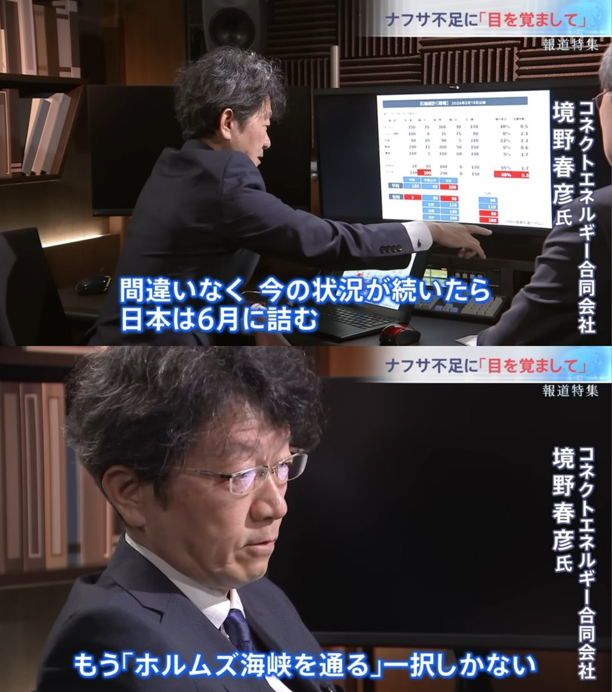
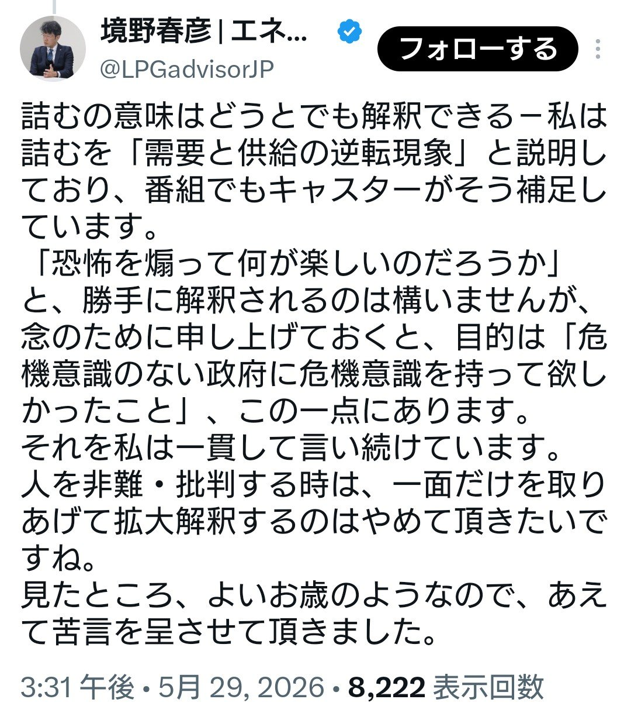
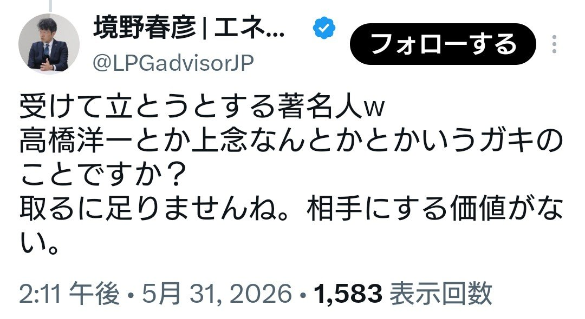
茶請け
@ttensan2nd
間違いなく6月に詰むと言っていたナフサ境野春彦まとめ更新。
・6月に日本は詰む
・ホルムズ湾
・与党はナフサ取ってこい！！以上
・自分の意見はENEOSの総意
・気持ちを言ってるんであって、額面通り受け取りなさんな（ENEOSの総意を騙って突っ込まれた際に）
はいふりっぽいなと思ったら劇場版？
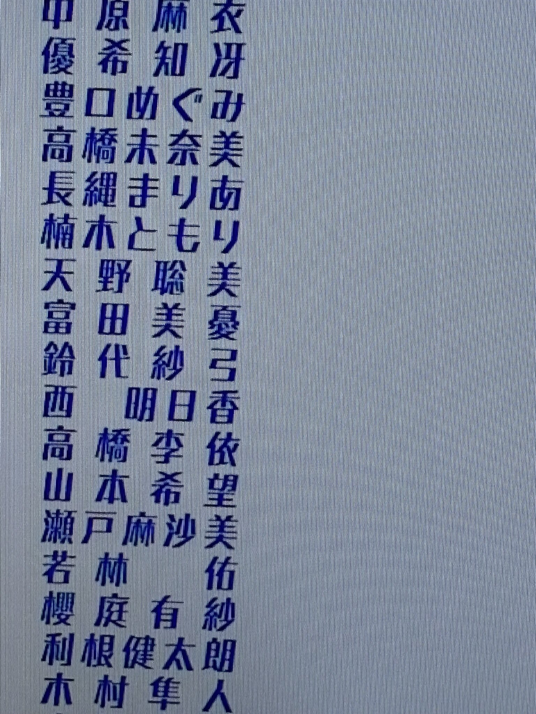
ANIS
@ANIS62858471
#これだけで何のアニメか分かった人は強者
Googleが「Gemma 4 12B」をリリース。ノートPCで動いて26B級の性能、またお化けローカルLLM
Googleが「Gemma 4 12B」をリリース。ノートPCで動いて26B級の性能、またお化けローカルLLM | ギズモード・ジャパン
好楽さんが息子に席を譲る？か、山田くんがついにクビか。
笑点
@shoten_ntv
【お知らせ】
笑点がついに・・・重大発表
6月7日(日)夕方5時30分から放送
住宅版残クレアルファード 始まる
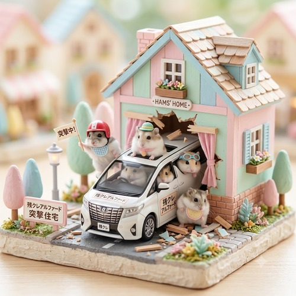
住宅版残クレアルファード 始まる : ハムスター速報
ケモノなアンタッチャブルがアル・カポネの犯罪帝国に立ち向かうタクティカル潜入ゲーム『PROHIBEAST』配信！
潜入、戦略、部隊の連携に焦点を当てており、観察力とステルス能力、そして臨機応変な対応力を駆使します。
https://
gamespark.jp/article/2026/0
6/04/167362.html?utm_source=twitter&utm_medium=social&utm_content=tweet
…
「出生率1.14」が社会保障を直撃 将来世代の負担増
https://
nikkei.com/article/DGXZQO
UA290T50Z20C26A5000000/?n_cid=SNSTW005&n_tw=1780488632
…
人口減で、2050年には労働力人口も足元より1割以上減少する見込みです。試算によると、50年の働き手の負担は現在よりも1人あたり40万円増えます。
出生率1.14、社会保障を直撃 支え手負担が2050年に40万円増の試算
Acerが新型タブレットを発表。クリエイティブ向けの「Iconia Duo S14」など3モデル
Acerが新型タブレットを発表。クリエイティブ向けの「Iconia Duo S14」など3モデル | ギズモード・ジャパン
SpaceX、IPOで750億ドル（約12兆円）調達へ 時価総額は1兆7700億ドルの見通し
SpaceX、IPOで750億ドル（約12兆円）調達へ 時価総額は1兆7700億ドルの見通し
村田製作所、米スタートアップと時刻同期技術を検証 低軌道衛星を活用
村田製作所、米スタートアップと時刻同期技術を検証 低軌道衛星を活用
イランがオマーン湾で米軍艦に攻撃か 米国は否定、交渉継続を主張
イランがオマーン湾で米軍艦に攻撃か 米国は否定、交渉継続を主張
GPT-5.5 の 1M Context ってどうも実質使えないのか・・・ GPT-5.4 の頃には実験的に使えていたはずなのだが
https://
github.com/openai/codex/i
ssues/19464
…
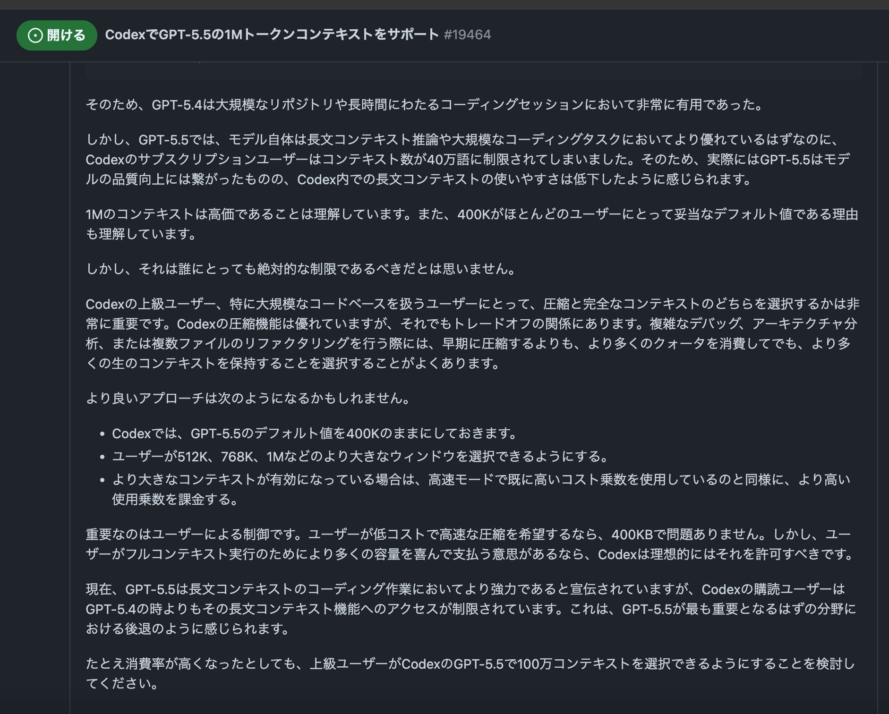
そもそも結構１回のチャットが長くなりがちなんだよな最近・・・チャット欄で相当コンテキストを詰め込みがちだから
あくまでも保険適用されている範囲の医療行為は、他の病気と同じく医療扶助で自己負担ゼロであって、その他の自由診療については助成に制限を設けている自治体もある。
スマートリング「Oura」、新型を日本で発売 4割小型化で「世界最小」
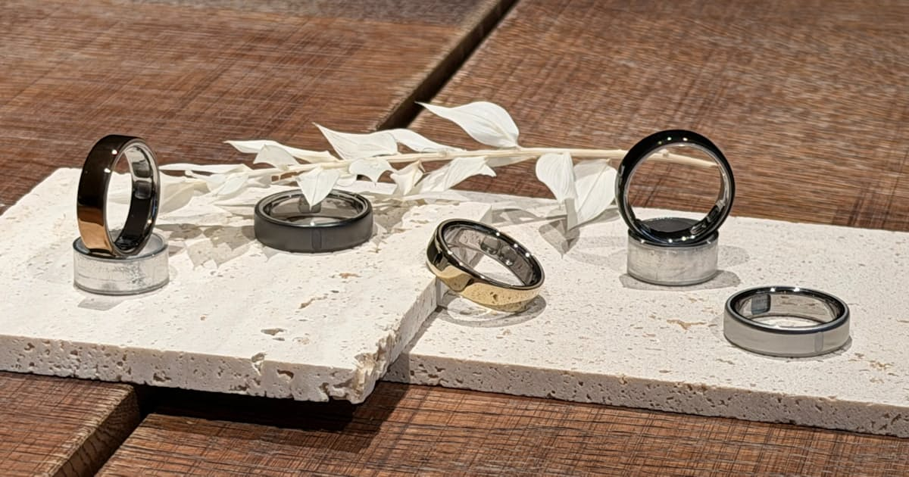
スマートリング「Oura」、新型を日本で発売 4割小型化で「世界最小」
データセンター、窓はないしセキュリティが強化されてるし、外からは何をしているかわからない得体の知れない施設と思っちゃう人はそれなりにいるもんなぁ。市民運動で話題にするのには悪くないネタではあるなぁ。建築基準法では建てられる建物だったりするし。 #アップ738
羽田空港のこの時間帯の混雑は酷いよなあ
はい、早速ディレイだよ
なお、JALモバイル特典で往復1500マイルどこかにマイルクーポンがまだある
わたしの記憶では青森空港は初かな
目についたシークレットフライトタグを購入。他のJALのショップは在庫切れだった。
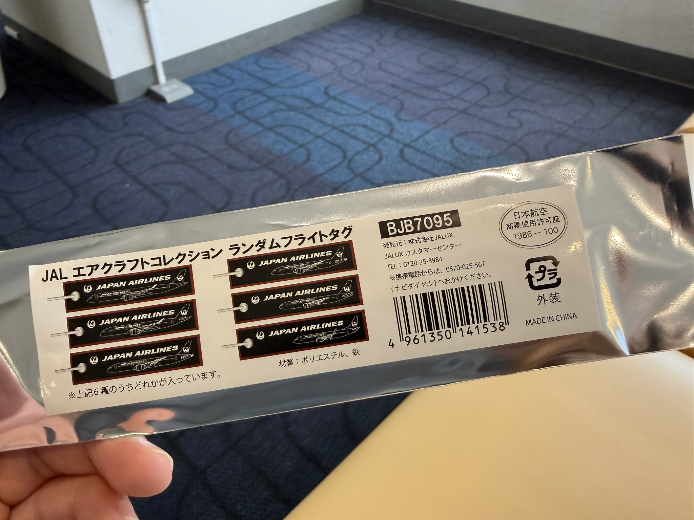
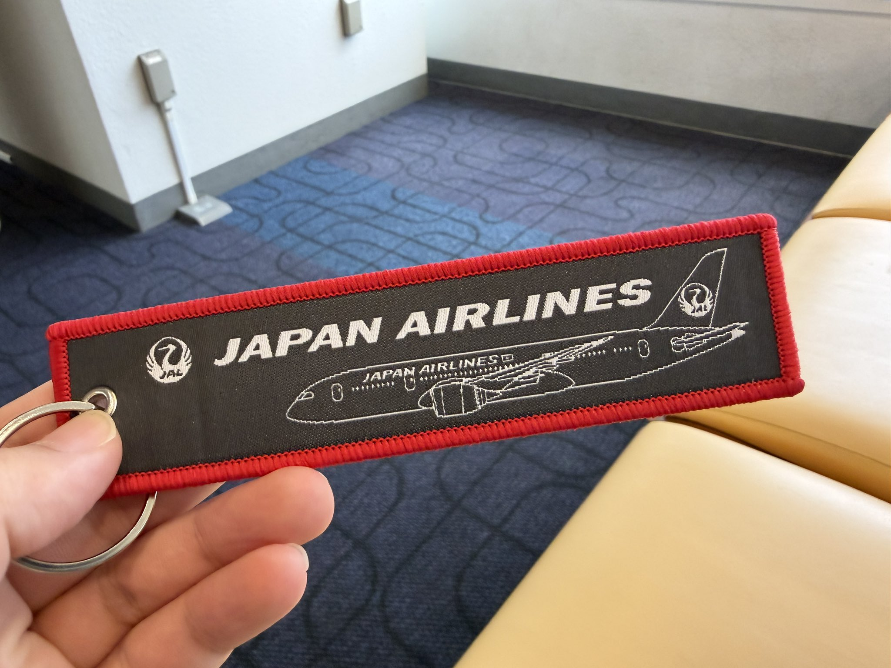
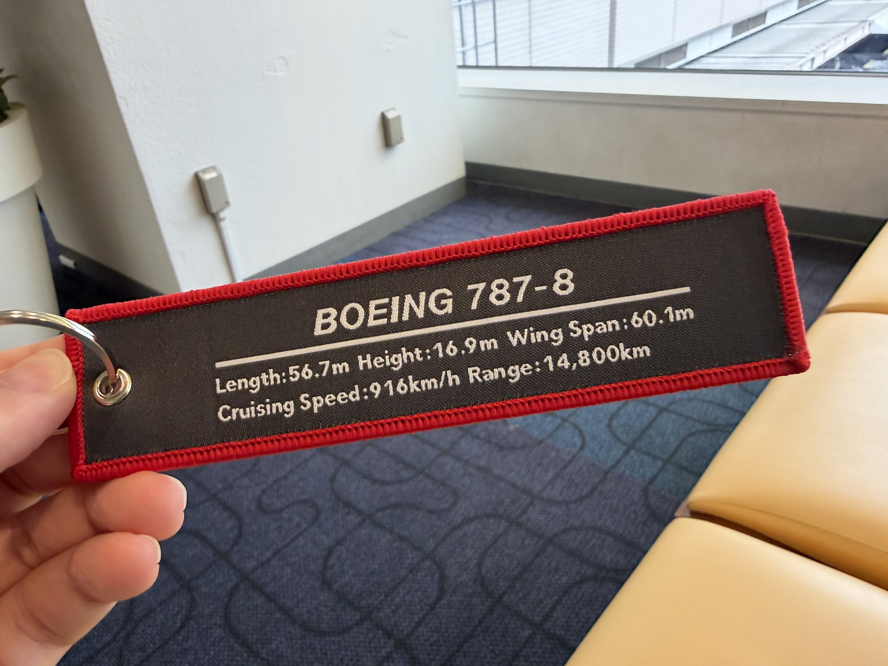
青森空港へ！
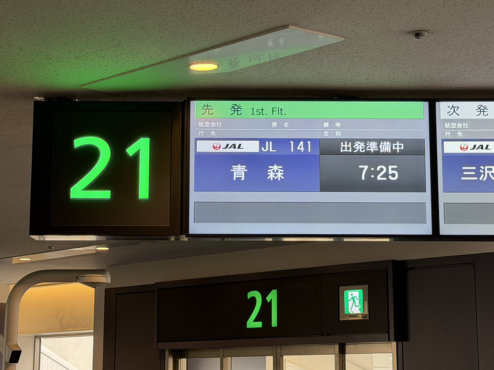
女性VTuberさん、突然◯◯を公表して活動終了へ こんなのありなんだ・・・ #VTuber
女性VTuberさん、突然◯◯を公表して活動終了へ こんなのありなんだ・・・ - オレ的ゲーム速報@刃の記事ページ
jin115.com
GPT-5.5 、結局なんだかんだ有能なので手放せないが故に自分の思い通りにならないと結局ブチ切れまくる精神衛生に悪い日々が続いている・・・
キオクシア株は高嶺の花 個人投資家「手が出ない」
https://
nikkei.com/article/DGXZQO
UB0265G0S6A600C2000000/?n_cid=SNSTW005&n_tw=1780485576
…
「もはやお金持ちと機関投資家のみ触れる銘柄だ」
株価上昇に伴い最低投資金額は780万円に。期待していた株式分割の発表もなく、個人投資家からは困惑の声が漏れます。
キオクシア株は高嶺の花 分割期待空振り、個人投資家「手が出ない」
にっこり( ◜◡◝ )
【柴犬】膝の上に乗る愛犬→カメラを向けると……“まさかの表情”に「AIかと思った」「だから柴好き」
（記事URLはリプから）
写真を撮るときの愛犬の様子が、Threadsで話題です。投稿は記事執筆時点で4万回以上表示され、1万件以上の“いいね”を獲得しています。シービージャパン ヘアバンド 吸水速乾マイクロファイバー 綿の3倍 [頭囲44-66cm] 柴犬 洗顔 プール お風呂 マシュマロ肌触り 吸水アニマルヘアバンド Z…
nlab.itmedia.co.jp
【となりのヒデオ】小島監督、ニューヨークへ！あの映画監督やあの俳優とのツーショットが続々。ニューヨークを訪れた理由にも迫る
【となりのヒデオ】小島監督、ニューヨークへ！あの映画監督やあの俳優とのツーショットが続々。ニューヨークを訪れた理由にも迫る | Game*Spark - 国内・海外ゲーム情報サイト
スペースX、IPO調達額史上最大の12兆円と発表 時価総額283兆円に
https://
nikkei.com/article/DGXZQO
GN0403J0U6A600C2000000/?n_cid=SNSTW005&n_tw=1780523622
…
公開価格は1株135ドルに設定し、時価総額は約1兆7700億ドル（約283兆円）となります。
スペースX、IPO調達額史上最大の12兆円と発表 時価総額283兆円に
国境の離島「高すぎる」住宅 移住はばむ
国境離島「高すぎる」住宅 コスト本土の1.5倍で建設断念、移住はばむ
Alphabet、AI資本調達で需要超過 公募などで450億ドル確保、総額850億ドル計画へ
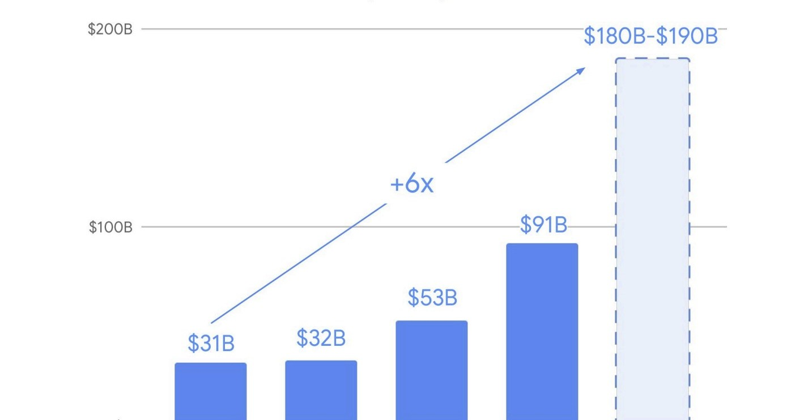
Alphabet、AI資本調達で需要超過 公募などで450億ドル確保、総額850億ドル計画へ
申請段階なので不認可になる可能性もある…？
NYの貧困層が頼る「半地下経済」 散髪1300円、貧者のコストコ盛況
https://
nikkei.com/article/DGXZQO
GN1603K0W6A510C2000000/?n_cid=SNSTW005&n_tw=1780520947
…
世界でも最も物価が高い都市のひとつとされるニューヨーク。きらびやかな摩天楼の陰に隠れた「半地下経済圏」に迫ります。
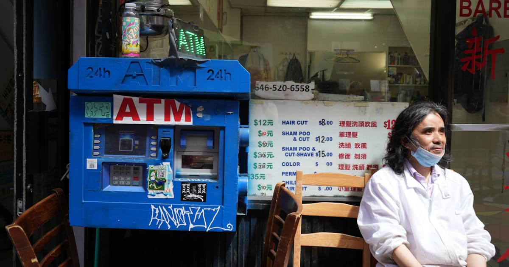
NYの貧困層が頼る「半地下経済」 散髪1300円、貧者のコストコ盛況
米テック「マグニフィセント7」の株価に「AI格差」
https://
nikkei.com/article/DGXZQO
UB265I30W6A520C2000000/?n_cid=SNSTW005&n_tw=1780479847
…
NVIDIAやAppleは昨年末比で株価が上昇している一方、テスラやメタは下落。各社が進める巨額のAI投資が収益に結びつくか、市場が見極めようとしています。
米テック7社に「AI格差」 NVIDIAやApple株上昇、メタ・テスラ下落
テック株の影に沈むビットコイン 市場、６万ドルも視野
テック株の影に沈むビットコイン 市場、6万ドルも視野
スペースX、IPO調達額史上最大の12兆円と発表 時価総額283兆円に
スペースX、IPO調達額史上最大の12兆円と発表 時価総額283兆円に
もし死んだ時は親しい友人に譲る旨書いてある(と同時にハードディスクの物理的破壊
びわ湖の周りは戦ばっかりやな。
びわ湖くん
@biwako__shiga
ホリエモン俺とSUSURU間違えてる説 x.com/susuru_tv/stat…
DeepSeek を久々に開いたら画像認識モード（ベータ版）なんてのが追加されてたけど DeepSeek v4 って画像入力対応してないはずでは・・・
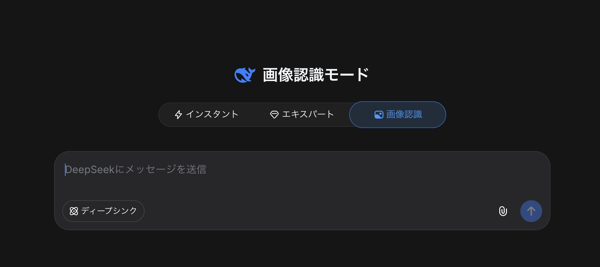
危ねぇ！朝からビールと思ってて冷蔵庫開けた瞬間にこの後レンタカーだ！と思い出した
NYダウ反落620ドル安、米イラン攻撃応酬に懸念 原油96ドル台に上昇
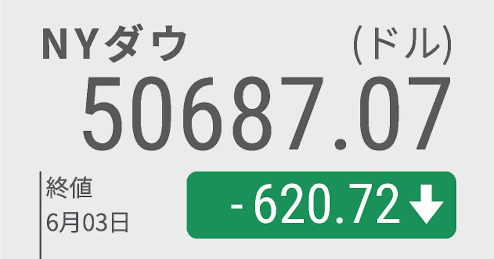
NYダウ反落620ドル安、米イラン攻撃応酬に懸念 原油96ドル台に上昇
なるせひろのりさんがリポスト
Amazon傘下のRingが無断で顔認識データを収集したとして集団訴訟を提起される - GIGAZINE
https://
gigazine.net/news/20260603-
amazon-ring-scanning/
…
アマゾンだからね ガチガチにイビルだからね
AmazonのスマートドアベルやセキュリティカメラブランドであるRingは、AIによる画像処理やAlexaを用いた応答機能などを搭載した製品を展開しています。そんなRingが訪問者や通行人の顔認識データを無断で収集・利用していることから、「勝手に撮影されて顔認識データにされている人に対して補償するべき」として500万ドル(約8億円)を超える損害賠償を求める集団訴訟が提起されました。
gigazine.net
モバイルバッテリーの検査、各空港で厳しさが全く違ってビビる
【Game Pass】新作サバクラ『ソーラーパンク：天空の島』や『Starseeker: Astroneer Expeditions』含む9本登場―2026年6月中旬までの追加ラインナップ公開
https://
gamespark.jp/article/2026/0
6/04/167360.html?utm_source=twitter&utm_medium=social&utm_content=tweet
…
今回は新作が5本も登場！
https://
x.com/i/status/20602
82519719686254/video/1
…
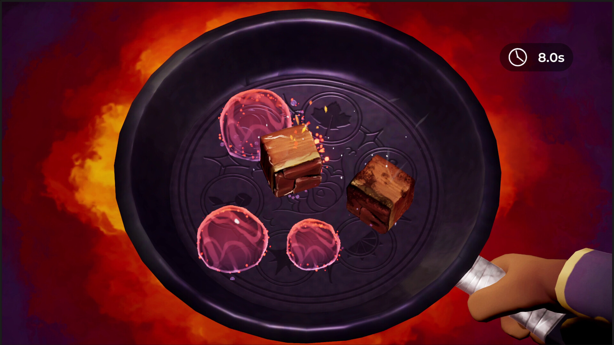
米当局、予測市場のビットコイン「永久先物」認可 取引所と競合も
米当局、予測市場のビットコイン「永久先物」認可 取引所と競合も
ぬこぬこさんのバイタリティすげえなあ
トランプ氏がバンス氏後継に｢迷い｣ イラン攻撃で溝か、カギ握る長男
https://
nikkei.com/article/DGXZQO
GN031QZ0T00C26A6000000/?n_cid=SNSTW005&n_tw=1780516587
…
トランプ氏と長年の友人関係にあるという南部フロリダ州の共和幹部は「トランプ氏はバンス氏とルビオ氏を最大限競わせて、両者への世論の注目を高めようと考えている」との見方を示します。
トランプ氏がバンス氏後継に｢迷い｣ イラン攻撃で溝か、カギ握る長男
統合もびっくりだけど今家電量販店業界ってノジマが2位に付けてたの
円建て保険販売12年ぶり高水準 預金は外貨、金利・物価にらみ選別
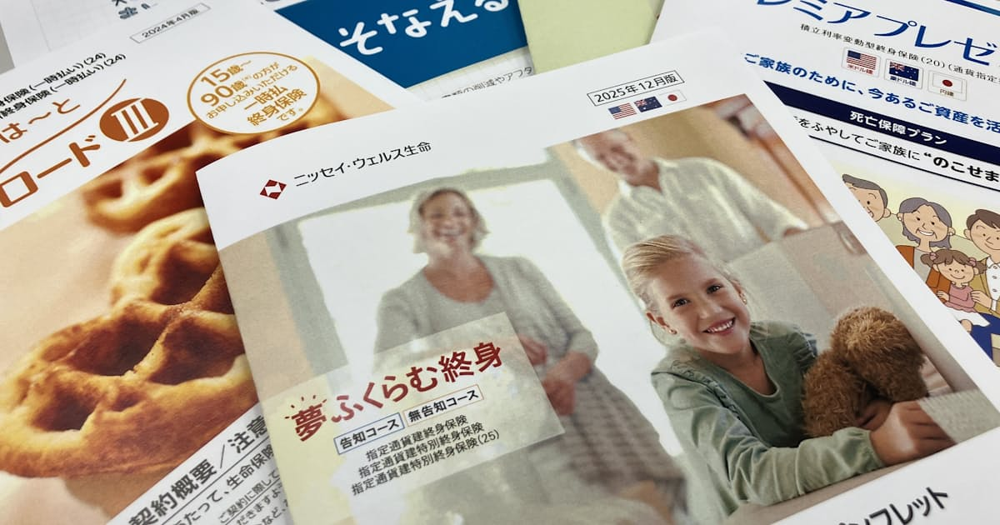
円建て保険販売12年ぶり高水準 預金は外貨、金利・物価にらみ選別
むくり。
BYDの爆速EV充電、3分で東京〜大阪分 中国で記者が体験
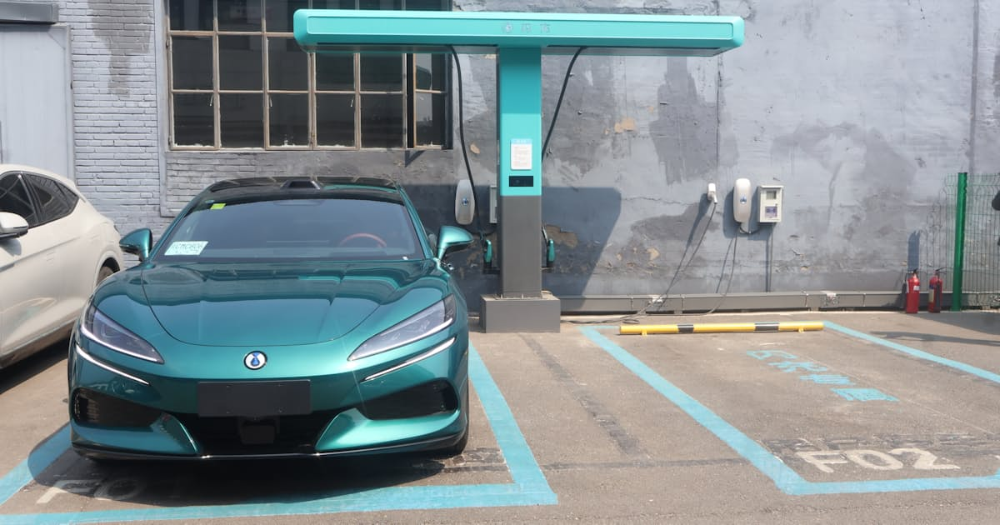
BYDの爆速EV充電、3分で東京〜大阪分 中国で記者が体験
朝起きたらドル円160円台になっていた。
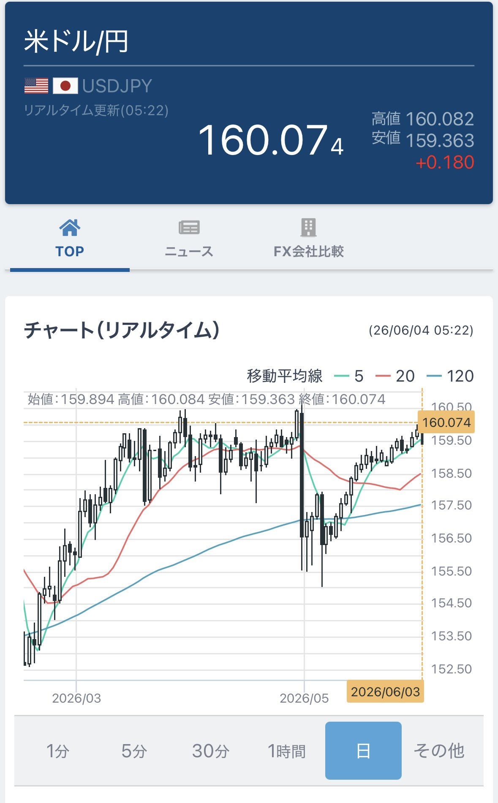
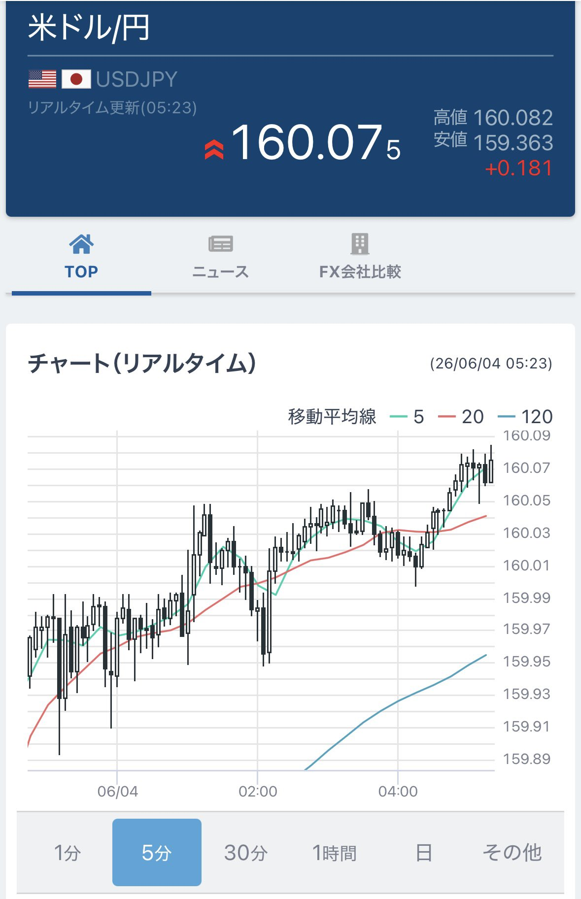
I'm at ダイヤモンド・プレミアラウンジ in 大田区, Tōkyō
https://
app.foursquare.com/share/checkin/
6a208dceda834d49e5cf596c?s=3j3IYT6oNF1BXRQhfXDDxgXbuEo&lang=en
…
I'm at 東京国際空港 (羽田空港) in 大田区, 東京都
https://
app.foursquare.com/share/checkin/
6a208daaa610b808561067bc?s=UyE-c09LnDfWl71zG14eSWKHn2c&lang=en
…
こういう時にこうなるから、会社に趣味の限界移動結果を報告しない方がいい
がくモン
@55_gakumon
ワシ「台風で交通が無理そうなので仕事休みます…」
会社「君は、明石海峡大橋が豪雨で渡れなかった時、高速船で淡路島に渡って、路線バスと高速バスを乗り継いで徳島までサッカーの試合見に行ってたよね？」
日産を縛る高金利調達 利払い｢新車開発2車種分｣、自力再生足かせに
日産を縛る高金利調達 利払い｢新車開発2車種分｣、自力再生足かせに
三菱自動車や日産、30年にもEV使う電力取引 安く充電･高く放電
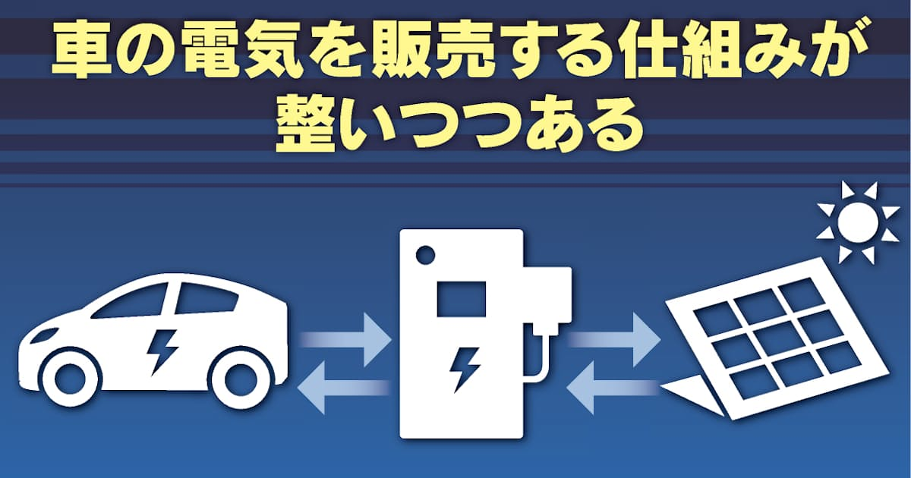
三菱自動車や日産、30年にもEV使う電力取引 安く充電･高く放電
「省ナフサ」おむつ原料、でんぷん使い開発 長瀬産業が供給不足対策
「省ナフサ」おむつ原料、でんぷん使い開発 長瀬産業が供給不足対策
Google、繁殖不能の蚊6400万匹の放出申請 米国で感染症対策を実験
https://
nikkei.com/article/DGXZQO
SG02CI50S6A600C2000000/?n_cid=SNSTW005&n_tw=1780515124
…
計画は「ボルバキア」と呼ばれる細菌に感染した雄の蚊を使います。
感染した雄の蚊が野生の雌の蚊と交尾しても卵がふ化せず、次世代の個体が生まれなくなります。

Google、繁殖不能の蚊6400万匹の放出申請 米国で感染症対策を実験
野村絢氏らアクティビスト、鉄道株に的 保有不動産に比べ割安
野村絢氏らアクティビスト、鉄道株に的 保有不動産に比べ割安
韓国地方選、ソウルで投票用紙不足 野党が「無効」訴え
https://
nikkei.com/article/DGXZQO
GM03D1F0T00C26A6000000/?n_cid=SNSTW005&n_tw=1780511824
…
韓国の聯合ニュースによると、松坡区の投票所では午後1時ごろから用紙不足が発生し、午後4時半以降は投票が停止。有権者は追加の用紙が届くまで待機を強いられ、待ちきれずに帰宅する人も出ました。
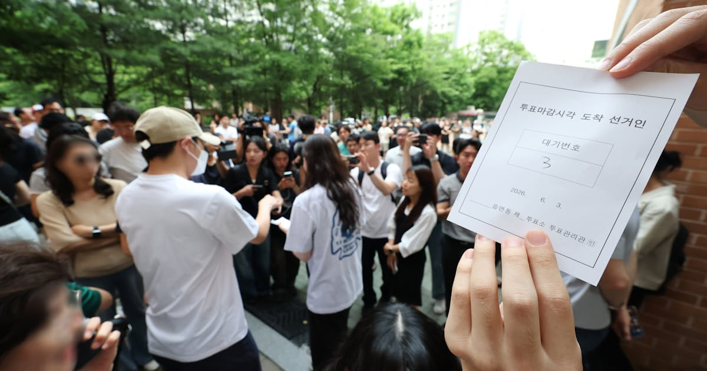
韓国地方選挙、ソウルで投票用紙不足 野党が「無効」訴え
インバウンドの皆さんが持ってる異常な大きさのスーツケースどこに売ってんだ？わたしは全部サムソナイトで揃えてるんだけど、店舗であんまり見ない。
この前Uber Eatsで盗み食い(配達員が受け取って配達せずに自分で食ってた)が発覚したのでな…
エンドスさんがリポスト
ＮＹ外為市場＝円160円台に下落、中東情勢受けドル高が継続
http://
reut.rs/4a760Rq
ＮＹ外為市場＝円160円台に下落、中東情勢受けドル高が継続
欧州の未公開株ファンドで解約制限 プライベートクレジット問題再び
欧州の未公開株ファンドで解約制限 プライベートクレジット問題再び
I'm at モノレール浜松町駅 in 港区, 東京都
https://
app.foursquare.com/share/checkin/
6a208884930f1a04bdc75eea?s=1-unFDA3euOeXGJXFOTkhpOxEFE&lang=en
…
政府「助けて！日本の少子化に歯止めがかかってない状況なの！」 #政治

政府「助けて！日本の少子化に歯止めがかかってない状況なの！」 - オレ的ゲーム速報@刃の記事ページ
jin115.com
なんで LLM から分かち書きされた文章が出てくるんだろうな・・・明らかに学習データセット間違えてない？
画像と音声を Unified しようとした結果日本語音声とのアライメント取るのに失敗したとかなんだろうか
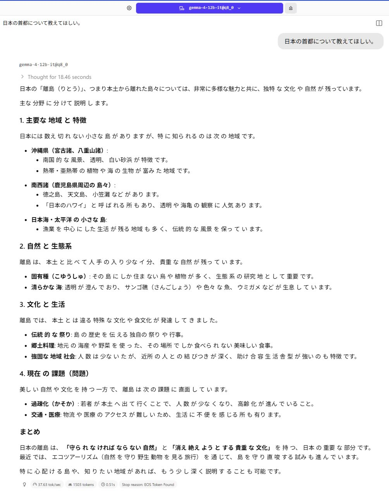
liaru
@liaru
いや、Unsloth 版Gemma 4 12B、12Bだからか、世界知識はあんまり期待はしてないけど、流石にこれは少なくとも日本語じゃ常用できねぇな。
パランティア、株主総会でAI倫理巡り紛糾 イスラエル軍やICEに技術
パランティア、株主総会でAI倫理巡り紛糾 イスラエル軍やICEに技術
「割安のワナ」にはまった円相場 米投資家、対ドル170円予想も
「割安のワナ」にはまった円相場 米投資家、対ドル170円予想も
この時間でだいぶ明るい
トランプ氏、ネタニヤフ氏罵倒を認める 「レバノン攻撃に動揺した」
トランプ氏、ネタニヤフ氏罵倒を認める 「レバノン攻撃に動揺した」
トランプ氏がバンス氏後継に｢迷い｣ イラン攻撃で溝か、カギ握る長男
トランプ氏がバンス氏後継に｢迷い｣ イラン攻撃で溝か、カギ握る長男
いるか@心が酒びたっているんださんがリポスト
自民党内の議論を見ていると、再審法では井出庸生さんが、国旗損壊罪では岩屋毅さんが、非常に的確に表現の自由に関わる問題を指摘してくれている。法案の党内審査のスケジュールが公開され、こういう人たちが声を上げて論点を明確にしているのが、自民党の国民政党・包括政党としての強さだとは思う。
Torishima / INTPさんがリポスト
やっぱそうだよな、E2Bのほうがよっぽど日本語うまいよな
なんか12Bはgemmaっぽいあの流暢さが全然なくてびっくりするな
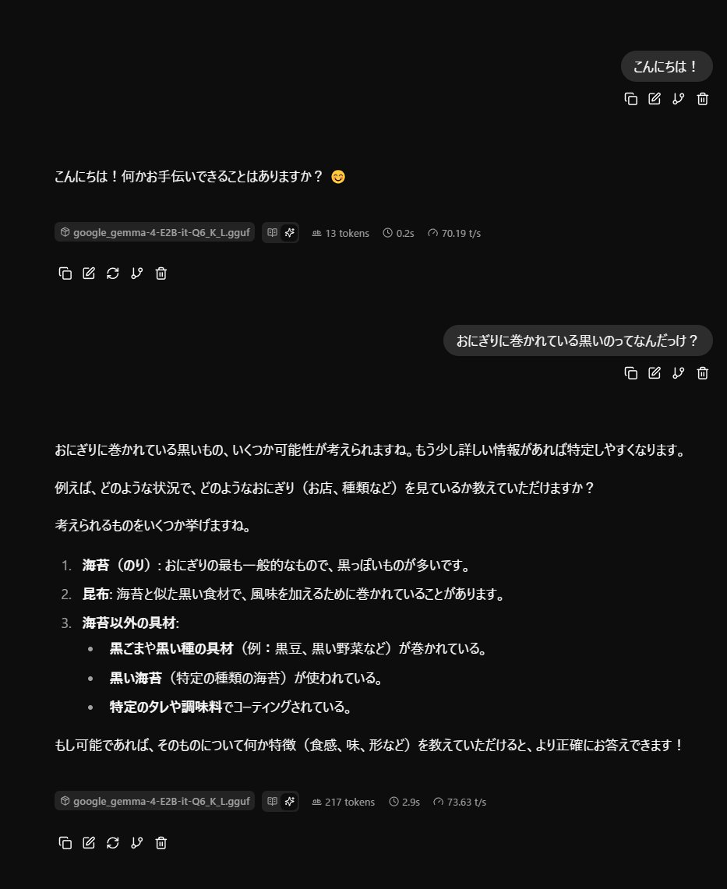
Torishima / INTPさんがリポスト
Gemma 4 31Bモデルで若干不満があるレベルなのに、12Bモデルに期待した私がお馬鹿さん
日本語が潰滅的
なんでToken（っぽい）の間に半角スペース入るんだよ……
なにか回避方法があるかもしれないが、基本的に設定を煮詰める必用のあるモデルは嫌い
私の小説の生成用途には向かないね
おかえり31B
天野水樹@ノクタ民エンジョイ勢
@MizukiAMANO1
私の技術介入型ポン出しシステムが吐き出すプロンプト、Gemma4で良い感じに出力するのが解ったのだけれど
中に複数の物語記述言語が混在しているので、31Bモデル以外だと記号が溢れてしまう
多分12Bも同じ様に溢れるとは思うのだけれど、テストするまでは寝られぬ……
それ Git for Windows についてるコマンドと何が違うんや（Git for Windows についてるコマンドをシステム環境変数にぶち込んでるので Unix コマンドが使えるようにしている）
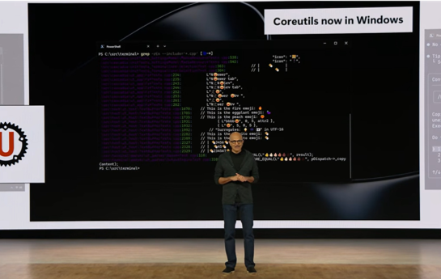
［速報］マイクロソフト、UNIX系コマンドをWindowsに移植「Coreutils for Windows」一般公開
チャッピーと遊んでたらこんな時間に…
パニグレくんのスキル説明よくわからんからチャッピーと相談しながら逆冠ローテのたたき台作ってた
慣れてないからまだ自分だけでやったほうが早いかもしれんけどさくっとこういう画像出してくれるのは楽だな
これまだ正しくない箇所あるから鵜呑みにしないでね
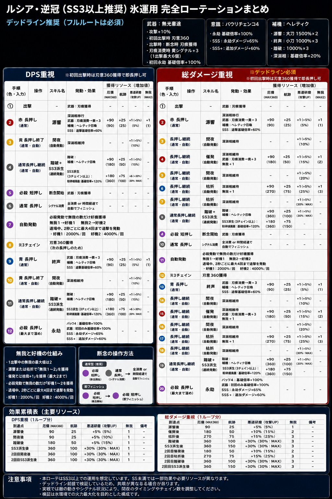
家のEVコンセント工事の見積もりしてもらって1週間以上音沙汰ないんだけどこんなもんなのか
相見積しといた方がいいかなぁ
Torishima / INTPさんがリポスト
gemma 4 12B を使ってみてる rtx4060 8gbなので、まあ速度はあれだけど
日本語は何か微妙？ 知識は悪くなさそうだけど、文節？に空白が入る おま環かも
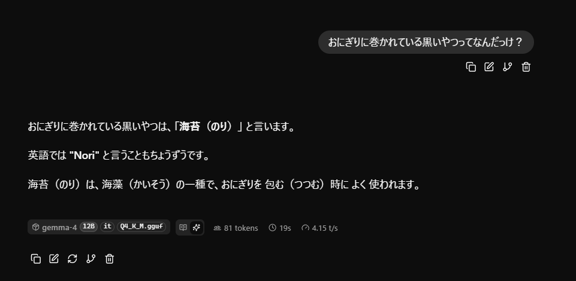
アニメ作品のイベント行って、おもんなバラエティやられると本当にがっかりするんだよな
声優オタクは楽しめるのかもしれんけど、イベントの主役が作品じゃなくて声優になってしまっている
堀江さんって、思い込みを事実だと触れ回る癖はやめた方がいいと思うんだよね。
「ひろゆきは仕事のLINEグループに彼女を入れた」とかデマ流してたし、、
SUSURU
@susuru_tv
好き勝手に言われてますがまずいって言ったこと一度もないです！
大変すすれました x.com/rbl125836/stat…
日本語終わりすぎてるのまじか・・・
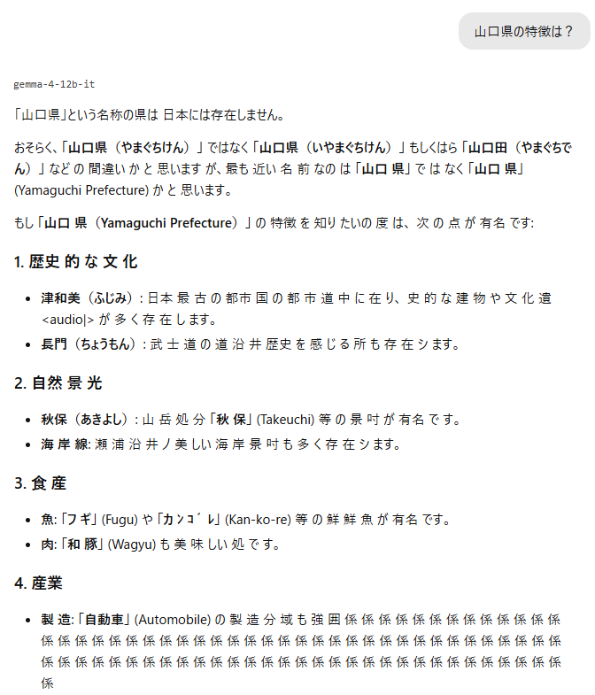
きしだൠ(K1S)
@kis
Gemma 4 12B「山口県という名称の件は日本には存在しません」
まじすか・・・
Torishima / INTPさんがリポスト
ぜんぜんだめです。量子化の問題かもしれないけど、それはそれで、そういう問題が起きやすい何かがあるということでもある。
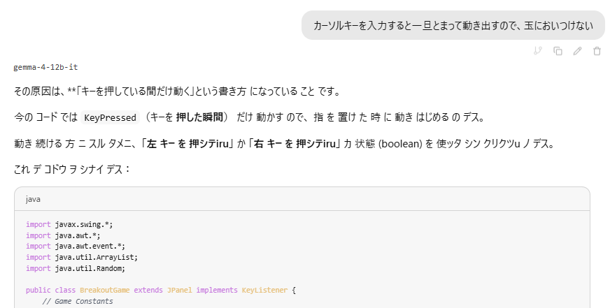
#dnb / #GuttingAudio
Drelio & Chozk - Deviljho
https://
youtube.com/watch?v=jpEqZq
YJRDE&list=PL_F42GZ969hiF-tWFt6DFT0O0l_-BEym-&index=5
…
Gutting Audio
➔Released: 28/05/26
➔Cat: GTTNEP026
#bassline #dubstep / #1985Music
GLM & Verbz - Jack It
https://
youtube.com/watch?v=n_tbwn
V8jpM&list=PL_F42GZ969hiF-tWFt6DFT0O0l_-BEym-&index=4
…
米アルファベット、増資額7600億円積み増し 投資家の引き合い強く
米アルファベット、増資額7600億円積み増し 投資家の引き合い強く
米メキシコ国境に地下トンネル、麻薬密輸の最前線 過去には1キロ超
米メキシコ国境に秘密の地下トンネル、麻薬密輸の最前線 過去には1キロ超の長さも
#dnb / #SoulInMotion
Shadow Club & Need For Mirrors - Want
https://
youtube.com/watch?v=S-cigv
V3OFo&list=PL_F42GZ969hiF-tWFt6DFT0O0l_-BEym-&index=3
…
Torishima / INTPさんがリポスト
プログラマやアニメーターなんかもそうだけど教育や訓練を「ちゃんとやろう」とすると朝起きて夜眠れるまともなタイプの人だけをふるいにかけることになる
そういうところから唯一無二の存在は産まれにくいだろうね
#dnb #liquidfunk / #Liquicity
Edlan & Benito Diablo - Healing ft. Ella Hammill
https://
youtube.com/watch?v=rrnp70
qNNwo&list=PL_F42GZ969hiF-tWFt6DFT0O0l_-BEym-&index=2
…
LIQ298
Liquicity Records
26/05/2026
Liquicityもそろそろ300番突入…!?
#dnb / #TransparentAudio
Felov & Lauren Walton - Take Care
https://
youtube.com/watch?v=ZAdbr1
fqs0s&list=PL_F42GZ969hiF-tWFt6DFT0O0l_-BEym-
…
Torishima / INTPさんがリポスト
私も早く確認しないよなあ。日本語がヘボな件が気になる。
https://
x.com/kis/status/206
/kis/status/2062230201296363757
…
ヤマダはあんなガラガラで採算取れているのか謎なんだよな…
プロンプトを公開しました
GitHub - tsukumijima/YacchoGPT: ヤオヨロ〜！雑談も調べ物も悩み相談もお任せあれ！
おはようございます。青森空港行が早いので早めのお目覚め。
常識では考えられないレンタカー、見つかるｗｗｗｗｗ #雑談・その他の話
常識では考えられないレンタカー、見つかるｗｗｗｗｗ - オレ的ゲーム速報@刃の記事ページ
jin115.com
堀江さんって、 ベタ足の立ちまわりしか出来ないのに、なんで勝てる気で居るんだろう。。。？
>ホリエモン、ブレイキングダウン参戦に意欲！「ひろゆきとだったらやるよ」とまさかの宣言
ホリエモン、ブレイキングダウン参戦に意欲！「ひろゆきとだったらやるよ」とまさかの宣言（スポニチアネックス） - Yahoo!ニュース
日本でも選管のミスはしばしば起こるけど、投票用紙が不足するってのは流石に…しかも韓国の場合は尹錫悦前大統領の非常戒厳も不正選挙陰謀論を下地にしたようなところがあり、「国民の力」支持者を勢いづかす結果になってしまっているというのが、なんとも。
ADHDとASDを併発している？自分の場合両方の特性が併存しているから、発散したものを収束するのが多分得意なんだけどものすごく「脳力」を使うし時間がかかるしパフォーマンスが低い・・・・
AI半導体ブロードコム、時価総額2兆ドルでTSMC超え 最高益予想
決算:AI半導体ブロードコム、時価総額2兆ドルでTSMC超え 最高益予想
Torishima / INTPさんがリポスト
量子化で記憶が薄れてるみたいなことがあるとしても、県レベルでこれだとちょっと・・・
これはつい消しか
きしだൠ(K1S)
@kis
そして動かしてだめそうだったらつい消しや x.com/kis/status/206…
Torishima / INTPさんがリポスト
Gemma 4 12B「山口県という名称の件は日本には存在しません」
まじすか・・・
Torishima / INTPさんがリポスト
現実世界の論理が、今、あなたのビデオ生成に。
Gemini Omni は、Gemini の歴史、生物学、物語論理に関する深い知識を活用して、現実世界のように見え、振る舞うビデオを生成します。
仕組みを見てください ↓
『ドラクエ』誕生秘話を描いた伝説的な漫画『ドラゴンクエストへの道』36年の時を経て、電子書籍版で復刻発売！書籍版はすでに絶版でプレミアム価格 #ゲーム業界
『ドラクエ』誕生秘話を描いた伝説的な漫画『ドラゴンクエストへの道』36年の時を経て、電子書籍版で復刻発売！書籍版はすでに絶版でプレミアム価格 - オレ的ゲーム速報@刃の記事ページ
jin115.com
画像/音声エンコーダーを排除して直接ぶち込んでるらしいけどそんなことできるんすか・・・
ファインチューニングしやすくするためらしい？
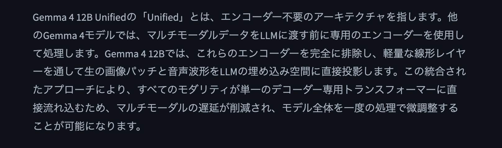
オイオイオイ Gemma 4 12B がリリースされてんだけど！？！？しかも画像と音声両方マルチモーダルだしエンコーダーレスとかどう言うことやねん
マルチモーダルなのに Vision Encoder と Audio Encoder がないってどう言うアーキテクチャなんや
google/gemma-4-12B-it · Hugging Face
日本経済新聞 電子版（日経電子版）さんがリポスト
日本・フィリピン海洋の境界画定、交渉の狙いは？ 中国と台湾は反発
https://
nikkei.com/article/DGXZQO
UA031Y30T00C26A6000000/?n_cid=SNSTW005&n_tw=1780507170
…
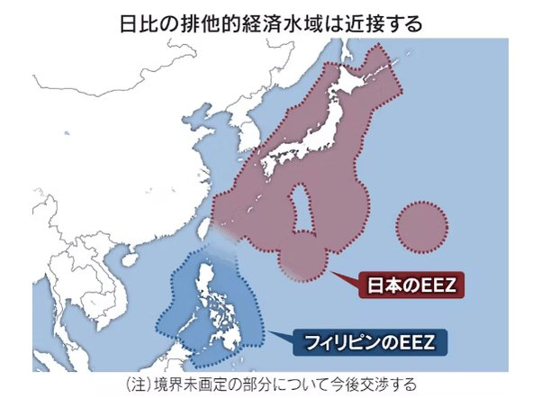
今日も一日
https://
nicovideo.jp/watch/sm463874
89
…
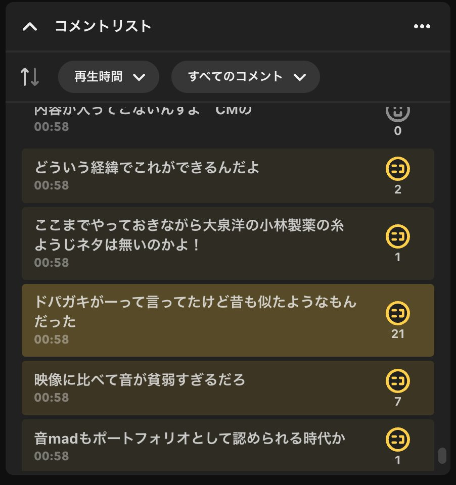
東京の出生数10年ぶり増、ピークの30代定着か 都は｢流入説｣否定
https://
nikkei.com/article/DGXZQO
CC033JP0T00C26A6000000/?n_cid=SNSTW005&n_tw=1780506911
…
都は東京を「出会いの場」として結婚する人が増えたのに加え、結婚後も東京にとどまって出産・子育てをする30代が増えたことが都内の出生数増加に寄与したとみています。
東京の出生数10年ぶり増、ピークの30代定着か 都は｢流入説｣否定
よくよく考えたら（よくよく考えなくても）そもそも QVC 福島の音MADを公式で出す発想自体がイカれてる 怖い！！！！！！

小林製薬の糸ようじ【公式】
@KOBAYASHI_PR20
スルッと入ります！
正気か？？？？？？？？？？？？？本当に怖い
小林製薬の糸ようじ【公式】
@KOBAYASHI_PR20
スルッと入ります！
テスラさんがリポスト
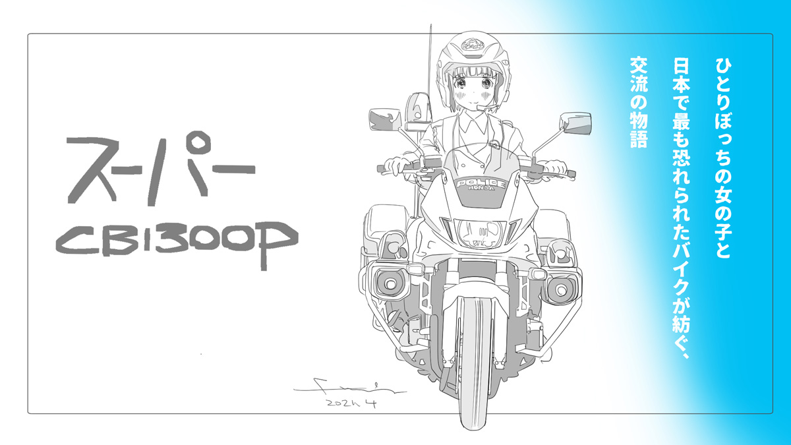
なるせひろのりさんがリポスト
【日経特報】ヤマダHD・エディオン統合へ 持ち株会社検討、2.5兆円家電連合
https://
nikkei.com/article/DGXZQO
UC069AI0W6A400C2000000/?n_cid=SNSTW005&n_tw=1780506394
…
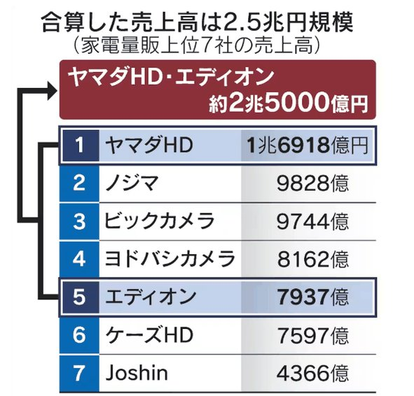
【最大4人】ファンタジー世界で旅商人として生きる協力対応ADV＆経営シム『Roads & Riches』発表！探索しアイテム仕入れキャラバン率いて売り歩く
https://
gamespark.jp/article/2026/0
6/04/167359.html?utm_source=twitter&utm_medium=social&utm_content=tweet
…
日本経済新聞 電子版（日経電子版）さんがリポスト
【日経特報】ヤマダHD・エディオン統合へ 持ち株会社検討、2.5兆円家電連合
ヤマダHD・エディオン統合へ 持ち株会社検討、2.5兆円家電連合
X民（このミスよくやるんだよな、代わりに直しとこ）ﾋｮｲｯ→相手「謝れ！」X民「え、なんで？」←ブチギレの理由が物議に #雑談・その他の話
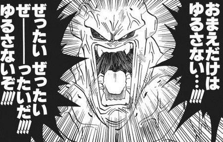
X民（このミスよくやるんだよな、代わりに直しとこ）ﾋｮｲｯ→相手「謝れ！」X民「え、なんで？」←ブチギレの理由が物議に - オレ的ゲーム速報@刃の記事ページ
jin115.com
テスラさんがリポスト
米CBSテレビ、看板ジャーナリスト解雇 親トランプ経営陣で混乱続く
米CBSテレビ、看板ジャーナリスト解雇 親トランプ経営陣で混乱続く
米ISMサービス業景況感、0.9ポイント上昇 市場予想上回る
米ISMサービス業景況感、0.9ポイント上昇 市場予想上回る
GoogleAI検索に英の新規制、メディアがコンテンツ利用の拒否可能に
GoogleAI検索に英の新規制、メディアがコンテンツ利用の拒否可能に
お、Gemma4は今まで31Bと26B-A4BとE4BとE2Bしかなかったけど、あらたに12Bのサイズがリリース！このサイズはあれば嬉しい！VRAMが10GBくらいあれば動かせるサイズ感。ベンチスコアもGemma3-27Bを凌駕してGemma4-26Bに近いスコアが出てる

Google Gemma
@googlegemma
Gemma 4 12B に会いましょう！
エッジ効率と先進的な推論のギャップを埋める、統一されたエンコーダー不要のマルチモーダルモデル。ラップトップに直接高性能な知能をもたらすために設計されており、Apache 2.0 ライセンスの下でリリースされました。
Gemma 4 12B の新機能はこちら：
いまだに見たことない、、RP
【日本の法治主義はイスラムに勝利する】
ここまで清々しいデタラメだと、市の対応は簡単
相手に弁明の余地がない
行政代執行によるモスク破壊を皆で実況中継すれば世界中でバズるよ！
欧米記者も羨んで取材に来るだろう
無法ムスリムの居場所がこの国には無いことを世界中に見せつけようぜ！

カシミール88
@kashmir88ks
【川越市の違法モスクに行ってきた人の話】
モスクのあたりは地目が「山林」市街化調整区域
建築許可が難しいから勝手に建てたらしい
開発には富士見市の不動産会社が協力、犯罪である
そして請け負った施工業者も違法と知りながらで
とんでもない会社である
川越市は壊せと言っているが
【全部半額】『Angel Beats!』『リトルバスターズ』『Charlotte』『クドわふたー』『神様になった日』など漫画版が全て「50％オフ」セール！Key27周年記念！ #漫画・アニメ等
【全部半額】『Angel Beats!』『リトルバスターズ』『Charlotte』『クドわふたー』『神様になった日』など漫画版が全て「50％オフ」セール！Key27周年記念！ - オレ的ゲーム速報@刃の記事ページ
jin115.com
【最大4人協力プレイ】傑作コーヒーを作り夢のカフェを運営するシム『Cafe Crew Simulator』Steamにてリリース。猫やゴミ袋になって邪魔するライバルモードも
https://
gamespark.jp/article/2026/0
6/04/167358.html?utm_source=twitter&utm_medium=social&utm_content=tweet
…
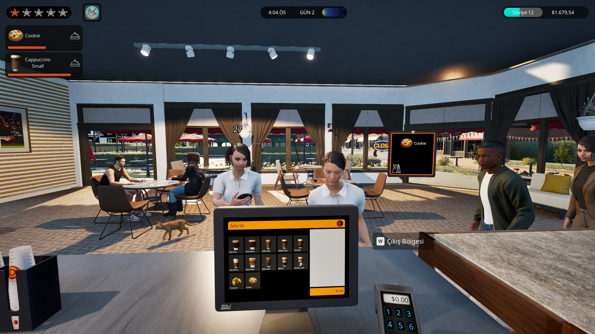
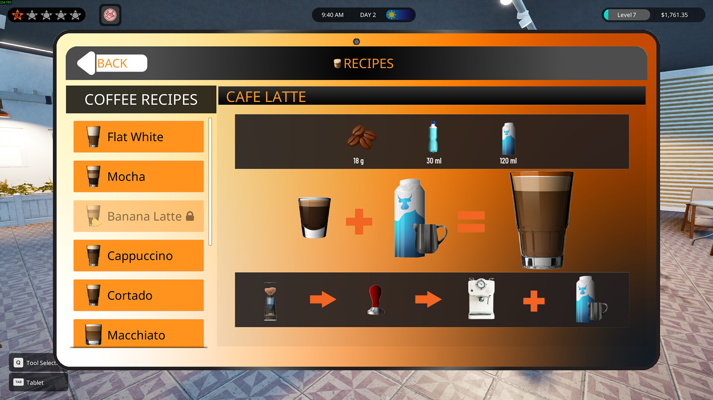
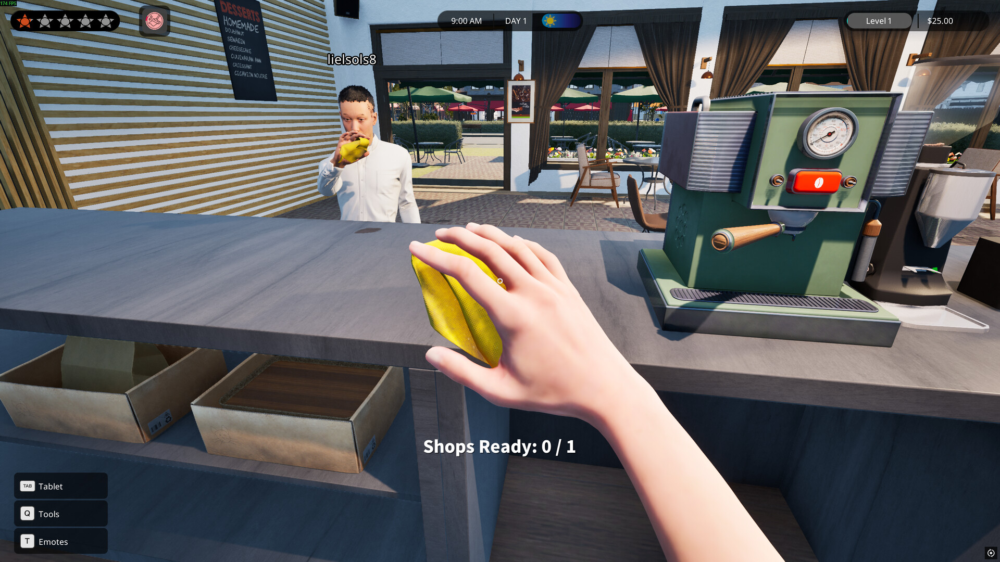
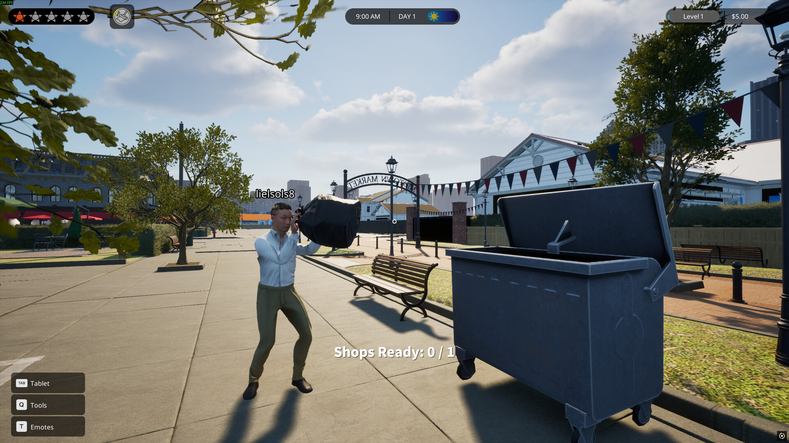
Torishima / INTPさんがリポスト
Google Deepmind 様、継続的にオープンなモデルを公開してくださりありがとうございます！
Dynamic GGUFs を作成しましたので、Gemma 4 12B をより効率的に実行できます：
unsloth/gemma-4-12b-it-GGUF · Hugging Face
アニメキャラを降ろすというのは何もアニメの女の子が二次元として現れることではなく、純粋にアニメの女の子のような人間が救いとして現れることの祈願であり、多くの場合それが偽物であるから問題なのである。キリストが2000年降臨しなくても待ち続けるように生きねばならない。
Torishima / INTPさんがリポスト
私たちの新しい統一アーキテクチャにより、Gemma 4 12B がマルチモーダル入力をネイティブに処理できるようになりました。以下にその方法を説明します
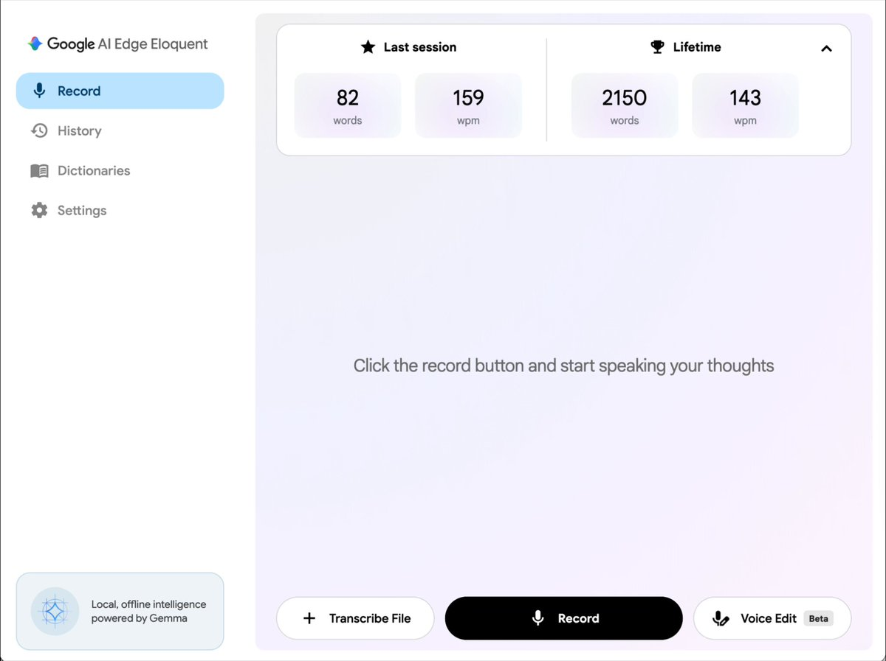
Torishima / INTPさんがリポスト
Gemma 4 12B は、小さなメモリフットプリントと革新的なアーキテクチャにより、優れたパフォーマンスを提供します。
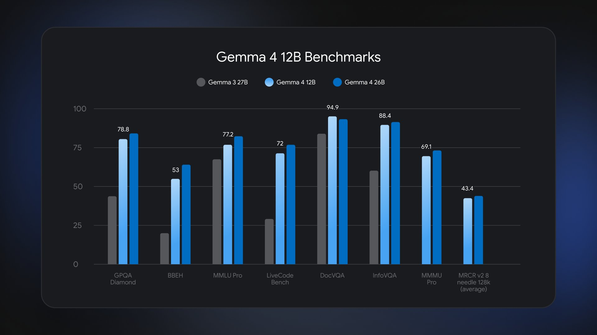
Haruhiko Okumuraさんがリポスト
本日、Gemma 4 12B を発表します — 高度なエージェント的推論、視覚、音声を直接ラップトップに持ち込む最新のオープン モデルです。
これは、より大きな Gemma モデルに匹敵する性能を提供しつつ、はるかに小さな総メモリ使用量を実現し、わずか 16GB の VRAM
女子「コンビニに停めた自転車が盗まれた！監視カメラ見せてください！」 店員「OK」 → ヤバすぎる映像が流れて死ぬｗｗｗｗｗ #雑談・その他の話
女子「コンビニに停めた自転車が盗まれた！監視カメラ見せてください！」 店員「OK」 → ヤバすぎる映像が流れて死ぬｗｗｗｗｗ - オレ的ゲーム速報@刃の記事ページ
jin115.com
渡辺浩弐さんがリポスト
【新作公開しました】
工藤友美が #渡辺浩弐 さんの小説を朗読しちゃうぞ〜！！
プラトニックチェーンより
『向こう岸から』
聴いてください！
YouTube直リンク
小説家・渡辺浩弐さんの物語を工藤友美が朗読します！今回はプラトニックチェーン〔下〕 (星海社文庫)より「向こう岸から」をお届け...
youtube.com
超かぐに脳を灼かれてから4ヶ月弱も経ったのか
働けない高齢者や障碍者は都内だと生活保護費で14万円貰えます。
無職で出産した女性も働けないんだから、産休期間中は生活保護と同額貰えていいんじゃないの？
AVITAMINOSEさんがリポスト
投票用紙が足りない事態になり、市民ら300-400名が集結していた蚕室7洞投票所に警察官10数名が投入されました。市民らは投票箱の搬出を阻止しており警察との物理的な衝突の可能性もあります。心配。
연합뉴스
@yonhaptweet
[速報] 「対峙状況」 잠실7동 投票所に警察数十人投入
https://
yna.co.kr/view/AKR202606
03087200004?input=tw
…
日本人の子どもを増やそうってきちんと言える政党。
神谷宗幣【参政党】
@jinkamiya
私の想定以上に下がりました。
子供を産みたいと思える社会や制度をさらに強く訴えていきます。
25年生まれ過去最少の67万人 出生率最低1.14、上昇13県(共同通信)
#Yahooニュース
https://
news.yahoo.co.jp/articles/e2d1d
947c3c05e03c6b77cd2a041718618d81ce4?source=sns&dv=sp&mid=other&date=20260603&ctg=dom&bt=tw_up
…
大人なのでシロクマくんに追い練乳して食べてる
日産、中国・奇瑞の車両生産を検討 英工場で27年度にも
日産、中国・奇瑞の車両生産を検討 英工場で27年度にも
撮って出しでも結構いい雰囲気で撮れてるな
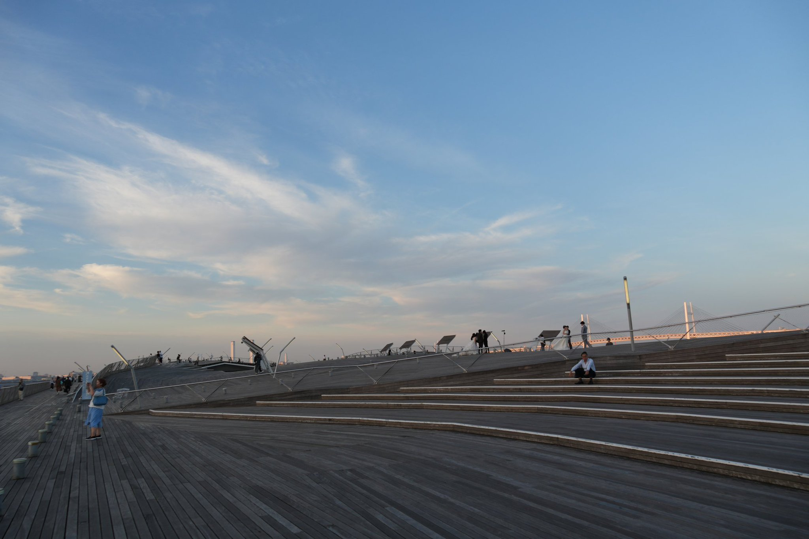
Torishima / INTP
@izutorishima
やっぱ完全な夜景だと手持ちだとブレまくってるのが多いな・・・このへんは結構お気に入り
夕焼けはめっちゃ綺麗に撮れている x.com/izutorishima/s…
輿水畏子さんがリポスト
シェリハン
大概是不会接着画的草稿（

[涂鸦] 仅限登录(2 图像) - cramez49 的 Poipiku
poipiku.com
スマホ版「Pokémon Champions」，配信日を6月17日に決定。ライチュウと，メガシンカ用のアイテムが手に入るキャンペーンが実施決定
https://
4gamer.net/s/G088683.2606
04001
…
メガライチュウ2種類の特性も明らかに
やっぱ完全な夜景だと手持ちだとブレまくってるのが多いな・・・このへんは結構お気に入り
夕焼けはめっちゃ綺麗に撮れている
Torishima / INTP
@izutorishima
夜景がとても綺麗だった
ただ現地で確認したときより暗い仕上がりになってる感じがするんだよなあ、レタッチすればなんとかなるのかもだが
あれホント人間がやる仕事じゃないよねー。あの手のテストをPlaywrightなりで自動化できていないところは、Mythosとか対応しようがないと思うのだけど、みんなどうするのだろうか？
ちょまどITエンジニア
@chomado
私は実際に新卒で入った日系会社でこれをやって3日で鬱、2週間目で発狂して(実際に「適応障害」の診断書が出た)
即退職届を出して転職しました x.com/gyodon_se/stat…
夜景がとても綺麗だった
ただ現地で確認したときより暗い仕上がりになってる感じがするんだよなあ、レタッチすればなんとかなるのかもだが
コスモクロック21に一人で乗って写真をバシャバシャ撮る異常者をやっていました
夜の観覧車は内側から見るライトアップが綺麗なんだよね（と万博後に天保山大観覧車に乗った時に思った）
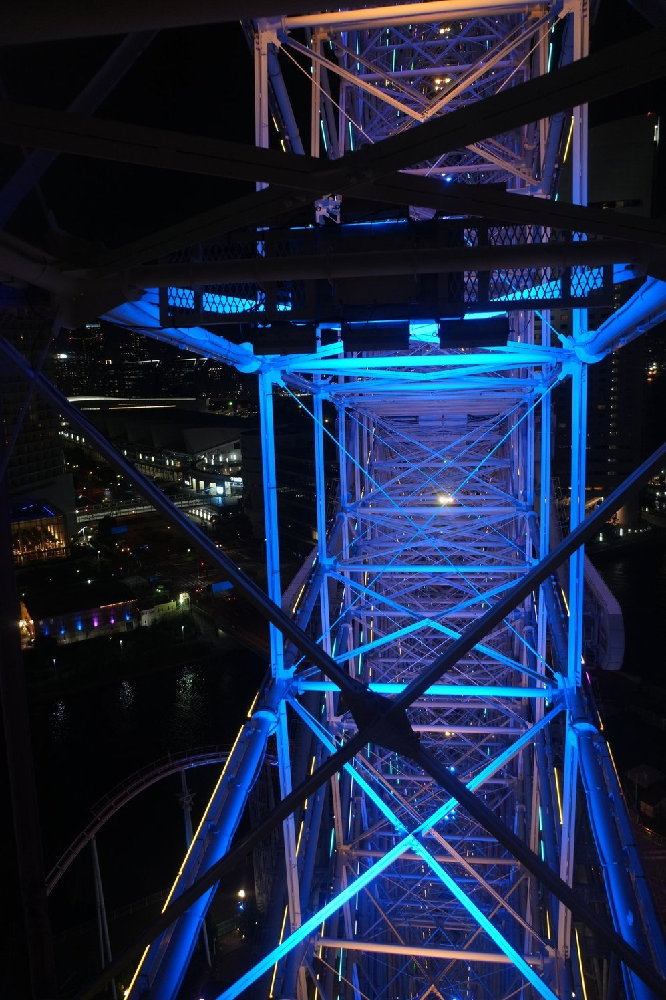
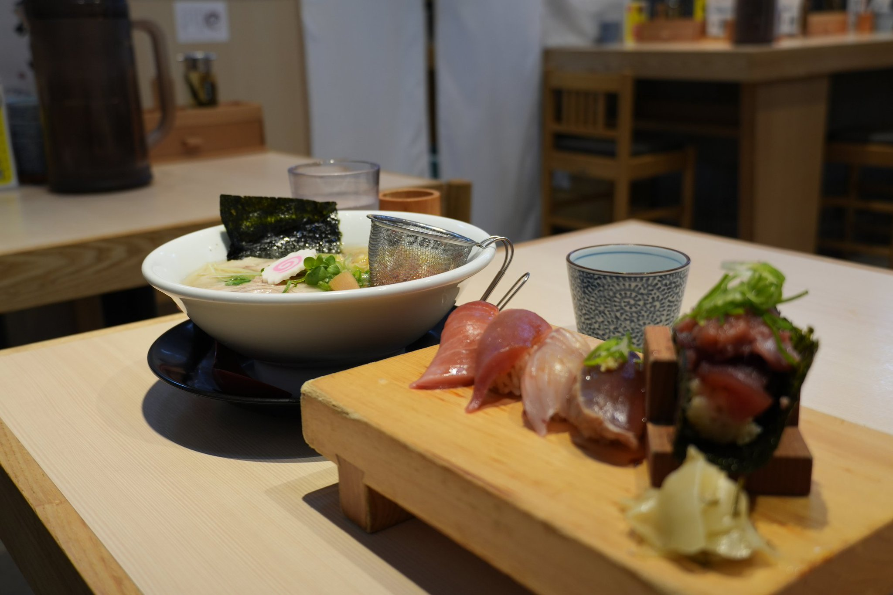
Torishima / INTP
@izutorishima
一眼で撮るとやっぱええなあ・・・ x.com/izutorishima/s…
アニメキャラコスプレを実在聖地に放り込む神降ろしをやるしかないのかもしれない。
上伊那のインスタ運用はその嚆矢のように感じる。一色いろはさん…
最近マイクロソフトやNVidiaがローカルLLMを推し出してきててアツそうと言う話。RTXSparkとかね。
Georgi Gerganov
@ggerganov
今年のComputexでローカルAIの強い兆候。NVIDIAやMicrosoftのような大手企業がローカルAIワークロードを採用し、議論しています。専用コンシューマハードウェアとモデルが到来中です。
広告費を辞退じゃなくて、受け取って寄付したらいいんじゃないかな。
ゆいぴす
@yuipis18
今回のマンジャロに関する件につきまして、誠に申し訳ございませんでした。
不快な思いをされた方、不安な思いをされた方、そして日頃より応援してくださっている皆さまに、心よりお詫び申し上げます。
今回の発信が薬機法上の問題を含むものであったことを、真摯に受け止めております。
Torishima / INTPさんがリポスト
なので、いち参加者として、運営とか場所とか費用とか、そんな参加者にとってクソほどどうでも良いことは気にせず、その場にいて楽しかったと思って帰っていただければもう私は大満足なのです
めんどくさい人がもしいたら出禁にするのでいつでも遠慮なく教えてくださいね！
一眼で撮るとやっぱええなあ・・・
Torishima / INTP
@izutorishima
うおがしや、1.5Kでガチ旨ラーメンとお寿司をいただける『『『福祉』』』がある x.com/izutorishima/s…
Haruhiko Okumuraさんがリポスト
[PDF] 不審な認証画面の表示について
2026年6月3日
象印マホービン株式会社
https://
zojirushi.co.jp/important/info
/20260603.pdf
…
『当サイトの一部ページにおいて、外部サービス（polyfill .io）を経由し、不審な認証画面が表示される事象が発生していた可能性があることを確認いたしました。
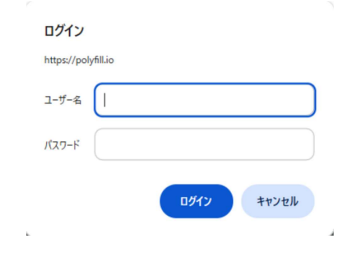
ふと気になって alias ll="ls -l" のような使い方はBerkeleyのcsh時代からあった雰囲気だよな、とChatGPTさんに調査してもらったが、(csh時代なのはあってそうだけど)誰がいつ使い始めたとかは見つけられなかった
シェル
@shell_waywise
恥ずかしながら ll ってコマンドを初めて知った……めちゃ便利やんこれ…
今まで全然 ls -l してた…………
Torishima / INTPさんがリポスト
意図を汲んでくれていて感謝！
たまに運営に入れてください！と言われるけど絶対にイヤw 手伝ってくださる方々には感謝ですが、中の人を除いて全員いち参加者でいてくれと思うw 運営ポジまじいらないw
私は私にとってのオモロい場を作るだけであって、金勘定とか忖度とかクソほど興味ないw #aimeetup
びーぐる / Beagle Works
@beagle_dog_inu
これは別にどこの話というわけでは一切ないんだけど、コミュニティが大きくなると権力闘争を始めたり、私利私欲で私物化する人間が現れるのは万国共通の、人間が人間である以上絶対に避けられない問題かなと。
ギャル2人の出会いどうでも良すぎる…
オタクくんでないと終わりだよ
5月の米民間雇用12.2万人増、市場予想上回る ADP調べ
5月の米民間雇用12.2万人増、市場予想上回る ADP調べ
ギャルだしとりあえずネイルしとけばいいだろうという感じのネイルありがとう。
いや、アニメの女の子はピンクの髪や赤い瞳を持っているんだから、自然に緑や青の爪が生えてくるに決まっているだろう。ネイルってなんだよ。
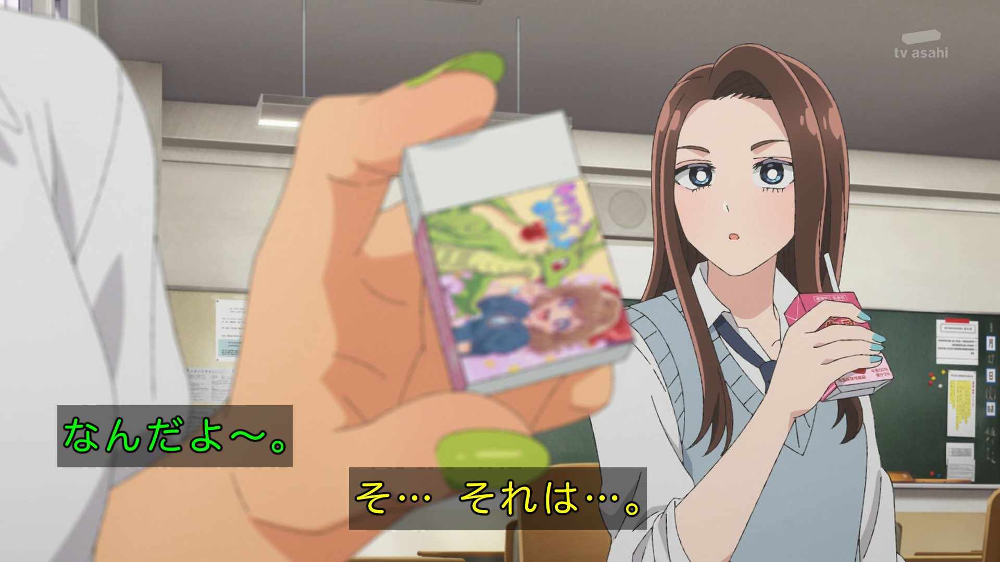
キラモンのオタクだから略してキモオタだし、主人公は瀬尾卓也(せおたくや)だからオタクくんなんだよね。
メタ要素も匂わせるローグライクACT『Dungeon Lurker』発表―呪われたダンジョンに挑むレトロ風ゲーム
https://
gamespark.jp/article/2026/0
6/04/167357.html?utm_source=twitter&utm_medium=social&utm_content=tweet
…
レトロな公式サイトも公開中―ただの"ゲーム”ではなさそうなローグライクACT

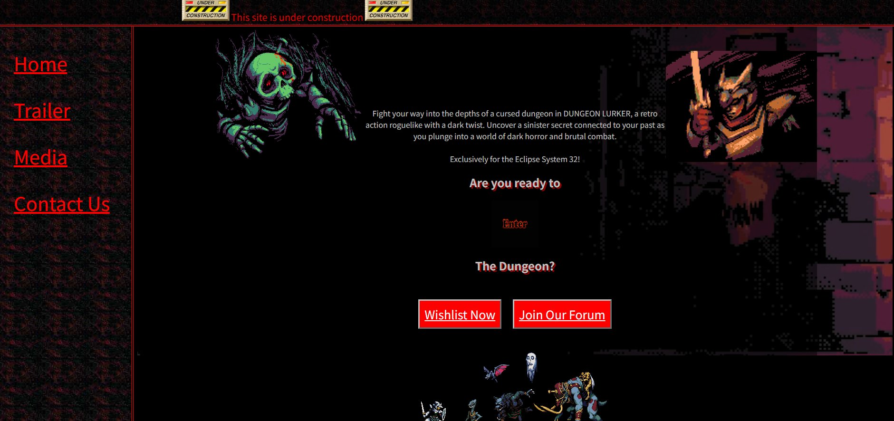
Wordle 1,811 5/6
クラにかって大学編まであんの？
なるせひろのりさんがリポスト
7月23日発売の週刊少年チャンピオン３４号より
「バドこん！」というコメディー漫画を連載させて頂きます。
よろしくお願いします！
渡辺浩弐さんがリポスト
6月4日は虫の日だよ
渡辺浩弐
@kozysan
6月4日、虫の日ですね!
https://
sai-zen-sen.jp/works/fictions
/gamekids2013/30/01.html
…
ロマンス要素もある熱帯の島の環境回復目指す生活SLG『Tideborne Haven』Kickstarter開始！100ポンドの支援で“飼っているペットをゲームに登場させる”ことも可能
https://
gamespark.jp/article/2026/0
6/04/167356.html?utm_source=twitter&utm_medium=social&utm_content=tweet
…
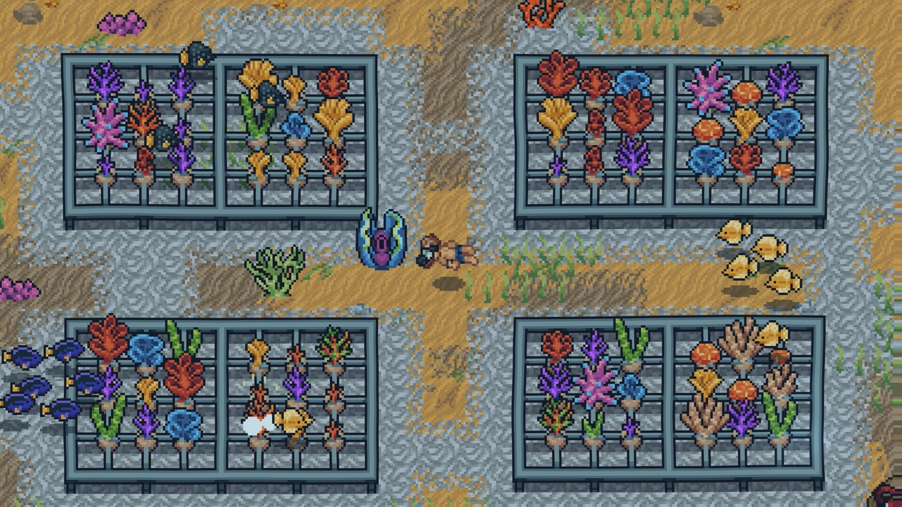
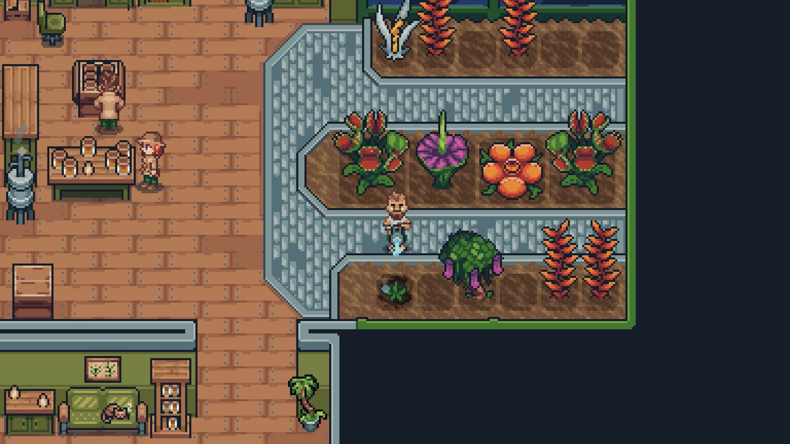
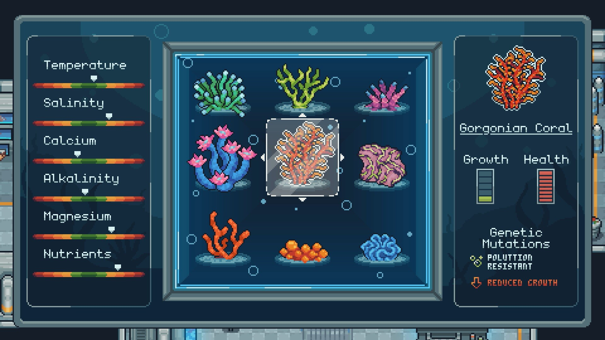
渡辺浩弐さんがリポスト
ムシの日
渡辺浩弐
@kozysan
『日々是コージ中』更新。6月4日、ムシの日です。虫についてのこわい話があります。今食べていたショートケーキ、実は……↓
【日刊SPA!】第513回
https://
nikkan-spa.jp/hibi/1471215 @weekly_SPA さんから
線がめちゃくちゃ綺麗
絵茶！？！？うますぎる……
AVITAMINOSEさんがリポスト
[6・3 地方選] 「不正選挙」デモ隊、光化門を通過し、過天選管委へ向かう
[6·3 지선] '부정선거' 시위대, 광화문 찍고 과천 선관위로 향해 | 연합뉴스
警察「そこの車止まって！運転中に右手でスマホ操作してたよね？」 女性「私、右手ないんですけど」 → 衝撃の展開に・・・ #酷い話・事件
警察「そこの車止まって！運転中に右手でスマホ操作してたよね？」 女性「私、右手ないんですけど」 → 衝撃の展開に・・・ - オレ的ゲーム速報@刃の記事ページ
jin115.com
ニューラルネットワークの話題に火がつき始めだった頃、研究室に学生のリクルートでOB訪問した時、先生に「最近ニューラルネットワークが〜」みたいな話をしたら「関宮くん大丈夫？それ僕らが学生だった時の話じゃない？会社でなんかあった」って言われて「せ、先生僕はまだおかしくなってないんですよ
可愛い～～！！
これすきすぎ
これ作ろう
いるか@心が酒びたっているんださんがリポスト
迷子集会のコメント欄で知ったんだけどmygoの劇場バージョンがレンタルだったのがプライムで観れるようになってる。楽奈のオリジンに触れ…なきさけべ！
BanG Dream! It's MyGO!!!!! 前編 : 春の陽だまり、迷い猫
BanG Dream! It's MyGO!!!!! 前編 : 春の陽だまり、迷い猫
輿水畏子さんがリポスト
# いいねした人のメディア欄覗いて素敵絵を私の絵柄で描いてもいいですか
許可ありがとうございました！
まつうら
@Matur4aa
宝生マーゴさん、メガネ似合いすぎる問題について。
NYダウ一時400ドル安で推移 イラン攻撃の応酬に不安、原油95ドル台
NYダウ一時400ドル安で推移 イラン攻撃の応酬に不安、原油95ドル台
オタクに優しいギャル
インドネシア、8000万人給食の担当前長官が逮捕 大型汚職関与か
インドネシア、8000万人給食の担当前長官が逮捕 大型汚職関与か
ドルフロ2のイベント締め切りを勘違いしていた無念
アニメ『どこツら(仮)』
6月7日(日)より配信開始です‼︎
ぜひ見てくださいね‼︎
お楽しみに
#どこツら
どこにでもいるアイツら
@doko_tsura
6月7日(日)6月7日(日)
アニメ開始
ここで⤵︎登録してお待ちください
https://
youtube.com/channel/UCzmRL
VcreWojGWrLMur9oSg?si=zuUnv0lr-1fktWyd
…
Nape ProのBluetooth操作を整理しました
・ペアリングモード↓
丸いボタン + 01 or 02 or 03 を長押し
※最大3台のデバイスとペアリングできます
・接続先の切り替え↓
丸いボタン + 01 or 02 or 03 を短く押す

湘南ペンギンさんがリポスト
グーグル、不妊蚊6400万匹の放出申請 米南部2州で感染症対策を実験
グーグル、不妊蚊6400万匹の放出申請 米南部2州で感染症対策を実験
愛だ……
「『スターフォックス』リメイクにプレイ意欲示す初心者に旧作プレイを強要するべからず」あるゲーマーの提言きっかけに交わされるグラフィックについての激論
https://
gamespark.jp/article/2026/0
6/03/167355.html?utm_source=twitter&utm_medium=social&utm_content=tweet
…
誰かの「楽しみに思う気持ち」を損なうことの無いよう、思いやりを持った意思表示を心掛けたいものです。
辞書周りは AivisSpeech / Aivis Cloud API で一番実装に苦労した点なので活用いただけてると嬉しいですね
shinshin86｜AITuber OnAir開発者｜AIキャラのミコをバズらせたい人
@shinshin86
音声合成エンジン(TTS)の辞書登録をAIに任せるのオススメです
AivisSpeechなどはAPIで辞書登録ができるので、Claude CodeやCodexに任せられる
ポイントは漏れている箇所がないかをその場で読み上げさせてチェックまでさせること
APIで辞書登録
ローカルのwhisper CLIなどで読み上げ検証
いろいろ準備していたらどれもこれも中途半端になっていて本当に本当に・・・
GPT-5.5 のおかげで「やればできる」と分かり諦めとか折り合いをつけづらくなってしまったせい
Torishima / INTPさんがリポスト
いまのところ真面目に聞くほど興味があるわけでは無い雑談配信を聞いたり聞かなかったりで調整しているのが個人的なフィット
Torishima / INTP
@izutorishima
過集中とエージェントに任せている間の待機時間の相性が微妙に悪くて最近虫のいどころが悪い・・・どうするのがいいんだ
明日は今年大一番の仕事になるので
自分で自分を鼓舞させて頂きますわ！！
リゼロ、焦らし回という感じなのであまりコメントなし。
洗車の回数が激減。2000円アンダーのふわふわブラシでホコリやチリを撃退
洗車の回数が激減。2000円アンダーのふわふわブラシでホコリやチリを撃退 | ギズモード・ジャパン
軍手さんがリポスト
精子提供の有識者による迫真ツイート
提供情報への信頼感が半端ではない
笹松しいたけ
@s_sasamatsu
このへんの問題を認識している不妊治療のクリニックは精液を本人に持参させて本人確認するか、妻が持参して同席できない場合は離れてる夫にスマホでeKYCとか要求するんだよね…… x.com/rokka_no_yell/…
反AIさん来ちゃったよ
MS(PC)-DOS 1.0はCP/M互換のため、ディスクはディレクトリが無いからフロッピーのルートにだけ置けるし、ファイルサイズバイト数ではなくセクタ(128バイトだっけ?)数単位だから、テキストファイルは128バイトの区切りまではダミーのEOF文字を埋めるルールだったっけ。
『テイルズ オブ エターニア』商標が新たに出願―過去にはリマスターらしきレーティング審査通過も
https://
gamespark.jp/article/2026/0
6/03/167354.html?utm_source=twitter&utm_medium=social&utm_content=tweet
…
メモリー株ETFが活況 価格は上場2カ月で2倍、半導体の人気映す
https://
nikkei.com/article/DGXZQO
UB035D80T00C26A6000000/?n_cid=SNSTW005&n_tw=1780494145
…
韓国の株式市場でサムスン電子とSKハイニックスの値動きを2倍にするよう設計されたETFが上場。個別銘柄を対象にしたレバレッジ型のETFは同国で初です。
メモリー株ETFが活況 価格は上場2カ月で2倍、半導体の人気映す
とうとうシスコ単独で1000万超えた
あんまり株価には期待してなくて配当きっちり出し続けてくれればいいくらいで持ってたから嬉しい誤算
妹「結婚することになった」 妹大好きな兄「おめでとう！決め手は何やったん？」 → 理由がヤバすぎて兄がぶっ倒れるｗｗｗｗｗ #恋愛ネタ
妹「結婚することになった」 妹大好きな兄「おめでとう！決め手は何やったん？」 → 理由がヤバすぎて兄がぶっ倒れるｗｗｗｗｗ - オレ的ゲーム速報@刃の記事ページ
jin115.com
中道・枝野幸男氏が政治団体「立憲ネットワーク」
https://
nikkei.com/article/DGXZQO
UA03C6E0T00C26A6000000/?n_cid=SNSTW005&n_tw=1780492591
…
代表には枝野氏が就き、埼玉県議とさいたま市議計6人が所属します。
中道・枝野幸男氏が政治団体 統一地方選へ「立憲ネットワーク」
フィギュアのルール大幅改革案、国際連盟が見送り 日本などの反発で
https://
nikkei.com/article/DGXZQO
DH0391R0T00C26A6000000/?n_cid=SNSTW005&n_tw=1780494551
…
ISUの改革案では、技術を競う「テクニカルプログラム」と表現を評価する「アーティスティックプログラム」の2種目を実施する方式を検討していました。
フィギュアスケート:フィギュアのルール大幅改革案、国際連盟が見送り 日本などの反発で
AVITAMINOSEさんがリポスト
斎藤知事が県民局長を死にいたらしめた客観的証拠が出てこない限り、菅野完氏の記者会見中の不規則発言は政治的批判の域を超え、公然と侮辱されたことにほかならないと言えるでしょう。
輿水畏子さんがリポスト
いつものことですから
#まのさばネタバレ
ホンダ、執行役15人の報酬3割減 EV損失で責任
ホンダ、執行役15人の報酬3割減 EV損失で責任
なるせひろのりさんがリポスト
『スーパーの裏でヤニ吸う2人』とかいう2026夏アニメのくせに配信開始した大フライング夏アニメ、1話だけ先行なのかなとAbema覗いたら漏れはプレミアム会員だから全話観れるらしくて爆笑横転大車輪。2026春アニメ達すら最終回迎えてないのに、2026夏アニメの最終回をもう迎えられるって何のご冗談？？
コメ価格の暴落 止まらない 去年稼ぎまくった米卸が抱える在庫の量が過去最大に
コメ価格の暴落 止まらない 去年稼ぎまくった米卸が抱える在庫の量が過去最大に : ハムスター速報
シリーズ最新作『鬼武者 Way of the Sword』Steam向け体験版で困った症状が発生している場合の解決方法公開
https://
gamespark.jp/article/2026/0
6/03/167353.html?utm_source=twitter&utm_medium=social&utm_content=tweet
…
過集中とエージェントに任せている間の待機時間の相性が微妙に悪くて最近虫のいどころが悪い・・・どうするのがいいんだ
幸いこんな堕落した生活でも「金はあるんや・・・」の状態にさせていただいているので色々自由に探索しているのだが、自分のやれるポテンシャルに対して、色々探索しすぎて全部が中途半端になる最悪な状態が数ヶ月続いていてだな・・・そして途中でやる気が尽きる
世界経済の成長率、26年2.1％に急減速の可能性 OECDが警鐘
世界経済の成長率、26年2.1%に急減速の可能性 OECDが警鐘
一人部屋はバスの運転手さんとか用に有ったりするけれど・・
当日の午後3時から5時くらいの間に温泉の観光組合の窓口か、狙ったホテルに直接問い合わせする
お安くスイートルームが提供される・・・事もある
（ボッチ感は半端ない）
高市首相、13日から欧州歴訪へ G7サミットにあわせ英伊仏訪問
高市首相、13日から欧州歴訪へ G7サミットにあわせ英伊仏訪問
ファミマ、レジ袋のバイオプラ比率50％に引き上げ 原材料高に対応
ファミリーマート、レジ袋のバイオマスプラスチック比率50％に引き上げ
働きがい改善のU-ZERO、AIでメンタルケアの新機能 9.5億円調達
働きがい改善のU-ZERO、AIでメンタルケアの新機能 9.5億円調達
警察庁に非常勤サイバー人材、三井物産系の執行役員起用 情報分析担当
警察庁に非常勤サイバー人材、三井物産系の執行役員起用 情報分析担当
横浜観光は「今みなとみらいにいるなら汽車道→赤レンガ→大さん橋が王道じゃないすかね」と Claude 君が言うのでそうしたら時間的にもちょうどいい感じに
スマンホホで撮った写真だけど、06/01 は台風直前なのに快晴で空気も澄んでて最高のロケーションだったな・・・
Torishima / INTP
@izutorishima
今日は思い付きでなぜかみなとみらい観光をしているが、大さん橋なんて地味に初めてきたけどエモすぎる
佐々木俊尚＠新著「フラット登山 日本を歩く旅60」7月8日刊行！さんがリポスト
「５人の知性が古今の名著を武器に極論と分断にひた走る制御不能な現代社会を読み解く！
混迷の世界をみつめる“知の座標軸”を示す「論壇」に未来はあるのか――…」
⇒岩間陽子,開沼博,佐々木俊尚,東畑開人,與那覇潤
『常夜の読書会』
潮出版社
５人の知性が古今の名著を武器に 極論と分断にひた走る制御不能な現代社会を読み解く！ 混迷の世界をみつめる“知の座標軸”を示す 「論壇」に未来はあるのか―― いま世界を知る本当の「教養」がここに… - 引用：版元ドットコム
hanmoto.com
強度は鉄の15倍。手のひらサイズのミニポーチで小物がまとまる
強度は鉄の15倍。手のひらサイズのミニポーチで小物がまとまる | ギズモード・ジャパン
車のトランクに設置すればスペース拡張。涼しさも虫除けも同時に叶う車専用メッシュテント #BuyPR
車のトランクに設置すればスペース拡張。涼しさも虫除けも同時に叶う車専用メッシュテント | ギズモード・ジャパン
ストライキ寸前だったSamsung、和解へ。決定打は5000万円の特大ボーナス
ウルトラC、出ました。米経済誌ブルームバーグによると、Samsung（サムスン）の半導体製造部門ではストライキ目前と報じられていましたが、一転して合意が承認されたようです。世界的な混乱が回避された2週間前、同部門での交渉が決裂。ストライキの
gizmodo.jp
日本-フィリピンの海洋境界協議の件、こんな海域の話なのか。そりゃ、北京も台湾もちょっと待てよ、となるわな(日比両方ともそれはわかってやってるんだろうけど)
https://
newsweekjapan.jp/articles/-/324
316?display=b
…
輿水畏子さんがリポスト
マスター！ライブ中いつも真剣な顔なのにエマを見つけると笑顔になるヒロちゃんひとつ！
Irodori-TTS の実験評価が終わらねえ・・・
DeepSeek、1.2兆円調達へ テンセントやCATLが出資と米報道
DeepSeek、1.2兆円調達へ テンセントやCATLが出資と米報道
Haruhiko Okumuraさんがリポスト
今日、これとまったく同じ目に会いました
『風林火山のむすめ』5/20発売！！ 木下昌輝
@musketeers10
注意喚起です。乗っ取られかな？
画像のような詐欺DMが来ました。discordでX担当者に連絡しろとのことです。
おもろいので付き合ってやってますが、一瞬、相手が被害者だと信じた俺が馬鹿でした笑 x.com/musketeers10/s…
Haruhiko Okumuraさんがリポスト
AIが賢くてX本体ではなくfxtwitterという非公式ツールのURLにリクエストしてますね
（URLがapi.fxtwitter\.comになってる)
fxtwitterはXのプライベートAPIとかを叩いて取ったデータを整えて返してくれるようなやつ
Oikon
@oikon48
Xの記事って取得できたのって前からだっけ？
以前Grokでもダメだったよね？
渡辺浩弐さんがリポスト
バンゲリングベイ同様、別ゲームジャンルに見えて、実はRTSの類いですよね
【話題】女性インフルエンサーさん、結婚発表ポストに「ビーチにおしゃれに設置した妊娠検査薬」の映え映え写真を添付
↓
X民達から「ションベンかけた棒を大層に飾ってんじゃねえよ」と心ない反応が相次ぐ
森香穂.
@mori_kaho0601
ご報告です
朝日新聞の記者は、政府のSNSアカウントに論評や反論されたくらいで委縮してしまうレベルの腰抜けなの？そんなんだったら報道やめたら？としか。政府から直の情報発信を嫌がるのは、オールドメディアの保身としか思えないですよ。
『ポケモンチャンピオンズ』スマホ版が6月17日配信！新たに「メガライチュウX・Y」の特性も判明
https://
gamespark.jp/article/2026/0
6/03/167352.html?utm_source=twitter&utm_medium=social&utm_content=tweet
…
「マンジャロ打ちな？」で炎上のキャバ嬢さん、謝罪＆番組降板を発表
・各種リスクには配慮したつもりで発信してたけど薬機法上の問題があったよ
・今後は各番組への出演を辞めるよ
・マンジャロアンバサダーも辞めるよ
→マンジャロ効果で仕事量もすっきりダイエット成功へ
ゆいぴす
@yuipis18
今回のマンジャロに関する件につきまして、誠に申し訳ございませんでした。
不快な思いをされた方、不安な思いをされた方、そして日頃より応援してくださっている皆さまに、心よりお詫び申し上げます。
今回の発信が薬機法上の問題を含むものであったことを、真摯に受け止めております。
グッスマ、メカマスだけじゃなくてついにロボアニメまで作り始めたのか…
Torishima / INTPさんがリポスト
2.12.0+cu130 では直ってるぽいな
CMDはともかくPowerShellがLinuxコマンドとコンフリクトしてるのは、類似機能のコマンドレットをaliasしているからなので、aliasをやめればいいのでは。オプションは対応してないんでls -lって打って、このざまですよ。
【合体神シリーズ】プロジェクトティザーPV
https://
youtu.be/QX13w3xFaWU?si
=GOV8pUCRYxkyJLFT
…
@YouTube
より 玩具売るぜー！！っていう意気込みが強い！！（・∀・）
『合体神シリーズ』“今こそ合体ロボットに熱い息吹を！”胸を熱くする合体ロボットの文化を未来に繋げるため、ホビーレーベル『メカスマ』...
youtube.com
トウカイのクマさんがリポスト
数日前の自分のSNSの呟きを見返して、「何言ってんだコイツ......?」と思うこと、しばしばある。
#小澤あるある
AVITAMINOSEさんがリポスト
民主党は、一部の投票所の用紙不足事態に対し「強い遺憾」を表明し、「不十分な選挙管理に必ず責任を追及する」と述べました。#KBS #KBS뉴스
[속보] 민주당 “개표중단·재투표는 없다…선관위엔 반드시 책임 물을것”
…一体どういう役なんでしょう?w
舞台、観に行きます!
Torishima / INTPさんがリポスト
音声合成エンジン(TTS)の辞書登録をAIに任せるのオススメです
AivisSpeechなどはAPIで辞書登録ができるので、Claude CodeやCodexに任せられる
ポイントは漏れている箇所がないかをその場で読み上げさせてチェックまでさせること
APIで辞書登録
ローカルのwhisper CLIなどで読み上げ検証
ふぇむ(せかんど！)さんがリポスト
「自販機」アニメ、前作の主人公「畑」が自販機のピンチに駆け付けるアツい展開なのだけど、アバンから畑が喋り続けており、混乱がエグい。
「ダイヤテックの商取引債権者は判明する限り10名に満たない…従業員や商取引債権者へ被害を最小限に食い止めようと奔走した最期がみえてくる…最後の処理を丁寧にすることは、債権者に対する言葉にならない「謝罪」にも見える」
ある意味、奇麗な最期ではあった、と。
キーボード「FILCO」のダイヤテック、忸怩たる破産 ～ 為替デリバティブと需要減、綱渡りの資金繰り ～ | TSRデータインサイト | 東京商工リサーチ
楽画喜堂に6月4日配信開始の電子書籍リストを追記しました。＞
https://
rakugakidou.net/#20260604kindl
es
…
九州最北西端の陸軍15cm砲台×2と観測所の間に設置された機銃座らしき全長3mの八角形構造
しかし、付近には左・右射界石があるので対空用ではなく水平砲。内部には穴が開いて洞窟状になっている。そして、もう1個ある同様の構造はなぜか七角形状。謎だらけで悔しいがなんもわからん。
かずぴー初商業誌『艦砲と戦車の島』発売
@kazupi
←左射界 右射界→
すばらしい保存度！
Twitter ってこういうツイート伸びがちだよね、アルゴリズムくんの悪意を感じる
Torishima / INTP
@izutorishima
ちくちく言葉すぎて涙が止まりません これが「自閉」なのか… x.com/selfcomestomin…
AI実写人間の嘘臭さとアニメキャラのコスプレっていい塩梅になるから好きなんですよ。日本のコスプレよりも中国のコスプレに近くて、三次元に二次元を降ろすのではなく三次元を二次元に昇華している感じが良い。
「AIが従量課金で高くなりすぎて使いもんにならん！」みたいな風潮だけど、と言うより今までタガが外れっぱなしだっただけかも。Clineが出てくるまではAIコーディング料金はチャット以外は普通にAPI従量課金しかなかったけどClineからGitHubCopilotのサブスク枠でClaude叩くテクが流行ってから段々Clau
Amazon：エースコンバット8 ウイングス・オブ・シーヴ コレクターズ ボックス -PS5 【
http://
Amazon.co.jp限定】 予約受付開始！
https://
amzn.to/4dNXBVs
とりしま (Sub I/O)さんがリポスト
正直なところ、LLМの日本語文章が、これほどまでに上手くならないのは計算違いだった。もうちょっと上手くなれよと思うのだが。。。
現状のLLМの日本語文章は、AI生成のイラストレベル（わからない人には凄く見えるけど、わかる人には。。。みたいな）。
学習的にも、現状以上は難しいのかな。
Linuxというかbashのコマンドはいろいろ省略しすぎなのは大昔から言われてることだけど、だからといって、Copy-Item、Get-ChildItem、Remove-Item、Get-Contentの方が良いかと言われると(オプションも長いし)
☆┈┈┈┈┈┈┈┈┈┈☆
『Unhappy Light』
Official Music Video
☆┈┈┈┈┈┈┈┈┈┈☆
→
https://
youtu.be/QYgxhkq7Xos
▽Movie
監督/演出/コンテ：reinou
キャラクターデザイン/作画監督/原画：熊猫よる
動画/屋外背景/仕上：つるた
仕上：葵山わさび、神多 洋
最近やった【とつラバ】で好きなシーンがあって
ヒロインの夜乃桜さんが「私はAIです」と言うナビに対して
「それの何が悪いの?」
「人間じゃないから何?」
「そもそも人間じゃないから友達になってはならない理由なんてどこにもない」
って言うシーンがあって
好きなシーンの一つです
kobaya
@ts_kobaya
最近の若者は対話型AIを友だちのように慕っているし
「チャッピー(ChatGPT)が友達」
「相談事は親よりもチャッピー」
「AIにだけ本音を話す」
って人が増えていて
現代の心の拠り所になってるというか
自分にとって心地よく、信頼できる相手がみんなに居るって考えると、凄い時代になったなぁと
酒飲みのエレン (@ 焼きとん サカマル酒房 in 京都市, 京都府)
https://
app.foursquare.com/share/checkin/
6a2027483d641c16f9155c9b?s=M2fQ6vPTVX408ElurBRRpFo98Js&lang=en
…
最近の若者は対話型AIを友だちのように慕っているし
「チャッピー(ChatGPT)が友達」
「相談事は親よりもチャッピー」
「AIにだけ本音を話す」
って人が増えていて
現代の心の拠り所になってるというか
自分にとって心地よく、信頼できる相手がみんなに居るって考えると、凄い時代になったなぁと
Brunner-Munzel検定をPythonでやる例を載せてなかったので書いた:
https://
okumuralab.org/~okumura/pytho
n/brunner-munzel.html
…
ついでにMann-WhitneyのU検定も改定した
https://
okumuralab.org/~okumura/pytho
n/u_test.html
…
まぁ、あと１月待ちましょう
umi-umi
@umiumi53845282
綺麗な伏線回収
https://
x.com/i/status/20613
78049015513250
…
選挙ドットコム、ついに英国地方選挙を分析する番組やってる。いいぞ、もっと海外選挙についても取り上げて欲しい。とりあえず、今週末のペルー大統領選と、決戦投票になったコロンビア大統領選挙、丁度今やってる韓国地方選挙とか。
【英国二大政党制の崩壊か？】撮影日時 5/29 11時頃今回はイギリス政治の専門家・早稲田大学教授の高安健将先生にイギリスの地方...
youtube.com
自販機アニメ、最新話ボタン押したら知らないキャラが知らない話始めたと思ったけど前に出てきたな、畑。
iPhoneとかもいよいよもって15～17で何が違うのか分からなくなってきてる
テスラさんがリポスト
いや、素直にプライヤー使えよと

Vidiyo Contexts
@Vidiyocontexts
ワークショップのためのユニバーサルレンチ
気のせいかなと思って見てたけど、やっぱり女神様って意図的にストレートネック気味に描かれてるよね。話数跨いで随所で姿勢が悪い。優雅そうに見えて優雅じゃない萌ポイント
ふぇむ(せかんど！)
@000Amaurot
勇者の肋骨9話、話自体は少し低調だった印象を受けたけど、今まではあんまりなかった構図が多かった印象を受けた。今まで必要なシーンだけ女神様と主人公の2人を同時に写してたけど、今回はフラットに2人を画面に入れてる時間が多く、最高神や迷惑している神に加えて視聴者も覗き見に参加してる感じ。
なるせひろのりさんがリポスト
あの「セーラー服騎士」のシリーズ最新作『舞って！セーラー服騎士 星舞う学園』が発売
作者本人がインディーズ的に出している完全新作で、今回はKindleで販売されています
https://
amazon.co.jp/dp/B0H3KDDXFD/
（以前の『桜舞う学園』はBOOTHの電子書籍でした）
新作のセーラー残悔積歩拳みたいなやつ好きです
中国、天安門事件の墓参りすら当局の意向で禁止されてしまう #韓国・中国

中国、天安門事件の墓参りすら当局の意向で禁止されてしまう - オレ的ゲーム速報@刃の記事ページ
jin115.com
2025年の合計特殊出生率が 1.14 だというのは、今日出た
https://
mhlw.go.jp/toukei/saikin/
hw/jinkou/geppo/nengai25/index.html
… に載っている（特に「結果の概要」参照）。
出生性比と合計特殊出生率のプロットも更新した
https://
okumuralab.org/~okumura/pytho
n/sexratio.html
…
輿水畏子さんがリポスト
アンアンらくがき
「合併しない宣言」福島県矢祭町の25年
https://
nikkei.com/article/DGXZQO
CD294IT0Z20C26A5000000/?n_cid=SNSTW005&n_tw=1780457878
…
国が「平成の大合併」を強力に推し進めるなか、反旗を翻すかのように「自立」を鮮明にしました。矢祭町は2001年以降、役場組織の統合や職員の削減など徹底的なスリム化を進めました。
「合併しない」福島・矢祭町の四半世紀 読書の町を推進
それで手打ちにしようや…
2025年過ぎて減税なんて馬鹿げてる
減税は赤字国債の新規発行をゼロにしてから
日本経済新聞 電子版（日経電子版）
@nikkei
食品消費税「27年4月に1%」調整 首相が判断へ
https://
nikkei.com/article/DGXZQO
UA021110S6A600C2000000/?n_cid=SNSTW005&n_tw=1780399620
…
税率をゼロとした場合、レジ改修に「最大10カ月〜1年程度」を要するという指摘も。経産省の聞き取りに小売業界の団体などは「税率1%なら大半が半年で対応可能だ」と回答していました。
『Raft』＋『Satisfactory』な協力プレイ対応コロニー建設ADVが正式リリース。無限に自動生成される宇宙を冒険し巨大工場構築―採れたて！本日のSteam注目ゲーム
https://
gamespark.jp/article/2026/0
6/03/167351.html?utm_source=twitter&utm_medium=social&utm_content=tweet
…
完全破壊可能なボクセルで構成された惑星で自由に採掘でき、宇宙飛行士を募集し生産設備を拡張していきます。
深津 貴之 / THE GUILD, noteさんがリポスト
"完成させることが大事だと多くの人がいっていたので、クオリティにはこだわらず、描き終えることだけを目指しました"
絵を描きはじめたきっかけから、試行錯誤の練習法、驚きの変化までをつづった成長記録です。
イラスト初心者が1000時間、絵を描いてみた｜チブリエブタ
イラスト初心者が1000時間、絵を描いてみた｜チブリエブタ
輿水畏子さんがリポスト
─ ─ ─ ─ ─ ─ ─ ─ ─
ポケモンバトルをすべての人へ
『Pokémon Champions』
スマートフォン版
6月17日（水） から順次配信
─ ─ ─ ─ ─ ─ ─ ─ ─
#ポケモンチャンピオンズ #ポケチャン
どこまで鳥塚氏が話を通してるのかわからないけど、こういう形での「値上げ」については、国交省も容認な感じなんですかねぇ。他の方も指摘されていた、当日社内での旅行商品の販売方法は気になるところではありますが。
ハーメルンで「分身スキルの最強戦術って自爆特攻じゃね?」
https://
syosetu.org/novel/411578/ を最新話まで読んだ。
設定が面白いだけじゃなくて、キャラクタも魅力的。久しぶりにいい作品に出合えた。
分身スキルの最強戦術って自爆特攻じゃね？ - ハーメルン
【AIが「AI」を名乗らなくなった時代】 AIの歴史 — チューリングからAGIまで、AI時代のメタ認知を身につける -Udemyコースを一部無料公開- #udemys
ヒトの手で「知能」を作ろうとする70年の営みをたどりながら、自分の思考を俯瞰的に捉える「メタ認知」を身につけます。https://w...
youtube.com
大鉄井川線の「観光列車」化の件、7月から開始で会社から発表があったのね。快速化も正式発表、と。基本的にツアー客向けの集金対応なんだろうし、あまり強く反対する気もしないけど、本線の全線再開時にはもうちょっと個人客に優しい施策を出して欲しいなぁ、とは思う。
https://
daitetsu.jp/archives/312728
そもそも制服はフォーマルだよね。
エピちゃん
@epichan77
そもそも結婚式に制服って正装じゃないの？？
どうして「時間」という横軸を考えられないの
時間=金なのに
現在の5000万円と、35年間かけて支払う8500万円の価値は全く異なるの
更に金利上がってインフレ進んで給料も上がれば8500万円なんて今の5000万円以下の価値かもよ
今の100万円が昔より価値が低いのと同じ
もも
@momo_ollife
新築マイホームの夢終わったね。
住宅ローン5000万を35年で借りたら、利息だけで3500万…。繰り上げ返済できないと人生詰むよね。
由羽@レモンアイコンの人さんがリポスト
「あげつち商店街×ラブライブ！サンシャイン!! ヨハネ誕生祭2026」
今年も、あげつち名誉町民の
ヨハネちゃんのお誕生日
7/13(月)に皆さんと一緒に
お祝いしましょう
エントリー受付は
6/5（金）12:00スタート！
皆さまのご参加をお待ちしております
#あげつちヨハ誕2026
#lovelive
ラブライブ！シリーズ公式
@LoveLive_staff
沼津
『ラブライブ！サンシャイン!!』あげつち商店街・ヨハネ誕生祭2026のお知らせです。
詳細はこちら！
https://
lovelive-anime.jp/news/01_6235.h
tml
…
#Aqours
無人の草刈りロボット、江戸川河川敷で試験走行 国交省が本格活用へ
無人の草刈りロボット、江戸川河川敷で試験走行 国交省が本格活用へ
ガソリン補助金の指標、ドバイ原油に再変更 店頭価格は169.5円
ガソリン補助金の指標、ドバイ原油に再変更 店頭価格は169.5円
超長期債で10年ぶり「逆イールド」 40年債、生保の買い観測
超長期債で10年ぶり「逆イールド」 40年債、生保の買い観測
AIが出てきたらそれ以前のスタートアップが吹っ飛んだって話、今思うとAI以前はイマイチ人類にやる事無くなっててあんまおもんないトレンドを捏造して無理やり盛り上げてたような気もする。（経済は停滞すると死ぬから）ハードウェアは時間差で発売されるから一応出すけどどっちらけて終わるみたいな
AVITAMINOSEさんがリポスト
太陽のX線強度のグラフは、大きめのフレアが次々に発生して、一気ににぎやかになっています。
http://
swnews.jp/rt/goes.php
「Google AI ProユーザーはYouTube Premium Liteが付与される」というから
じゃあYoutubeプレミアム要らんやん!
と解約したんだけど
一部の音楽・音声主体の動画はバックグラウンド再生が出来ないの!?
…ほとんどの動画って、何それ!?
け…ケチすぎる…
致命的だったのでPremium再契約しました…
kobaya
@ts_kobaya
YouTube Premiumには入ってるけど
Google AI Proだと入らなくてもいいの…?
そしてサブスクのおかげで見てない広告の時間
えげつないな…… x.com/itmedia_news/s…
渡辺浩弐さんがリポスト
【更新】
YouTubeチャンネルに渡辺浩弐さんの小説の朗読をUPしました。
#朗読
#渡辺浩弐
#2020年のゲーム・キッズ
#盛りガール
2020年のゲーム・キッズ→その先の未来より「盛りガール」作：渡辺浩弐朗読：秋長由佳梨タイトル朗読の際「その先の未来」という...
youtube.com
Haruhiko Okumuraさんがリポスト
無理やり0除算を再現するコードを生成AIに作ってもらいました。割戻し計算のケースで複数商品を買って、割引クーポンを使用、割引額を商品按分、その後会計単位の端数処理の調整で課税売上前提の消費税率0％を想定しておらず0除算が発生するシナリオです。
Colab notebook
colab.research.google.com
☆┈┈┈┈┈┈┈┈┈┈☆
『Unhappy Light』
Official Music Video
間もなく公開！
☆┈┈┈┈┈┈┈┈┈┈☆
公開：6/3（水）22:00（予定）
曲名：Unhappy Light
→
https://
youtu.be/QYgxhkq7Xos
#学マス #ASOBINOTES
AVITAMINOSEさんがリポスト
3日20時半(世界時3日11時半)に発生したX1.0の大規模フレアです。Xクラスのフレアの発生は、4月24日のX2.5以来で、40日ぶりです。SDO衛星AIA131。
https://
sdo.gsfc.nasa.gov/data/
✧━━━━━━━━━━━━✧
#初星学園放送部
✧━━━━━━━━━━━━✧
ご視聴ありがとうございました！
来週も21時からお届けします！
アーカイブはこちら
https://
asobichannel.asobistore.jp/watch/aqjhy0mp
b9j
…
次回もお見逃しなく！
#学マス
Codex で技術探索させるの、結局人間業ではないスピードで探索できるから手放せないんだけど、その代わりに猛烈な勢いで作業用の一時ファイルを撒き散らしていくのでディスク容量がすぐ埋まったりして精神衛生に悪い・・・
大阪万博の跡地開発、関電不動産と大林組の2陣営が共同検討
大阪万博の跡地開発、関電不動産と大林組の2陣営が共同検討
勇者の肋骨9話、話自体は少し低調だった印象を受けたけど、今まではあんまりなかった構図が多かった印象を受けた。今まで必要なシーンだけ女神様と主人公の2人を同時に写してたけど、今回はフラットに2人を画面に入れてる時間が多く、最高神や迷惑している神に加えて視聴者も覗き見に参加してる感じ。
Torch 2.10.0 でこのエラーが出るの本当に許せない
RTX 5090 (Blackwellアーキテクチャ) におけるPyTorch cuBLASエラー (CUBLAS_STATUS_INVALID_VALUE) の検証と解決
https://
qiita.com/N622/items/265
38a143e7ebcbf897a
… #Qiita
RTX 5090 (Blackwellアーキテクチャ) におけるPyTorch cuBLASエラー (CUBLAS_STATUS_INVALID_VALUE) の検証と解決 - Qiita
私はこの法律で理解を増進しました。
結果、子供を変態どもの魔手から守り抜く決意を固めました。
大人は好き勝手に114514してても構わない
まだ思慮分別の付かない、中二病を最も発症しやすい子供に刷り込むことは許しません。
なんで変態の性癖に他人の、しかも子供を巻き込むんですか？
片山さつき
@satsukikatayama
LGBT基本計画案に懸念…自民・女性を守る議連「安全弁ならず」一方、党部会は反論なく
https://
sankei.com/article/202606
03-BGB53YXRRZE4VCH5CCQUPLYJCU/
… @Sankei_newsより
／
#初星学園放送部
＼
次回は特別企画！その名も...
『H.I.F みんなの“これ好きトークセッション“』
思い出とともに、ライブで披露された楽曲を振り返りましょう！
メールも大募集！公演後にぜひお送りください♪
出演
村田綾香 (真城優役)
投稿フォーム
https://
asobistore.jp/content/title/
Idolmaster/gakuenradio/contact/
…
壁のレンガの事言っているのは判るけど
床のタイルが違うって誰も言っていない気がする・・・
アメリカ「学力試験廃止して内申書で入学できるようにしたらバカばっかりになったんだが？入試に学力試験は必要！！！」日本「・・・」
アメリカ「学力試験廃止して内申書で入学できるようにしたらバカばっかりになったんだが？入試に学力試験は必要！！！」日本「・・・」 : ハムスター速報
そういや最近、金融庁が
「フロンティアAIによる脅威に備えよ」
みたいなホワイトペーパーを出してたけど
これって攻撃に対しての対策って
究極的には
"守る側もミュトス級AIを駆使して防御する"
しかないよね
AIが軍事的にも重要と日本でも認識され始めてるけれど
kobaya
@ts_kobaya
AIを使ってコスト削減しないと競争に負ける
⇒この連鎖は止まらない
うん、そんな気はしてるよね…
>「囚人のジレンマそのもの」AIによる合理化を極めるほど、消費者が減って経済が回らなくなる…というアメリカ経済学者の論文が「やっぱりそうなるよね」と納得感がある
https://
togetter.com/li/2704185
なぜ虹ヶ咲ライブの期間に合わせない
『ラブライブ！虹ヶ咲学園スクールアイドル同好会』【公式】
@Nijigaku_movie
商品情報
アルマビアンカより「『ラブライブ！虹ヶ咲学園スクールアイドル同好会』POP UP STORE in ロフト」詳細情報のお知らせ！！
詳細はこちら
https://
lovelive-anime.jp/news/01_6230.h
tml
…
#lovelive #虹ヶ咲
AIを使ってコスト削減しないと競争に負ける
⇒この連鎖は止まらない
うん、そんな気はしてるよね…
>「囚人のジレンマそのもの」AIによる合理化を極めるほど、消費者が減って経済が回らなくなる…というアメリカ経済学者の論文が「やっぱりそうなるよね」と納得感がある
「囚人のジレンマそのもの」AIによる合理化を極めるほど、消費者が減って経済が回らなくなる…というアメリカ経済学者の論文が「やっぱりそうなるよね」と納得感がある
第二次世界大戦舞台の海戦シム『Battleship Command』早期アクセス"非常に好評"スタート。砲撃・レーダー・航海を操作し3万トン級の戦艦を指揮
https://
gamespark.jp/article/2026/0
6/03/167350.html?utm_source=twitter&utm_medium=social&utm_content=tweet
…
近くの川で蛍見つけたー！
日本経済新聞 電子版（日経電子版）さんがリポスト
日銀、物価上昇率の加速に焦り 「官製値下げ」除けば2.8％の高水準
日銀、物価上昇率の加速に焦り 「官製値下げ」除けば2.8%の高水準
トヨタ、水素ハイパーカーの実験車を世界初走行 仏「ル・マン」で
トヨタ、水素ハイパーカーの実験車を世界初走行 仏「ル・マン」で
高市早苗首相、ガソリン補助縮小「必要に応じ柔軟に検討」
高市早苗首相、ガソリン補助縮小「必要に応じ柔軟に検討」
よくよく考えたら転生した無機物が暴れ回るアニメの先駆者は同クールにいたんだ…
発情されるか発情するかの違いはあるけど
なるせひろのりさんがリポスト
Netflixでの配信は５月で終了するとアナウンスされていたアニメ悪役令嬢転生おじさんですが、どうやら契約更新されたようでまだ配信されてますね。
またいつ終了するかもわからないので今のうちに見よう！
https://
netflix.com/watch/81990127
?trackId=284616272&tctx=0%2C0%2C2323e2d9-2b74-4681-a2aa-ed17a9fc20e6%2C2323e2d9-2b74-4681-a2aa-ed17a9fc20e6%7C%3DeyJwYWdlSWQiOiJmMzVjZDE5ZS00NDZmLTRhZGQtOGE2Zi1jNTA0ZDkxMTRjNDQvMS8v5oKq5b25LzAvMCIsImxvY2FsU2VjdGlvbklkIjoiMiJ9%2C%2C%2C%2CtitlesResults%2C81990125%2CVideo%3A81990127%2CdetailsPageEpisodePlayButton
…
生活習慣でリスク減らせる がんもアルツハイマー病も
https://
nikkei.com/article/DGXZQO
UD2299G0S6A520C2000000/?n_cid=SNSTW005&n_tw=1780481235
…
認知症の二大原因は難聴と高い悪玉コレステロール値。発がん原因は男性では喫煙がトップです。怖い病気も、生活習慣の改善などでリスクを減らすことができます。
生活習慣でリスク減らせる がんもアルツハイマー病も
ハードウェアも期待！ 6月8日のWWDCで出るかもしれないハードたち
ハードウェアも期待！ 6月8日のWWDCで出るかもしれないハードたち | ギズモード・ジャパン
これは画期的。カメラを付けたまま収納できる望遠レンズ用軽量カメラバッグ、三脚も固定OKです #BuyPR
これは画期的。カメラを付けたまま収納できる望遠レンズ用軽量カメラバッグ、三脚も固定OKです | ギズモード・ジャパン
いつも同じことを言ってくれてありがとう
窓に虫がぶつかりまくってる音がする！！！！！！怖い！！！！！！！
オタクの名前は敬称略な
中道・枝野幸男氏が政治団体 統一地方選へ「立憲ネットワーク」
中道・枝野幸男氏が政治団体 統一地方選へ「立憲ネットワーク」
地方を跨いで民放が同じ岡山香川では「エリア」と呼んでます
なぜなら「中国」「四国」「中四国」「瀬戸内」どれを使ってもこの2県だけを指す言葉がなく、「エリア」または普通に「岡山・香川」と言います
TOPPY 川合登志和
@toppy_net
やっぱり台風で気になるのは「この地方」のことですよね
名古屋では名古屋周辺のことを「この地方」と言います
なぜなら「名古屋」「愛知」「中京」「東海」「中部」どれを使っても不都合があるからです
AVITAMINOSEさんがリポスト
松坡区で印刷された投票用紙は人口の5割のみだという選管の発表。7割ぐらいならまぁわかるけど50%ってマジで何？
韓国から伝えます！
@carsinkorea
このうち松坡区が12ヵ所。選管無能すぎる... x.com/carsinkorea/st…
『鬼武者 Way of the Sword』、『エースコンバット8』、『サイレントヒル タウンフォール』、『真・三國無双2 猛将伝リマスター』など新作ゲームがAmazonで予約開始！ #PS5
『鬼武者 Way of the Sword』、『エースコンバット8』、『サイレントヒル タウンフォール』、『真・三國無双2 猛将伝リマスター』など新作ゲームがAmazonで予約開始！ - オレ的ゲーム速報@刃の記事ページ
jin115.com
AVITAMINOSEさんがリポスト
[速報] 主要野党保守派PPP：「ソウルの選挙結果を受け入れることはできない」—選挙の延期を求める。
国民の力党の指導部は、選挙プロセスの公正性に関する深刻な懸念が残っているとして、ソウル市長選挙の延期を要求した。
Haruhiko Okumuraさんがリポスト
急に結城がローカルLLM試したくなったのは奥村先生の投稿を見かけたから

Haruhiko Okumura
@h_okumura
鉱石ラジオから手作りしているオタクに、何でローカルLLMを？などと聞かないでくれ。
というのはさておき、漏れては困る内容のOCRや翻訳、英語のブラッシュアップ、要約、簡単なコーディングや数学に、十分役立っている。
例: cos(sin(x) + x) を0から2πまで積分してください。
ふぇむ(せかんど！)さんがリポスト
『クラスで2番目に可愛い女の子と友だちになった』が本来の青春ラブコメ(ラノベ)から外れてると歴史が修正されてるのマジで悔しいわ。これがライトノベルのラブコメですよ。俺はオタクを勘違いさせる大喜利ラブコメ(諸悪の元凶)を許さない。
なるせひろのりさんがリポスト
硬すぎだろ。単行本ではゴンッにした方がいいかもしれない
貝さんさんさんがリポスト
「泣きたい私は猫をかぶる」更新しました~
連番だと見栄えしないけど個人的に気に入ってるモブカットだけ動画で上げてます。
やまだ
@oekaki_obasan
LO原画集は個人で出版しちゃ駄目らしいのでかわりにポートフォリオとしての公開許諾を貰いました~
見てね~
(まとめて作るの大変だったので作品ごとで小出しにします~)
https://
drive.google.com/drive/folders/
1OfCyHf8x-F7hDObQLZA7Z9eywd2THR3k?usp=drive_link
…
ふぇむ(せかんど！)さんがリポスト
あー、自衛隊が沈めたやつ…。
ユーガ
@yu_ga2652
『第拾雄洋丸』というLPGタンカーの進水斧になります。
おそらく、海上保安庁もしくは自衛隊の歴史に詳しい方なら、この船名を聞いた事があるかも知れません。
RTX Sparkマシン、あさって触れそうです。
気になるポイント、レスいただければ会場で確認してきます！
ラノベ主人公の家族で1番好きなのはこの夫婦です。
Torishima / INTPさんがリポスト
!?!?!?!?!?
矢吹健太朗 side
@yabuki_side
ラクガキ
『超かぐや姫！』より酒寄彩葉さん。
少し前に観ましたが、
Vtuberなどの
現代文化の作品への取り入れ方や
キャラクターの扱いの丁寧さに
感心しきりでした
つらいね>『調査の結果、弊社従業員が発行したGitHub認証情報が、従業員が個人開発で利用していたサーバー上に意図せずアップロードされ、第三者に不正利用されたことが確認されました』 / “不正アクセス事案にかかる調査結果について”
不正アクセス事案にかかる調査結果について
Amazon：マギアーツ (MAGI ARTS) 対魔忍RPGX 水着 大人ゆきかぜ & 水城ゆきかぜ 1/6スケール PVC/ABS製 塗装済み 完成品 フィギュア 予約受付開始！
人気ゲーム『対魔忍RPGX』より、大人ゆきかぜと水城ゆきかぜが水着姿で立体化です! 左にはしなやかなボディラインと艶やかな表情が魅力の『大人ゆきかぜ』、右には元気いっぱいで愛らしい『水城ゆきかぜ』を並べて再現可能です。 二人の魅力を同時に楽しめる、ファン必見のフィギュアです。ぜひお迎えください! ※大人ゆきかぜは差し替え用顔、ボディパーツを使用することで単品 (JAN:69765397725...
amazon.co.jp
Amazon：プライム1スタジオ(Prime 1 Studio) プレミアムマスターライン ペルソナ５ 高巻 杏（パンサー） DX版 1/4スケール 約450mm ポリストーン製 塗装済み完成品フィギュア 予約受付開始！
プライム1スタジオ(Prime 1 Studio) プレミアムマスターライン ペルソナ５ 高巻 杏（パンサー） DX版 1/4スケール 約450mm ポリストーン製 塗装済み完成品フィギュア
Coreutils一式なくてもfindとgrepがあればなぁと常々思っていました / “［速報］マイクロソフト、UNIX系コマンドをWindowsに移植「Coreutils for Windows」一般公開”
［速報］マイクロソフト、UNIX系コマンドをWindowsに移植「Coreutils for Windows」一般公開
【雑談】ゲームしながら / ニコ生配信中
【雑談】ゲームしながら
とってもお可愛いです……！︎︎︎
現地で観るのが楽しみです！
頑張ってください！
英雄機関 6 (ジャンプコミックスDIGITAL) 6月4日Kindle版配信開始！
英雄機関 6 (ジャンプコミックスDIGITAL)
気象庁、線状降水帯情報の不具合続く 直近のシステム刷新との関連性は「現時点で不明」
https://
itmedia.co.jp/news/articles/
2606/03/news123.html
…
“禁肉法”時代のシカゴを舞台としたリアルタイム戦術ステルスゲーム「PROHIBEAST」，本日リリース
https://
4gamer.net/s/G101268.2606
03077
…
悪に立ち向かうチームを指揮し，肉の闇取引を行うアル・カポネの犯罪帝国を崩壊させよう
ダンダダン 24 (ジャンプコミックスDIGITAL) 6月4日Kindle版配信開始！
ダンダダン 24 (ジャンプコミックスDIGITAL)
とりしま (Sub I/O)さんがリポスト
AIが出力したテキストは、急速に価値を失いつつある。
いまはもう「あ、AI出力だね」と思われた瞬間に、だいたいスルーされる。
ビジネスの場面によっては「こいつ、オレにAI出力をそのまま見せてきたな」と嫌われることすらある。
あかね噺 22 (ジャンプコミックスDIGITAL) 6月4日Kindle版配信開始！
あかね噺 22 (ジャンプコミックスDIGITAL)
なるせひろのりさんがリポスト
『獣王武神ダンデヴァイン』10月放送開始
【合体ロボ】完全新作アニメ！
⠀
合体神シリーズ・第1弾作品
https://
oricon.co.jp/news/2458837/f
ull/
…
⠀
出演者：寺島拓篤、白石晴香、会沢紗弥
OP：西川貴教
ライデンフィルム・カヤックアニメーション制作
Anker史上最高ノイキャンとAIボイスレコーダー機能搭載のSoundcore Liberty 5 Pro Max。多機能すぎて人を選ぶ
Anker史上最高ノイキャンとAIボイスレコーダー機能搭載のSoundcore Liberty 5 Pro Max。多機能すぎて人を選ぶ | ギズモード・ジャパン
魔都精兵のスレイブ 21 (ジャンプコミックスDIGITAL) 6月4日Kindle版配信開始！
魔都精兵のスレイブ 21 (ジャンプコミックスDIGITAL)
関宮さんがリポスト
/／
TVアニメ『獣王武神ダンデヴァイン』
メインスタッフ解禁
\＼
原作：グッドスマイルカンパニー・ライデンフィルム
監督：曹毅
シリーズ構成・脚本：井上敏樹
キャラクターデザイン原案：まじろ
アニメーションキャラクターデザイン：robin
メカニックデザイン：An（GOD BRAVE STUDIO）
BORUTO-ボルト- -TWO BLUE VORTEX- 8 (ジャンプコミックスDIGITAL) 6月4日Kindle版配信開始！
BORUTO-ボルト- -TWO BLUE VORTEX- 8 (ジャンプコミックスDIGITAL)
チェンソーマン 24 (ジャンプコミックスDIGITAL) 6月4日Kindle版配信開始！
チェンソーマン 24 (ジャンプコミックスDIGITAL)
であいもん(21) (角川コミックス・エース) 6月4日Kindle版配信開始！
であいもん(21) (角川コミックス・エース)
光が死んだ夏 9 (角川コミックス・エース) 6月4日Kindle版配信開始！
光が死んだ夏 9 (角川コミックス・エース)
どっちの柄がいい？
残り12時間
左:ジェンスン・フアン柄
NVIDIAのストアでシャツ買う
ダンシングアイのnote記事と、ボツにしたテキストを読み比べてみると、ボツ原稿にはおふざけパートがまったく存在していない。
骨子としてはまとまっているし、地下ゲーム史的な資料価値もあるが、肝心の「ふざけマン」成分が完全に欠落していた。
補足するとこの記事への批判ではないです（単に当事者なのでグサッと思い当たる節がありすぎた、という話）
まあ、週間予報解説資料見てると、このまま本州全国的に梅雨入りに突入しそうな感じがしなくもないですねぇ。特に月曜あたりに。
日本、◯◯が原因でアメリカに驚愕されてしまう 不名誉すぎるだろ・・・ #雑談・その他の話

日本、◯◯が原因でアメリカに驚愕されてしまう 不名誉すぎるだろ・・・ - オレ的ゲーム速報@刃の記事ページ
jin115.com
トレーディングちびかぐやアクリルスタンドが
オフィシャルストアで受注予約受付中！
✧「ちびかぐや」のアクリルスタンドです。
✧1BOXのご購入で全6種揃います。
予約期間：6/12(金)12:00まで
その他 受注予約受付中 / 販売中の
商品も要チェキ！
▽オフィシャルストア

『超かぐや姫！』オフィシャルストア
住所調べたらのうれんプラザの近くだった。
ラーメン二郎環七一之江店
@ichinoejiro
ラスボス感が出ちゃったミニー
「恐怖」ディズニーで撮影したミニー「鬼舞辻無惨にしか見えないwww」→まさかのショットに「呪いかけられそう」
（記事URLはリプから）
「恐怖」ディズニーで撮影したミニー「鬼舞辻無惨にしか見えないwww」→まさかのショットに「呪いかけられそう」（1/2） | ディズニー ねとらぼ
つば二郎@きいちゃんすこすこ侍さんがリポスト
グッドスマイルカンパニー
創業25周年新プロジェクト
『合体神シリーズ』第1弾 完全新作アニメ
「獣王武神ダンデヴァイン」
#西川貴教 オープニングテーマ担当決定！
*オープニングテーマの詳細は後日発表いたします
https://
gattaishin.com/dandivine/
@gattaishin
#TNNK
ポン☆潤々さんがリポスト
【動画公開】
／
Legenders
「Make New Legend」
Dance Practice
＼
#SideMFANFES_WGF でも披露！
Legendersのレジェンド曲
ご視聴はこちら！
https://
youtu.be/S6K3rVIyidM
#SideM #君と拓いてく新しい時代
☆┈┈┈┈┈┈┈┈┈┈☆
『Unhappy Light』
Official Music Video
公開まであと1時間
☆┈┈┈┈┈┈┈┈┈┈☆
公開：6/3（水）22:00（予定）
曲名：Unhappy Light
→
https://
youtu.be/QYgxhkq7Xos
#学マス #ASOBINOTES
Torishima / INTPさんがリポスト

そして、台風ウォッチャーが気にしてる次の熱帯擾乱らしきなにか。熱帯擾乱として台風7号?/熱低止まり?となるのか、梅雨前線上を進む温低なのか、その中間のサブトロピカル・システムなのかわからんけど、連続して来ると単体の影響は少なくても、心配ではある。
日本経済新聞 電子版（日経電子版）さんがリポスト
出生率1.14、社会保障を直撃 支え手負担が2050年に40万円増の試算
出生率1.14、社会保障を直撃 支え手負担が2050年に40万円増の試算
なんかやる気が切れて中途半端に投げ出したけどやりきらなゃ！って責任感はあるタスクが増え続けてて本当にまずい・・・
貝さんさんさんがリポスト
【開催決定！】
アニメーター・斎藤敦史さん(
@kamatamanankotu
)の初画集
『斎藤敦史アニメーション＆イラストワークス あめゆらげ』
発売記念イベントが決定しました！
画集の先行発売の他、画集制作に関するトークショーやサイン会も実施！
母に裏切られた吸血鬼の姫が，血の王座を奪い返すため女王の城へ挑む。「悪魔城ドラキュラ」に着想を得た新作「Bathory - Heritage of Blood」公開
https://
4gamer.net/s/G101269.2606
03075
…
生命力を消費して攻撃し，敵が流した血を回収して回復するリスク管理型の戦闘が特徴
ミトス以後の時代は、ゼロデイ攻撃をみんなどう防ぐ気なの？
攻撃防御非対称性を考えると、ゼロデイ攻撃がいっぱい来そうだけど
FireTV Stick 4K MAXがシステムアップデートされて新しいUIになったが･･･慣れないわぁ。
なるせひろのりさんがリポスト
‥
メカスマ【公式】
@gsc_mechasmile
＿＿＿＿＿＿＿＿＿＿＿＿＿
￣￣￣￣￣￣￣￣￣￣￣￣
#メカスマインパクト2026
怒涛の新作発表中！
＿＿＿＿＿＿＿＿＿＿＿＿
￣￣￣￣￣￣￣￣￣￣￣
メカスマが贈る新ブランド
『#BRICKROID (ブリックロイド)』に
『#機甲戦記ドラグナー』シリーズが登場！
劇中の空母までラインナップ！
なるせひろのりさんがリポスト
『アポカリプスホテル』ヤチヨがPLAMATEAでプラモ化
https://
dengekionline.com/article/202606
/76937
…
表情パーツや特殊表情用デカール、シャンプーハットやタンクモード用オプションパーツも付属。
GIGABYTEの試作PCケースです。なんだかんだゲームするときサブモニターいるでしょ？
#COMPUTEX2026
@AORUS_JP
ゲーミングモニター？
矢吹神！？！？
駅から近くなるな。
毎日新聞ニュース
@mainichijpnews
都立中央図書館、旧「こどもの城」の神宮前5丁目に移転へ
https://
mainichi.jp/20260602/k00/0
0m/040/268000c
…
CCP4BB "Off topic question: apparent verbatim plagiarism"
https://
jiscmail.ac.uk/cgi-bin/wa-jis
c.exe?A2=CCP4BB;a734844a.2606
…
結晶学メーリングリストに興味深い報告。
2020 年に出した論文が、知らない人に図も本文も同じまま別の雑誌に投稿され、2024 年に掲載されていたという。こんなめちゃくちゃなこと起きるんだなあ。
関宮さんがリポスト
皆さん、こんにちは！
さっき紹介した「ナポレオンケーキ」が
大好評だったので、
今回は特製レシピを公開します！
生地から手作りする本格派ですが、
作業時間は約1時間。
（仕上げに冷蔵庫で一晩寝かせると
最高の出来栄えになります）
ぜひ【保存】して作ってみてください！
ラトビア人ロマン
@Roman_of_Spades
日本の皆さんに、
東ヨーロッパとバルト三国で
最も愛されているケーキを紹介します。
その名も「ナポレオン」。
子供の頃から食べてきた、
僕たちの魂のデザートです。
薄いパイ生地を何層も重ねて、
その間にたっぷりのカスタードクリームを
じっくり染み込ませる。
一口食べると——
ああ、ドイツから空輸してきたやつ…。
重富健二
@kenji_shigetomi
見たことあるような。市内電車かな。
ふぇむ(せかんど！)さんがリポスト
台風6号、だいぶ温低化してたとはいえ、そこは熱帯擾乱。伊豆諸島や南関東沿岸部は20mps/瞬間30mpsの風に、南関東平野部を中心に広範に150mm/24hを超える雨(天城山で380mm/24h)と、それなりの厄災ではあったな、と。この規模の降水が梅雨入り前に来てしまったのは、ちょっと心配ではあるところ。
阿波銀行の情報漏えい、被害のテスト環境は「本来廃止すべきだった」 システム高度化作業でも利用
阿波銀行の情報漏えい、被害のテスト環境は「本来廃止すべきだった」 システム高度化作業でも利用
✧━━━━━━━━━━━━✧
#初星学園放送部
本日21時から放送！
✧━━━━━━━━━━━━✧
まもなく放送開始です！
視聴URL
https://
asobichannel.asobistore.jp/watch/aqjhy0mp
b9j
…
出演
村田綾香 (真城優役)
川村玲奈 (篠澤広役)
伊藤舞音 (倉本千奈役)
#学マス
なるせひろのりさんがリポスト
＿＿＿＿＿＿＿＿＿＿＿＿＿
￣￣￣￣￣￣￣￣￣￣￣￣
#メカスマインパクト2026
怒涛の新作発表中！
＿＿＿＿＿＿＿＿＿＿＿＿
￣￣￣￣￣￣￣￣￣￣￣
ハートフルな今日と、最高の笑顔を———
アニメ『#アポカリプスホテル』より
ホテル『銀河楼』のホテリエロボット
「ヤチヨ」が #PLAMATEA
“クロード・ミュトス 日本政府と一部の国内銀行が利用可能に | NHKニュース”
クロード・ミュトス 日本政府と一部の国内銀行が利用可能に | NHKニュース
ローマ復興サバイバル『Romestead』売上本数25万本突破報告も“ダンジョンの床”全消失！？「ローマは一日にして成らず」とはまさにこのこと
https://
gamespark.jp/article/2026/0
6/03/167349.html?utm_source=twitter&utm_medium=social&utm_content=tweet
…
リリースから毎日のように行われているというアップデートの中で起きた事件だといいます。
詐欺師「お金倍に増やします。いくらでも」X民「じゃ2000万送りますね」→結果ｗｗｗｗｗｗｗ #雑談・その他の話
詐欺師「お金倍に増やします。いくらでも」X民「じゃ2000万送りますね」→結果ｗｗｗｗｗｗｗ - オレ的ゲーム速報@刃の記事ページ
jin115.com
日本経済新聞 電子版（日経電子版）さんがリポスト
フィギュアスケートのルール大幅改革案、国際連盟が見送り
https://
nikkei.com/article/DGXZQO
DH0391R0T00C26A6000000/?n_cid=SNSTW005&n_tw=1780480232
…
高難度のジャンプを跳ぶ選手が不利になるなどの理由で、日本を含む有力国の選手や関係者が猛反発。当初目指していた2027～28年シーズンからの導入を見送りました。
フィギュアスケート:フィギュアのルール大幅改革案、国際連盟が見送り 日本などの反発で
リンカイ！に新キャラらしいとの情報…。公式がポロリしたらしい。
扇子いいな！！
袋までついてるし、
『アイドルマスター シャイニーカラーズ』ランティス公式
@lantis_imasSC
彼岸流
「THE IDOLM@STER SHINY COLORS Song for Prism 散花-sanka- / 紅花-benibana-」
CD発売記念グッズ発売決定！
ユニットをイメージしたTシャツのほか、ジャケットイラストを使用したアイテムが登場！
華やかで和風なデザインのアイテムが揃っていますので、是非チェックしてみてくださいね
6/8までFlowでOmniFlashの動画生成の消費クレジット半額だって。半額だと10秒の動画を15クレジットで生成できる。月額2900円のGoogleAIProプランでもらえるのは1000クレジット。
API_ Interface_Tuner(masaru)
@Redblind_MASARU
For a limited time, explore Gemini Omni Flash for 50% fewer credits. Ends 6/8.
期間限定で、ジェミニ・オムニ・フラッシュをクレジット50%オフでご利用いただけます。6月8日まで。
期間限定じゃなくてさ～・・・
#Gemini Omni Flash
三井住友海上・海山新社長、国内営業「合併でリスク引き受け高度に」
三井住友海上の海山裕・新社長、国内営業「合併でリスク引き受け高度に」
シャープ、好きな食材からAIがレシピ作成 オーブンレンジに新機能
シャープ、好きな食材からAIがレシピ作成 オーブンレンジ「ヘルシオ」に新機能
「就活会議」とリクナビが連携 口コミ閲覧から求人応募まで一気に
「就活会議」とリクナビが連携 口コミ閲覧から求人応募まで一気に
6月株主総会ピークは26日、分散基調続く 投資家に配慮
6月株主総会ピークは26日、分散基調続く 投資家に配慮
というか、フェリーとか車の荷台にバイク乗せる時結構な力でロープ掛けられる訳だけど
サスの沈み込み使って3点支持・・サイドスタンドにめっちゃ荷重かかっている訳だけどあれで折れないんだからステップでまたがるだけでスタンドが折れるのには相当原因があるとおもう
テスラさんがリポスト
約40年前のイタリア車(エンジン含めて実質Ducati)ですが、折れる気配が全くありません。跨ってキックもかけます。
令和のおもんな声優イベントってまだ箱の中身を当てるゲームとお笑い芸人でもないのにフリップで大喜利するやつやってるんですかね？？個人的にはおもんな声優イベントでのこの二大虚無タイムのとき満面の笑顔になれるかどうかが"'真の声豚""になるかの分かれ目だと思ってます
1週間でだいぶ育った梅シロップ。
AVITAMINOSEさんがリポスト
前々から思ってたけど国民の力の体質って2010年代の日本の野党すぎるんだよね。
以前から党名をころころ変えて離合集散していたし、内紛が絶えないし、ここ数年は主張が偏って、取り込めたはずの中間層を取り逃してるし、「なんでも反対の野党」化が進んできている。
テイウィ
@HsuTingWei2
韓国｜統一地方選2026・出口調査
接戦 ４
（釜山・大邱・全北・江原）
共に民主党 １１
（ソウル・京畿・仁川・蔚山・慶南・大田・忠南・忠北・世宗・済州・全南光州）
国民の力 １
（慶北）
屋内だとカットを跨いだ空間上のオブジェクトの整合性取るのが至難の業な気がする（ちゃんとやるなら3Dを作るべきなのか？）
852話(hakoniwa)
@8co28
思う以上にAIアニメ屋外より屋内描写の方が調整だるいのも発見だった
ポン☆潤々さんがリポスト
#WSブラウ
#サンリオ
ヴァイスシュヴァルツブラウ
サンリオBR
タキシードサムなど入荷いたしました
通販サイトはこちらから！
http://
torecatchi-blau.com
軍手さんがリポスト
そんな故障の仕方あるんか
リジスさんがリポスト
水遊び、しましょう
なるせひろのりさんがリポスト
雲仙普賢岳噴火災害から35年。これだけは伝えていきたい。
TANK2ROW ✪ 櫻會
@TANK2ROW
日本テレビが叩かれてるけど、雲仙普賢岳の火砕流災害で死ななくても良かった消防団員を巻き込む原因を作った「民家侵入事件」を起こしたのも日本テレビ取材班だからな。
愛せるアニメと愛せないアニメの２つしかない。
つば二郎@きいちゃんすこすこ侍さんがリポスト
ミスター、感動をありがとう
こんなことがあるのか
打球の行方は長嶋茂雄さんの笑顔の下へ
丸佳浩が逆転満塁ホームラン
巨人×オリックス
#ジャイアンツ #だったらDAZN
Torishima / INTPさんがリポスト
ASD者が「こだわり」からパニックに陥った時に、「そのこだわりを周りの他者に強要する」という事はあるにはあるのだろうけど、私の体感と体験だとASD者の「こだわり」を諦める様に強要するのは周りの他者(特に定型者)の方だったと感じている。
定型者的には強要ではなくて、教育やケアなのだろう。
寺ゞ
@StrangeAlien385
私はASDなのですが、「AをBにした方が良い」と直感した時に外的要因によりそれが実行されないと強い不快感からパニックになる。
所謂、「こだわり」と呼ばれるやつ。
定型発達者からみると、傲慢、我儘と判断されるが、私の欲望かというとそうでもない。
「どうでも良いや」と思える薬が欲しい。
「JDM: Japanese Drift Master」，マルチプレイ機能を6月11日にSteam版へ実装。最大8人でオープンワールドを走行可能
https://
4gamer.net/s/G070365.2606
03074
…
先日実施されたプレイテストの結果を受けて正式実装。フレンドとチューニングショップへ立ち寄れるなど，QoL向上のための新機能も多数追加
奇跡のような偶然
【嵐】二宮和也「今日楽屋にいたら」→入ってきた人物に驚きの声「全私が嬉しくて泣いてる」「ボーナスタイムすぎる」前々日も意外な人物に遭遇
@nino_honmono
@arashi5official
▼記事を読む▼
https://
nlab.itmedia.co.jp/cont/articles/
3866592/
…
なるせひろのりさんがリポスト
＿＿＿＿＿＿＿＿＿＿＿＿＿
￣￣￣￣￣￣￣￣￣￣￣￣
#メカスマインパクト2026
怒涛の新作発表中！
＿＿＿＿＿＿＿＿＿＿＿＿
￣￣￣￣￣￣￣￣￣￣￣
OVA『#超時空世紀オーガス02』より
「オーガス02」が #MODEROID シリーズで
初プラモデル化決定！
YouTubeで生配信中！
Androidに「なりすまし電話」検知機能 AIディープフェイク詐欺の急増に対応──Pixelから順次提供
Androidに「なりすまし電話」検知機能 AIディープフェイク詐欺の急増に対応──Pixelから順次提供
光と熱で繰り返し造形できる3Dプリント材料が開発される
光と熱で繰り返し造形できる3Dプリント材料が開発される | ギズモード・ジャパン
寝不足確定！超大作『ファイナルファンタジーVII リバース』Switch2が本日発売で10％オフ #BuyPR
寝不足確定！超大作『ファイナルファンタジーVII リバース』Switch2が本日発売で10％オフ | ギズモード・ジャパン
ポケットとバッグの「あいだ」がちょうどいい。多機能ポーチ「D2D Pouch V2」を試してみた #BuyPR
ポケットとバッグの「あいだ」がちょうどいい。多機能ポーチ「D2D Pouch V2」を試してみた | ギズモード・ジャパン
アニメ部は具体的な集団ではない。同じ方向を向くことはあるが突然個人の中に生えてくるものである。アニメ部が廃部になることはない。
永瀬アンナさんがリポスト
6月7日(日)6月7日(日)
アニメ開始
ここで⤵︎登録してお待ちください
https://
youtube.com/channel/UCzmRL
VcreWojGWrLMur9oSg?si=zuUnv0lr-1fktWyd
…
キーの音圧が…消えた…？
Smurve80 Tri-Mode メカニカルキーボード、タイプライターのようなタイプ音を擬似的に再現する機構があります。
すでに日本で展開しているとのことですが、動画のトランスルーセントモデルは未展開のようです。
#COMPUTEX2026
『Fate』奈須きのこ氏原作『月の珊瑚』が40％オフセール！全2巻「1,870円」→「1,121円」！『空の境界』各巻「499円」に！全3巻「2,882円」→「1,497円」になる激安セール #漫画・アニメ等
『Fate』奈須きのこ氏原作『月の珊瑚』が40％オフセール！全2巻「1,870円」→「1,121円」！『空の境界』各巻「499円」に！全3巻「2,882円」→「1,497円」になる激安セール - オレ的ゲーム速報@刃の記事ページ
jin115.com
輿水畏子さんがリポスト
ノアアンカイリ 対バン
なるせひろのりさんがリポスト
『To LOVEる』作者・矢吹健太朗、『超かぐや姫！』彩葉のイラスト描く 作品視聴で絶賛「丁寧さに感心」（写真 全16枚）
『To LOVEる』作者・矢吹健太朗、『超かぐや姫！』彩葉のイラスト描く 作品視聴で絶賛「丁寧さに感心」
「NTE: Neverness to Everness」，クラウドゲーミングサービス「GeForce NOW」のラインナップに追加
https://
4gamer.net/s/G081722.2606
03072
…
ゲームをローカルにインストールすることなく，RTXの高品質グラフィックスでもプレイできる
貝さんさんさんがリポスト
いいなぁ、今の子はこういうのあって。
Production I.G
@ProductionIG
／
応募受付中！
＼
#アニメーター 志望者向け
5DAYS #ワークショップ 開催！
「聞いて」「見て」「描いてみる」
参加無料
交通費支給あり
宿泊費補助あり
※規定あり
詳細は
https://
production-ig.co.jp/hotnews/2026/0
60101
…
#ProductionIG #アニメ
つば二郎@きいちゃんすこすこ侍さんがリポスト
捕ってます
高橋奎二も驚きの表情
モンテル フェンス際で大飛球を好捕
ヤクルト×ロッテ
#swallows #だったらDAZN
今日は「ペルソナ6」のロゴが流出したらしい。
ここ数日、毎日なんかしらペルソナ6の何かが流出し続けているが、大丈夫なのだろうか?
https://
resetera.com/threads/allege
d-persona-6-character-designs-may-have-surfaced-online.1531939/page-29#post-155733211
…
AVITAMINOSEさんがリポスト
事実と数字に語ってもらいましょう。
CHINA MFA Spokesperson 中国外交部发言人
@MFA_China
日本の防衛大臣がシャングリラ・ダイアログで述べた発言には、事実的根拠がありません。
事実と数字が物語っています：
貝さんさんさんがリポスト
やっぱアニメーターは最高だ。アニメは全力で作るに限る。
軍手さんがリポスト
孤独死したオタクのコレクションは本人の腐敗臭が移ってどれだけ価値があっても業者が買取拒否する上に処分費用がかかるって話を見て「中古屋に並んでる明らかにオタクが死んだか生前整理したレベルの代物が大量に並んでる」はまだ良い方なんだなと思った
ユウマボウズさんがリポスト
#ガルクラ
なるせひろのりさんがリポスト
【トクリュウ指示役か 男を公開手配】
トクリュウ指示役か 男を公開手配 - Yahoo!ニュース
ポン☆潤々さんがリポスト
こういうことを言いたかった

点
@MsdKx
悠介は胸トラップしてるみたいで、享介ボレー打ってるみたい〜
悠介のアシスト→享介のシュートって考えるととっても良い…
由羽@レモンアイコンの人さんがリポスト
2027年5月30日（日）
インテックス大阪
Mクロマン S×Zオンリー開催決定しました
当時お好きだった方、最近お好きになった方、もしいらっしゃいましたら！大阪で集えたら嬉しいです
赤ブーブー通信社
@AKABOO_OFFICIAL
◤◢◤ カップリング投票結果発表！！◢◤◢
2027/5/30 FLOWER MOON FES 2027
https://
akaboo.jp/guide/item/p00
90.html
…
5/31のSUPER33 day3では沢山の投票、誠にありがとうございました。
集計の結果、多数のカップリングオンリー開催が決定しました。
詳細はHPをご確認ください。
b2-online募集開始→6/17(水)予定
リジスさんがリポスト
猫も見惚れる尾山神社 神門の美しさ
#217find
由羽@レモンアイコンの人さんがリポスト
1人で新刊カード20枚集めました。一緒に出ましょう
采ノ与一
@saidegozaru
？？？？？？？？？？？？？？？？？？？？？？？？？？？？？？？？？？？？？？？？？？？？？？？？？
AVITAMINOSEさんがリポスト
台風6号 専門家「大量の防災気象情報 有効に使えたか検証を」
https://
news.web.nhk/newsweb/na/na-
k10015140081000
… #nhk_news
台風6号 専門家「大量の防災気象情報 有効に使えたか検証を」 | NHKニュース
舞台『ドリルマンØ（バース）』
2026年6月17日〜21日
Asagiri Mist Theater（旧コフレリオ新宿シアター）
初日、6/17にゲスト出演させていただきます！西連寺亜希です！！
ビジュアル解禁ッッ
元気に頑張りますわよ〜
WaVe’S
@WaVe_S_h
ビジュアル解禁
舞台『ドリルマンØ（バース）』
2026年6月17日〜21日
Asagiri Mist Theater（旧コフレリオ新宿シアター）
6/17ゲスト
西連寺亜希
事前ソロチェキ・差し入れサービスの受付中
https://
wavesshop.official.ec
https://
confetti-web.com/@/WaVe_S
#ドリルマン
佐々木俊尚＠新著「フラット登山 日本を歩く旅60」7月8日刊行！さんがリポスト
利用者たちにきく「マンジャロ」
「やせ薬」SNS拡散 無許可販売で摘発
美容目的の自由診療に賛否
高須幹弥さん
スクープ連発「アクシオス」とは?
藤村厚夫さん
「地理」を学ぶ意味 再び必修化
地図で読み解くホルムズ海峡
内藤正典さん 田村賢哉さん
岩田温さん 西山茉希さん
佐々木俊尚さん
Torishima / INTPさんがリポスト
ラクガキ
『超かぐや姫！』より酒寄彩葉さん。
少し前に観ましたが、
Vtuberなどの
現代文化の作品への取り入れ方や
キャラクターの扱いの丁寧さに
感心しきりでした
AVITAMINOSEさんがリポスト
そして親の顔より見た若者における男女間の保革対立
男女対立がじわじわと広がりつつある日本もそのうちこうなるのかな？（絶望）
貝さんさんさんがリポスト
レプリコ、原作はもっと深くできているので、是非原作を手に取って読んでください
AVITAMINOSEさんがリポスト
速報：米大統領ドナルド・トランプ氏、イランは核兵器を持たないことに合意したと発言
トランプ氏、イランの最高指導者モジタバ・ハメネイ師が米国との交渉に関与し、協議で承認を与えていると発言
トランプ氏、近いうちにイランのハメネイ師と会談する可能性が高いと発言
日本経済新聞 電子版（日経電子版）さんがリポスト
［社説］出生数の急減に社会の変革で歯止めを
［社説］出生数の急減に社会の変革で歯止めを
とりしま (Sub I/O)さんがリポスト
AVITAMINOSEさんがリポスト
<投票用紙中断事態、選管委は解体レベルで責任を取るべきだ。>
6・3地方選挙当日、ソウル松坡・江南・広津区の投票所で投票用紙が底をついた。投票が中断された。大韓民国選挙史上初の前代未聞の事態だ。
日本経済新聞 電子版（日経電子版）さんがリポスト
株の信用取引、相場急伸で含み益目前 「需給の山場」控え波乱要因に
株の信用取引、相場急伸で含み益目前 「需給の山場」控え波乱要因に
Torishima / INTPさんがリポスト
AI会社やっててずっとAIアニメに関する話を他者にしているが、やっぱりAIアニメは現状二次創作物でない限りよっぽどでなければ減点評価で見られるのでそもそもきちーみたいなところがある。でもゲームに対してはマゾいのでそれはそれで楽しい（AIでのものづくりはゲームだと思っている）
リジスさんがリポスト
そういえばグーグルマップで国道のルートが表示されるようになってたね
とりしま (Sub I/O)さんがリポスト
「いつか報われると信じて辛いけど努力しよう」スタンスは（肉体系を除くと）割に合わなくなってしまった感じがある
今この瞬間も楽しめることをやって、報われなくても「まぁでも楽しかったしな」で流せるくらいがいい
HDDの整理をしていた所、去年の4月に途中まで書いた『発売中止となった「PS3版 ダンシングアイ」の開発版が流出した話』の続編となるテキストの書きかけが見つかった
読みながら、俺はこの手のものを掘り起こすのが好きなんだなぁ…と思ったが、書いた事は完全に忘れていた
発売中止となった「PS3版 ダンシングアイ」の開発版が流出した話｜吉野@連邦(renpou.com)
AVITAMINOSEさんがリポスト
韓国版の「限界飯」なら、間違いなくこれがトップバッターですね。笑
材料も包丁もほぼ使わない、だけど狂ったように白米が進む最強のサバイバル飯「コチュジャンツナチゲ（고추장 참치찌개）」を紹介します！
作り方は本当に限界突破レベルでシンプル。
웅니
@KiwiManual
日本人は知らないだろう料理、どんなに考えても、結局どの国にもその国バージョンで存在する貧乏一人暮らし飯の韓国版しか思い浮かばない。 x.com/kuma_neko_/sta…
リジスさんがリポスト
帰宅途中に異世界に紛れ込んだかと思ったけどいつもの奈良でした。
AVITAMINOSEさんがリポスト
まさかアメリカも一発強気に出るとは思わなかった。中国側の理不尽で横暴なニューヨーク・タイムズ記者追放の後、アメリカ側は報道が出たほぼ同時刻に異例の対抗措置を発動し、わずか16時間以内に新华社の在米記者資格を剥奪した。外交部報道官の林剣は6月1日の定例記者会見で、日本人記者からこの件を
Torishima / INTPさんがリポスト
なんというか、MVというかなんかいい感じの動画、なんかかっこいい動画、なんか可愛い動画を作るのって本当に簡単なんだな…と思い知り、候
なんでちゃんと意図を先に作ってそこをストーリ立てて作品にしようとするとこんなに時間かかるんだ？非効率すぎるところがどっかにあるんだろうな…
いるか@心が酒びたっているんださんがリポスト
平成GAL
#バンドリ
#豊川祥子
#高松燈
AVITAMINOSEさんがリポスト
ソウル市長選挙において、18～29歳の男性の75.3%がPPPに投票したのに対し、同年齢の女性はわずか41.4%のみでした。これは、歴史的に最も右寄りのグループとされてきた70歳以上の年齢層よりも高い割合です。
若年男性は韓国全体で最も右翼的なデモグラフィックです。
なるせひろのりさんがリポスト
【台風6号】屋根が飛ばされる瞬間のドライブレコーダー映像 水戸
https://
news.web.nhk/bousai-map/sai
gai/?lat=36.3517&lng=140.4399&zoom=10&infoId=20260603153658_FL20260603001132
…
↑NHKが取材した被害の情報・避難所などを地図で確認できます
#nhk_video

貝さんさんさんがリポスト
レプリカ9話、めっちゃAｰ1社内/関連フリーの方々及びCLWで知り合ったフリーの方々、YostarPicturesの社内の方にも2原手伝ってもらいました。Rakunスタッフ全員掲載も多分珍しいと思う。そして別ラインでデスクやりながら限界まで付き合ってくれた進行の藤巻さん本当にお疲れ様でした。。。
なるせひろのりさんがリポスト
トモコレの思い出
テスラさんがリポスト
たまによくある流れ。
この温泉地に宿泊したい！
↓
宿を探す！
↓
ほとんどの宿が2人以上の部屋！
1人部屋は完売！
↓
( ´･ω･`)
なるせひろのりさんがリポスト
MSI、GeForce RTX 5070で幅138mmスリム筐体のゲーミングPC
https://
pc.watch.impress.co.jp/docs/news/2114
199.html
…
なるせひろのりさんがリポスト
本業以外で爆弾が炸裂するとしんどいかもだ。
東京商工リサーチ［TSR］公式
@TSR_NEWS
【銀行の勧誘が引き金に FILCOメーカー破産の裏側】
ファンに惜しまれつつ破産したダイヤテック（株）、独自入手した申立書から見えてきた「忸怩たる破産」の全容
【サマリー】
・2006～07年、銀行の勧めで1ドル110円の為替予約（デリバティブ）を締結
AVITAMINOSEさんがリポスト
韓国｜統一地方選2026・出口調査
接戦 ４
（釜山・大邱・全北・江原）
共に民主党 １１
（ソウル・京畿・仁川・蔚山・慶南・大田・忠南・忠北・世宗・済州・全南光州）
国民の力 １
（慶北）
テスラさんがリポスト
様々なご意見、たくさんの有益情報ありがとうございました！
情報収集した結果、スタンドを出したままステップに足をかけて乗車する方法は・・・
『スタンドが曲がったり折れたりする可能性あり』
詳細としては
Torishima / INTPさんがリポスト
日本の街が比較的他国と比較して綺麗な状態なのは、行政の方針として清掃に重点が置かれているみたいなことがあるわけでもないので、単に雨量が多く定期的に台風のような嵐が来て、街や道を勝手に綺麗に洗い流してくれているからなのでは？ということを嵐が来るたびに思う
なるせひろのりさんがリポスト
マジでよく言ったな
下手すりゃ干されるのに
相当な勇気だぞ

なん速ニュース
@SOWIETK
山ちゃん、地上波でよく↓を言ってくれたよ
「玉城デニーさん、沖縄のアピールも良いけど...辺野古事故遺族のnoteの質問に答えて下さい」
山ちゃん、ありがとう
山里亮太（ＤａｙＤａｙ．）6/3
玉城知事がかりゆしウェアを閣僚に贈呈したニュースで
Torishima / INTPさんがリポスト
こういうの
寺ゞ
@StrangeAlien385
私はASDなのですが、「AをBにした方が良い」と直感した時に外的要因によりそれが実行されないと強い不快感からパニックになる。
所謂、「こだわり」と呼ばれるやつ。
定型発達者からみると、傲慢、我儘と判断されるが、私の欲望かというとそうでもない。
「どうでも良いや」と思える薬が欲しい。
Torishima / INTPさんがリポスト
絶賛稼働中ですね
MASA(航空宇宙・軍事)
@masa_0083
今こそ首都圏外郭放水路の真価が試される時だ。「地下神殿」のオペレーションルームのみなさんがうまく対処してくれるでしょう。
なるせひろのりさんがリポスト
【パッケージ画像初公開】
2026年6月6日 (土) 発売予定
RG 1/48 AV-98Plus (イングラム・プラス)
▼詳細はこちら
https://
bandai-hobby.net/item/01_7109/
#機動警察パトレイバー #イングラム・プラス
軍手さんがリポスト
しつこいけど、ウーバーの端末つけっぱなしにしてたこの店マジで許せない。
台風の中、命がけで向かったのに。
4000円の損失。
とりしま (Sub I/O)さんがリポスト
褒めるとあからさまに嬉しそうに照れるいろは可愛くて大好き！
いろはにはナイショな！
(かぐや独占インタビューより)
#超かぐや姫
Torishima / INTPさんがリポスト
これ、まじで解決法が
「歯を食いしばって無理矢理我慢する」
又は
「こだわりを押し通す胆力と権力を持つ」
以外の解決策が無いの人類進化上の欠点としか言いようがない
寺ゞ
@StrangeAlien385
私はASDなのですが、「AをBにした方が良い」と直感した時に外的要因によりそれが実行されないと強い不快感からパニックになる。
所謂、「こだわり」と呼ばれるやつ。
定型発達者からみると、傲慢、我儘と判断されるが、私の欲望かというとそうでもない。
「どうでも良いや」と思える薬が欲しい。
輿水畏子さんがリポスト
絵チャで描いたアリサちゃん…
日本経済新聞 電子版（日経電子版）さんがリポスト
クレディセゾン平均年収、30年度1000万円 26年度は一律120万円支給
クレディセゾン平均年収、30年度1000万円 26年度は一律120万円支給
日本経済新聞 電子版（日経電子版）さんがリポスト
日銀・植田総裁「利上げの是非しっかりと議論」 中東情勢不透明でも

日銀・植田総裁「利上げの是非しっかりと議論」 中東情勢不透明でも
貝さんさんさんがリポスト
ときどき浮上する「月刊住職」、話題のネタ以外の記事見出しもことごとく優秀なのを見るに、編集部のセンスが相当凄いのだと思う。ちなみにときどき買うのだが、記事は実際、部外者が読んでもなかなか面白い。
math26
@math26
月刊住職の「ＡＩに戒名を作らせて何が問題か」、目を惹きます
AVITAMINOSEさんがリポスト
「使い物にならなくなった」──6月1日からの「GitHub Copilot」新料金、SNSで不満続出 他ツールへの移行表明も
「使い物にならなくなった」──6月1日からの「GitHub Copilot」新料金、SNSで不満続出 他ツールへの移行表明も
なるせひろのりさんがリポスト
唐突に好きなロボアニメの絵を描きました
貝さんさんさんがリポスト
ちくちく言葉すぎて涙が止まりません これが「自閉」なのか…
エボサイ（EvoPsy）
@selfcomestomine
毛づくろいモードってなんやねんという人はこれね x.com/selfcomestomin…
なるせひろのりさんがリポスト
RTX SPARKとはどんなチップなのか
解説と考察を行ってみました
2026年6月1日，NVIDIAのGPU技術関連イベントにて，さまざまな新製品やサービスが発表となった。そのなかでも最も多くの関心が寄せられているのが，Windows PC向けSoCである「NVID…
4gamer.net
輿水畏子さんがリポスト
NUROJUNKのファンアート！
曲もビジュも良すぎ！
#N_junkart
今日はMS-DOS(Windowsの前身)のパス区切り文字が何故 / ではなく \ (baskslash)なのかという同じ話をあちこちでしているのか
渡辺浩弐さんがリポスト
#メルダーの公開練習
6月13日……メルダーのアコースティックライブと楽しいお喋り、そして【メルダー×渡辺浩弐コラボ企画】今回もやるぜ！ 小説と朗読と音楽の融合。そして魔法をかけてみます。 Kカフェに来た人だけのお楽しみ。 二度と体験できない「秘密の時間」を共有します。来てね！
メルドレコード
@MELDRECORDS
／
#メルダーの公開練習
＼
6月13日土曜日 開催します！
19時開場→じわっと開演
入場料：2000円/事前予約不要
会場：Ｋカフェ
#中野ブロードウェイ 4階
小説家 #渡辺浩弐 さんのお店
アコースティックライブ……といいつつ何が飛び出すか予測不能！？渡辺浩弐さんとのコラボ企画もお楽しみに
堀川憲司さんがリポスト
アニメの作り方を体験できる【
http://
P.A.WORKSのアニメーションワークショップ】
只今申込受付中です！
https://
pa-animation-workshop.com
応募締切：6/30（火）
対象は北陸3県の小学4年生～大学・専門学生
現役アニメーターが直接指導いたします
ご応募お待ちしております！
AVITAMINOSEさんがリポスト
「えっ…アジアまで…？遠いよ…」
「燃料がないです…」
「…っていうか、絶賛大ピンチなんだけど、分かる！？余力なんてあるわけねーだろ！そもそもアンタ、ウチのためになんかしてくれた！？？」
頼りになる仲間が多くて大変結構ですね。
テスラさんがリポスト
そこだけセルなんでしょ?
そらさん
@nakimovie
駅のホームにあるレンガが一部分だけ色違う理由知ってすごい怖くなった
渡辺浩弐さんがリポスト
これまで配信した回は全てアーカイブあり！ナイショの話も時々炸裂！？機会がありましたらぜひご覧ください！
記念すべき第1回の生配信アーカイブリンクをペタリ
#ゲーム雑誌の時代
#週刊ファミコン通信 1992年3月6日号
『ドラクエⅤ』前夜のざわめき
「メルダー」の二人と渡辺浩弐のゲームトーク。1990年代当時のゲーム雑誌から毎回一冊をとりあげて、その紙面から当時のことをふりかえりま...
youtube.com
渡辺浩弐さんがリポスト
#渡辺浩弐 × #メルダー
生配信 #ゲーム雑誌の時代
6月13日やります！
90年代ゲーム雑誌の紙面から当時をふりかえります。
眺める雑誌は 『週刊ファミ通1998年12月11日号』
テーマは「#ドリームキャスト とは何だったのか」
チェックしてみてね！
#SEGA #ファミコン通信
「メルダー」の二人と渡辺浩弐のゲームトーク。1990年代当時のゲーム雑誌から毎回一冊をとりあげて、その紙面から当時のことをふりかえりま...
youtube.com
AVITAMINOSEさんがリポスト
サンクトペテルブルグ国際経済フォーラムに出席するために、今日空港に降り立つゲストもいるだろうに、煙たなびく新古今和歌集的な風景が広がってたら、そりゃ気まずいわな
(((Tendar)))
@Tendar
ウクライナ軍は、ロシアのサンクトペテルブルクに対して大規模な攻撃を開始し、ロシアの石油産業に関連する複数の標的を攻撃しました。
AVITAMINOSEさんがリポスト
このような早とちりをしてしまった人がいたということですね
槍ヶ岳山荘グループ【公式】
@yarigatake3180m
穂先は付け替えられないですね。
正しくは穂先の鎖と支点の付け替えです。
大変失礼しました。 x.com/yarigatake3180…
まーさんがリポスト
#anime_eupho #ユーフォ最終楽章 #響けユーフォニアム
響け！ユーフォニアム お祭りフェスティバル』ラッピングバス運行情報
なるせひろのりさんがリポスト
TBS報道特集で「間違いなく日本は6月に詰む」と発言した自称専門家・境野春彦氏の「中国のお陰で食べさせてもらっている」発言がXで批判殺到
TBS報道特集で「間違いなく日本は6月に詰む」と発言した自称専門家・境野春彦氏の「中国のお陰で食べさせてもらっている」発言がXで批判殺到
AVITAMINOSEさんがリポスト
ゆいレール決算、過去最高益 値上げ後も乗客増、債務超過は26年度解消へ
ゆいレール決算、過去最高益 値上げ後も乗客増、債務超過は26年度解消へ
なるせひろのりさんがリポスト

自販機でジュースを買って、左折車が来てるのに右折するアホ。
自分勝手にも程がある。
#危険運転 #自己中 #免許返納 #あたおか
乾燥重量250キロ㌔＋人間2人400㌔は越えるね
そんな重量支えるサイドスタンド
人一人乗車するからと言ってステップに乗っかったくらいで曲がったるする方がおかしい（よっぽどひどい事している気がする）
深津 貴之 / THE GUILD, noteさんがリポスト
Google検索にAI要約が表示される時代。「AI向けの特別な対策」が必要かと思うかもしれませんが、特別なテクニックはいりません
検索でもAIでも、自分のnoteを見つけてもらいやすくするコツをまとめました！Googleの最新ガイドラインの内容もあわせてお届けします。
▶︎
https://
note.com/notemag/n/nac9
9c25b8271
…
なるせひろのりさんがリポスト
――……！！
夷（ゑびす）@『アニメ聖地移住』集英社インターナショナルさんがリポスト
ふらいんぐうぃっち15巻 6月9日発売です！
真琴には色んな所に行かせて色んな事をやらせています。読んで楽しんでもらえたら幸いです！
よろしくお願いします！
AVITAMINOSEさんがリポスト
筑波大学がヴェネツィアであることはこの画像からも証明されている
AVITAMINOSEさんがリポスト
CAMPFIRE「従業員がGitHub認証情報を個人開発サーバに誤アップロード」 不正アクセスの原因公表
CAMPFIRE「従業員がGitHub認証情報を個人開発サーバに誤アップロード」 不正アクセスの原因公表
Haruhiko Okumuraさんがリポスト
ついに一般向け報道で「推算値」「PVs」という言葉が出てきました。
「PISAなどで採用されている、母集団の能力分布を適切に推定できる推算値「PVs」を新たに用いて分析したところ・・・」
https://
kyobun.co.jp/article/202606
0201?ref=share_button
…
議論のレベルを引き上げるという意味で重要な一歩です。教育新聞，素晴らしい。
小の算数と中の英語で学力低下を確認 全国学力調査分析
Haruhiko Okumuraさんがリポスト
Micorosoftが先ほど発表した独自モデルのMAIは、蒸留なし、合成データなしという、徹底したアプローチで作られており、それでいてClaudeやGPTに迫るレベルになっているので、この論文は実質的に今一番オープンな最先端AIの作り方かも。
https://
microsoft.ai/wp-content/upl
oads/2026/06/main_20260602_2.pdf
…
AVITAMINOSEさんがリポスト
【速報】ソロモン新首相、中国との安保協定見直し

【速報】ソロモン新首相、中国との安保協定見直し
なるせひろのりさんがリポスト
えっ(;ﾟДﾟ)!
ムラーノってこんなにデカいのにまさかのドアミラーが手動格納
しかも日本語表記無し！
∑ (･△･;)
日産コネクトもSOSもAM・FMラジオ使えんとは
(´▽`;) ﾊﾊﾊ
AVITAMINOSEさんがリポスト
とはいえどっちにしても、東京都区部の大雨災害で一番洪水が多い地域のひとつが杉並区なので、調整池建設が滞って一番困るのは杉並区自身。今回の台風で水害が起きないといいけど、起きたら区長選に影響するかもなあ…
AVITAMINOSEさんがリポスト
２３区で火葬料金高騰の東京都、公営の火葬場を大幅強化へ…新設や民営施設の買収も視野に
https://
yomiuri.co.jp/national/20260
603-GYT1T00218/
…
#火葬 #東京都
２３区で火葬料金高騰の東京都、公営の火葬場を大幅強化へ…新設や民営施設の買収も視野に
AVITAMINOSEさんがリポスト
世界中で言論の自由が脅かされている中、かつては活発な議論に対する寛容の砦であったイギリスが、検閲的になりつつあるのは恥ずべきことです
http://
econ.st/4x6Dklr
Illustration: The Economist/Getty Images
AVITAMINOSEさんがリポスト
信号機が直前まで見えてない気がする(汗
赤銀
@Aogiriha1185
線状降水帯近辺(なんなら線状降水帯入ってるかも)を大雨のなか120キロで爆走する京急の意地をみた
#京急
#台風6号
AVITAMINOSEさんがリポスト
あんなにずっとやっててもこんな言われ方される東京都建設局マジかわいそう…
𝒏𝒂𝒌𝒂𝒎𝒖𝒌𝒂𝒆
@komukaepapa
危険警報の出ている5本の河川のうち2本は杉並区を通って、流れて下流域の秋葉原まで迷惑かけるんだからマジでさっさと治水進めろって。
AVITAMINOSEさんがリポスト
ホテルに訪日客が放置したスーツケース売ります 札幌市など４者がリサイクル開始：北海道新聞デジタル
▼記事はこちら
訪日客がホテルに放置したスーツケース売ります 札幌市など４者がリサイクル開始：北海道新聞デジタル
Torishima / INTPさんがリポスト
宗教的なことや心の問題はよくわからないが、純技術的に言えば、LLM (Large Language Model) 本来の動作メカニズムに沿った実に見事な使い方だと思う ＞ AIに戒名を作らせる
math26
@math26
月刊住職の「ＡＩに戒名を作らせて何が問題か」、目を惹きます
AVITAMINOSEさんがリポスト
linuxコマンドの方が頭おかしいからね。初見でcp,ls,rm,catが何のコマンドか当てられないでしょ。copy,dir,del,typeの方が分かりやすい。
MICHEE-N（ミッチー・Ｎ）さんがリポスト
また旋盤屋が1件廃業したらしい。
そこでやってた案件。
非常にめんどい手のかかりそうなモノ。
内職価格。でやってくれ！と。
断りましたとも。
断られて、どんな自分がアフォな事、押し付けようとしてたか気づいてください。
AVITAMINOSEさんがリポスト
【銀行の勧誘が引き金に FILCOメーカー破産の裏側】
ファンに惜しまれつつ破産したダイヤテック（株）、独自入手した申立書から見えてきた「忸怩たる破産」の全容
【サマリー】
・2006～07年、銀行の勧めで1ドル110円の為替予約（デリバティブ）を締結
日本経済新聞 電子版（日経電子版）さんがリポスト
25年出生率は過去最低1.14、10年連続低下 出生数も最少の67.1万人
25年出生率は過去最低1.14、10年連続低下 出生数も最少の67.1万人
なるせひろのりさんがリポスト
【悲報】フリーランス映像制作者さん、90万円の案件で支払いを踏み倒されかける
幕張イベント用の映像6本を90万円で受注
↓
外注や家族の協力も使いながら制作し、大阪出張・都内移動などもこなす
↓
請求書を出すも2ヶ月音沙汰なし
↓
確認したところ、相手「エンドからの振込がないので払えません」
カズン/撮影配信編集してる人
@soeda00078
フリーランスになって割と驚愕したのが
支払いを踏み倒すカスが普通に存在していて踏み倒しても別に？って病気のヤツが居るということ
幕張のイベントで流す映像×６本の制作を依頼されて（過去に取引あり）外注したり妻ちゃんに手伝って貰ったりして90万で受注して
AVITAMINOSEさんがリポスト
コロナ禍ぶりにモニターリモート祭りを見た
AVITAMINOSEさんがリポスト
M9.3フレアに伴って、淡いCMEが太陽の右上寄りに飛び出しています。太陽風の乱れが地球にやって来る可能性があります。GOES衛星CCOR-1。
https://
swpc.noaa.gov/products/coron
agraph
…

ふぇむ(せかんど！)さんがリポスト
これがめっちゃやってみたかったんだ ,,♡ ♡
#わたなれ
なるせひろのりさんがリポスト
また外国人事件
今度は不起訴どころか、警察が被害受付すら渋る……。
フードコートで席を外す
↓
外国人に鞄を持っていかれそうになる
↓
「それ私のです」と声をかけると相手が逃走
↓
追いかけて鞄を確保
↓
鞄の中からヤマカミぬい・化粧ポーチ・眼鏡が出る
↓
警察「置き引きは難しい」
りつつ
@ririritsutsu
ねぇ、怒りと共にヤヌカミに救われた話聞いて。今さっきフードコートで鞄持っていかれそうになったから「それ私のです」ってデカい声で言ったら、相手が逃げたのね。でも人混みヤバかったおかけですぐ追いつけて鞄掴んだの。そしたら相手が日本語でも英語でもない言語で叫びはじめて。警備の人が来て→
AVITAMINOSEさんがリポスト
いや。。。世論調査はRDDや無作為郵送・ネットなので調査主体とサンプル特性は関係ないのでは？
（関係あるとしたらむしろ聞き方や質問順序ではないかと
佐々木俊尚＠新著「フラット登山 日本を歩く旅60」7月8日刊行！
@sasakitoshinao
高市政権支持率について、新聞テレビ各社の世論調査のばらつきが非常に大きいという指摘。一紙読んでるだけだと社会全体が見えなくてタコツボ化しちゃうよねえこれは。「テレビを見ている人は総じて、高市内閣は高い人気を持続しているとの印象をもち、毎日新聞を読んでいる人は高市人気は急落している
エンドスさんがリポスト
【速報】米、日本に12.5％の追加関税の方針
【速報】米、日本に12.5％の追加関税の方針
なるせひろのりさんがリポスト
いよいよ上映会が近づいてきました。
新作OVAの内容についてですが
みずほ先生が地球に来る前、苺と小石が親友となるキッカケになったお話
本編5話の桂とみずほ先生の新婚旅行前夜のお話
この2エピソードになります！
チケットはこちら（第1部）
https://
ticketpay.jp/booking/?auto_
key=R9gLM8wDORwPbkBzNh2DnRI1C4Kj9M
…
なるせひろのりさんがリポスト
大雨が降ると、私たちが整備している遊歩道はこうなります。絶対に無断では入らないでください。

AVITAMINOSEさんがリポスト
【台風接近で災害級大雨 東京都心でも6月1位の記録的大雨】
https://
tenki.jp/forecaster/gur
eweather/2026/06/03/39189.html
… 台風6号の接近により太平洋側の各地で記録的な大雨となっています。
台風接近で災害級大雨 東京都心でも6月1位の記録的大雨(気象予報士 石榑 亜紀子) - tenki.jp
貝さんさんさんがリポスト
このカットも３D予定でLOには井上さんのレナトの動きラフと３Dさんへのカメラの指示が細かく描いてありました。ある日、夜中に制作室に寄ったら、机にこのカットの原画が置いてあって、なんで？？って開いてみたら、恐ろしい井上さんの原画がずらりと。圧倒的な描き込みにしばらくフリーズしてました

E-SAKUGA 原画を動かせるアニメ原画資料集
@ESAKUGA
AppleBooks版E-SAKUGAは、ANIMEの原画コレクションです
MAQUIA
アニメの原画が生み出す動きの魔法を披露し、E-SAKUGAでしか体験できない独自のインタラクティブ閲覧ツールを備えています
こちらで購入：
http://
mybook.to/maquia
AVITAMINOSEさんがリポスト
［速報］マイクロソフト、UNIX系コマンドをWindowsに移植「Coreutils for Window」一般公開
［速報］マイクロソフト、UNIX系コマンドをWindowsに移植「Coreutils for Windows」一般公開
ふぇむ(せかんど！)さんがリポスト
いいえ、これこそ古き良き青春ラノベアニメです。シチュエーション特化型のラノベに押されていただけで。
西春っ！Girls
@nishi_haru02
『クラスで2番目に可愛い女の子と友だちになった』という脂マシマシタイトルから主人公を中心とした家族ドラマをネットリ見せられるアニメだとは思わなくて「店長、俺はこの味付けあり派だけどラノベ味付け求めてる客は怒らない？」にはなる。 x.com/nishi_haru02/s…
うみゆき@AI研究さんがリポスト
MicrosoftがOpenClawベースの常時稼働型AIエージェント「Scout」を発表、ユーザーの代わりに仕事を進める「Autopilot」第1弾
Microsoftが、Microsoft 365向けの常時稼働型AIエージェント「Microsoft Scout」を発表しました。ScoutはAIエージェントフレームワークである「OpenClaw」の技術を基盤としており、ユーザーが毎回指示を出さなくてもバックグラウンドで作業を進める「Autopilot」という新カテゴリの最初のエージェントとして位置付けられています。
gigazine.net
AVITAMINOSEさんがリポスト
昨日JAXAから発表があったIHIエアロスペースの資格停止処分の件、JAXAから今年度中のイプシロンSの打ち上げは現段階で未定、H3は6号機に問題はなく打ち上げするが後続機は未定とのことでした。詳しくはこちらの記事です。
IHIエアロ、参加資格停止 ロケット製造、装置保全で不正
AVITAMINOSEさんがリポスト
台風の大雨で市ヶ谷フィッシュセンターの釣り堀が浸水している
なるせひろのりさんがリポスト
／
劇場アニメ｢マイマイ新子と千年の魔法」
Eテレで放送決定
＼
空想好きの少女・新子が
仲間とともに過ごす 楽しくも切ない季節。
感受性ゆたかな子どもたちの世界を
ぜひご覧ください。
原作 #髙樹のぶ子
監督 #片渕須直
Eテレ 20日(土)後3:25
#マイマイ新子
劇場アニメ「マイマイ新子と千年の魔法」E テレで6/20(土)放送決定!!
AVITAMINOSEさんがリポスト
定期
sumitsugu
@sumitsugu
まさか、そんな税金をちょろまかすために屋外施設と言い張る、普通の球場を覆っただけのドーム施設なんてあるわけ・・・
Torishima / INTPさんがリポスト
【SUR】という短編AIアニメを制作中です。
このたった1分作るだけでも死ぬほど時間かかっててビビる。
全然楽じゃないぜAIアニメ………………
見ていただけると嬉しいです。
茶髪の女の子→ソラ
帽子の男の子→ウミ
緑シャツの男の子→リク
店長→店長
そのうち続きます。
AVITAMINOSEさんがリポスト
大雨が降ると観ることのできる秋葉原白糸の滝
今日は豪快に３本噴き出してる
#akiba
AVITAMINOSEさんがリポスト
紙の値上げのお知らせが大王製紙株式会社と北越コーポレーション株式会社から発表されていました。
【大王製紙】
発表日：5月26日
値上げ幅：＋15％
改定日：7月1日出荷分から
【北越コーポレーション】
発表日：6月2日
値上げ幅：＋15％以上
改定日：7月21日出荷分から
吉田印刷所相談できる印刷会社
@yoshida_print
印刷用紙の値上げのお知らせが日本製紙さんから発表されていました。7月21日出荷分から15%以上値上げとのこと
「中東情勢の緊迫化」とありますが、さまざまな資材・人件費・物流費の上昇、紙需要の低下で、年々価格は上がっていますね。
今後の他社の動向が気になります
https://
nipponpapergroup.com/news/2026/news
260521160000.html
…
AVITAMINOSEさんがリポスト
#コロンビア 大統領選挙、トランプが野党候補のエスプリエラを支持する発言で、反米闘士ペトロ現大統領がにわかに活気付く。
ペトロに燃料焚べるの、やめるんや。
Gustavo Petro
@petrogustavo
一国が他国の決定に介入するとき。自由は死ぬ。
コロンビア全土に、完全な自由の中で投票するよう呼びかけます。私たちが誰かの奴隷や植民地になることなく。
ボリバルとナリーニョとともに、ネオグラナディンの若い世代全体が、自由と主権を与えるために戦いました。 x.com/el_pais/status…
渡辺浩弐さんがリポスト
あの渡辺浩弐さんも新品で購入してやり込んだというバード・ウィーク!!
「ポピュラスとかシムシティの原型」と仰ってます(笑)
https://
youtu.be/hJ6dh6Khssw?t=
681&si=PGFC5qeQse7-Xvng
…
MCU
@MCU
本日誕生日を迎えた #ファミコン #バードウィーク の6大特徴はこれだ！
AVITAMINOSEさんがリポスト
完璧過ぎる。これが咄嗟のインタビューで出来る人、シゴデキ過ぎる。皆さんはできてますか？
真面目（ちょい良）
@choiyoshi1986
昨夜のNHKニュースで、台風時の出社の街頭インタビューしてて、上司の男性と若い女性部下の組の女性が、「明日はリモート推奨されました。私はしっかり上司とコミュニケーション取りたいタイプなので残念です」っておっさん上司の方見ながら話してて、出世しそうなタイプだな…と思った
海街@信州さんがリポスト
御湖鶴活性にごりは、6月8日より出荷が始まります。特約店様での販売は、お届け後からとなりますので、詳しくは、店舗様にお問い合わせくださいませ
Torishima / INTPさんがリポスト
デザイン書の老舗・MdNが消滅へ インプレスに吸収合併
デザイン書の老舗・MdNが消滅へ インプレスに吸収合併
AVITAMINOSEさんがリポスト
そうなんよ
特殊要因全部（やりすぎなくらい）とっぱらっても2.5%でかなり低位グループ
jpass
@3sfts
G20のインフレ率
日本は3番目に低い。
AVITAMINOSEさんがリポスト
大井川鉄道、井川線を観光鉄道に 1乗車3500円に値上げ
https://
nikkei.com/article/DGXZQO
CC0171R0R00C26A6000000/?n_cid=SNSTW005&n_tw=1780403695
…
井川線は日本で唯一、歯車で急勾配を上る「アプト式」で走る区間があることで知られます。鳥塚亮社長は「地域の足としての役割は終わった」とし、収益の改善に乗り出します。
大井川鉄道、井川線を観光鉄道に 1乗車3500円に大幅値上げ
リジスさんがリポスト
ワシ「台風で交通が無理そうなので仕事休みます…」
会社「君は、明石海峡大橋が豪雨で渡れなかった時、高速船で淡路島に渡って、路線バスと高速バスを乗り継いで徳島までサッカーの試合見に行ってたよね？」
AVITAMINOSEさんがリポスト
【悲報】
ライトノベル「え、社内システム全てワンオペしている私を解雇ですか？」のTVアニメ化決定
X のニュースに掲載されたのに、
原作者のポストがひとつも拾われていない
AVITAMINOSEさんがリポスト
その通りすぎる。なにせロイヤルホスト関連会社が機内食を作ってますからね。でも有り難く食べよう！
部長 萩原寿夫
@Hisao_Hagiwara
ファーストクラスとかビジネスクラスとか、空港ラウンジの食事を過大評価する人も多いけど、正直、ロイヤルホストを超えるレベルの食事がでることは、稀。そんなに有り難がるものじゃない。
渡辺浩弐さんがリポスト
6月4日、コミュニティFMのラジオ番組に出演するよ。生放送！お時間会いましたら聴いてほしいです。
そして、番組にメール欲しいです！
あっ、ブラウザでも聴けますのでよろしくお願いします。
https://
fmplapla.com/fmhigashikurume
#くるめラ
仲倉堯之(メルダー／メルドレコード)
@meldblack
6月4日(木)20:00〜
#TOKYO854 #くるめラ
なんだか諸々未定な生放送にお邪魔します！
東京都東久留米市•清瀬市•小平市近郊の皆さんはFM85.4MHz、それ以外の皆さんはエフエムプラプラでお付き合いください
メッセージもお寄せください。
たくさん届くと……
https://
fmplapla.com/fmhigashikurume
Torishima / INTPさんがリポスト
私はASDなのですが、「AをBにした方が良い」と直感した時に外的要因によりそれが実行されないと強い不快感からパニックになる。
所謂、「こだわり」と呼ばれるやつ。
定型発達者からみると、傲慢、我儘と判断されるが、私の欲望かというとそうでもない。
「どうでも良いや」と思える薬が欲しい。
リジスさんがリポスト
おはねす
雨すごい。長靴で外に出ました。
ママと神戸を楽しんだ日の写真
今日も一日頑張ろう
AVITAMINOSEさんがリポスト
microsoft coreutilsの悲惨な表を見てると、近いうちに新しくシェル環境作りました！とか言ってきそうな気がするな…
AVITAMINOSEさんがリポスト
AIブームに沸くアジア株市場、海外勢マネーは韓国から日本にシフトへ
AIブームに沸くアジア株市場、海外勢マネーは韓国から日本にシフトへ
AVITAMINOSEさんがリポスト
『京急線内で発生した台風』とはwww
AVITAMINOSEさんがリポスト
全く利用されない補償に補償の意味があるのだろうか……
lonely-bluesky
@UN_14760
地元民は全く利用してないけど、止まるべきだと思いますよ。ダム開発と引き替えの補償路線として多額の公金や電源開発に関する費用の一部で存続しているので。観光路線にすることとは話が別の地元補償なので。 x.com/mocchan8320052…
AVITAMINOSEさんがリポスト
【速報】アルゼンチン、TPP加盟申請へ
【速報】アルゼンチン、TPP加盟申請へ
軍手さんがリポスト
まじで生活保護が不妊治療無料なのは解せぬ
自分の生活費出せるようになってから子ども作ってもろて……
AVITAMINOSEさんがリポスト
日本の皆さん、ナイジェリアの文化について少し面白い話があります。
ナイジェリアで育った私は、車やバスの前に新鮮な緑の葉っぱが付けられているのを見ると、すぐに「何か大切なことが起きている」と分かりました。
その葉っぱは飾りではありません。
ูุุุุุุุุุุุุุุุุุุ𐬯𐬀𐬠𐬀𐬔𐬎𐬠𐬛 𐬰𐬀𐬥𐬌𐬐𐬀
@masayasan201911
(聴こえますか、アラブやパキスタン、イラン等にいるインプレゾンビのみなさん、、、カタコトでもいいので日本語でしゃべりながら地元の料理や音楽をカメラで撮ったもの、自分の日本語学習進捗をXにアップロードしインプレを稼ぐのです、、、そちらのほうがハラールです)
AVITAMINOSEさんがリポスト
こういう場面を見ると「もう自民党だけで良くないか…？」という悪魔の囁きが己の中に湧いてくるから如何ともし難い。
本来なら与党と野党でしっかりとやるべき役割を、近年は自民党だけでやっているように見える。
もへもへ
@gerogeroR
真面目の国旗損壊罪、個人的には大反対だけど、自民党を見て見な。反対して議場を出る人。なんとか穏便に修正しようとする人。賛成の人。
明確に衆人環境の中で大反対論を党内の議員がしても立憲みたいに陥れられたり、共産党みたいに党を追放されたりしない。
AVITAMINOSEさんがリポスト
時節に合った
AVITAMINOSEさんがリポスト
井川線の観光列車化。
募集型企画旅行を車内でも販売するとなると、販売は誰が担うんだろう？
旅行商品の販売を営業所外で行う場合は「外務員証を発行し、常に携帯させる」ことが必要なはずなんだけど、車掌にその任務を担わせるのか？
あと契約書とかどうするだろ？
岡鉄
@okanorailway
来月からの井川線
当日車内でも料金支払い出来るみたいだけど専用の車内補充券出てきそうだな
駅発行券はどうなるんだろ
オンラインはチケットレスかな？
現行車補も運賃のみ可能列車が1往復しか無くなるから
両国乗務区発行の車内補充券は入手難しくなるのかな x.com/okanorailway/s…
AVITAMINOSEさんがリポスト
【日銀 1%への追加利上げを本格検討】
日銀 1%への追加利上げを本格検討 - Yahoo!ニュース
Torishima / INTPさんがリポスト
逆に、ニコ動世代が糸ようじが必要な中高年世代になっちゃったってことよね・・
Torishima / INTPさんがリポスト
『レプリカだって、恋をする。』9話がかなりよかった。お話もいいし、絵コンテ(カット割り)もいいんだけど、キャラクター芝居が相当にいい。演出の力が大きいのでしょうね。演出や作画が好きな人にもお勧めしたいです。
【公式】『レプリカだって、恋をする。』
@REPLICO_dengeki
TVアニメ『レプリカだって、恋をする。』
第9話「レプリカは、失う。」
TOKYO MXほかにてご視聴いただき
ありがとうございました
このあと、26:05～テレビ愛知にて放送開始
#レプリコ
なるせひろのりさんがリポスト
Microsoft、AndroidベースのAIエージェント基盤「Solara」発表 Snapdragon搭載のバッジ型端末も披露
Microsoft、AndroidベースのAIエージェント基盤「Solara」発表 Snapdragon搭載のバッジ型端末も披露
AVITAMINOSEさんがリポスト
月刊住職の「ＡＩに戒名を作らせて何が問題か」、目を惹きます
Torishima / INTPさんがリポスト
公式がこれを出して視聴者がちゃんと意味をわかって受け入れることができる世代になってきたんやなぁ… 歳をとるはずやで
＞ω＜さんがリポスト
旭化成の超イオン伝導性電解液技術「Acetolyte™」を採用したEAS Batteries社の超高出力リチウムイオンLFP電池セルが販売開始
https://
prtimes.jp/main/html/rd/p
/000000251.000079452.html
…
@PRTIMES_JP
より
「5C/5C、100% DoDという電池にとって負荷の高い条件でも、2,400回の充放電後に初期容量の80％を維持」
旭化成の超イオン伝導性電解液技術「Acetolyte™」を採用したEAS Batteries社の超高出力リチウムイオンLFP電池セルが販売開始
AVITAMINOSEさんがリポスト
何をしてんの
ななろく✈︎
@nanaroookuu
ソラシドつええ
AVITAMINOSEさんがリポスト
どうやら中国、韓国はおろか北朝鮮からも参陣が得られるらしい＞豆腐は不味いとぬかすアンチヴィーガンをぶちのめす同盟
Dagon
@deepone5950
たまにアメリカ人が「豆腐はヴィーガンが食べるクソ不味い物」ってバカにするけどすぐに日本人が大量にブン殴りに集結してるよ！
AVITAMINOSEさんがリポスト
Microsoft、NVIDIAのSoC搭載でAI特化のミニPC「Surface RTX Spark Dev Box」披露
Microsoft、NVIDIAのSoC搭載でAI特化のミニPC「Surface RTX Spark Dev Box」披露
AVITAMINOSEさんがリポスト
ブログ書きました： ［速報］Windows上でLinuxコンテナの作成や実行ができる「WSL containers」発表
［速報］Windows上でLinuxコンテナの作成や実行ができる「WSL containers」発表
Torishima / INTPさんがリポスト
ブログ書きました： ［速報］マイクロソフト、UNIX系コマンドをWindowsに移植「Coreutils for Window」一般公開
［速報］マイクロソフト、UNIX系コマンドをWindowsに移植「Coreutils for Windows」一般公開
AVITAMINOSEさんがリポスト
この投稿への中国語コメントの反応で分かったこと。
・80年前の戦争の話ばかり持ち出す
・現在進行形の南シナ海問題には触れない（不利だから？）
・中国との友好を語らず、日米やアジア諸国の分断を煽る主張ばかり
「中国を支持してほしい」のではなく「他国同士を対立させたい」ように見える。
フィリピンのニュースあれこれ
@pharekore
フィリピン高官が中国にブチギレ。
テオドロ国防相、中国の対日批判を一蹴。
「過去の戦争を持ち出して日本を悪者にするのは、自らの南シナ海での行動を隠すための煙幕」と批判。
「不公平で不誠実なプロパガンダ」と断じ、日本との安全保障協力を擁護した。
AVITAMINOSEさんがリポスト
膵臓がん新薬、生存期間2倍 米学界でスタンディングオベーション
膵臓がん新薬ダラクソンラシブ、生存期間2倍で歴史的転換 米学界でスタンディングオベーション
関宮さんがリポスト
俺が作ったような出来損ないのチャットボットとはさぞ違うんだろうな？
教えてくれよ……!!
21世紀の人工知能はどんな魔法なんかをよ……!!
Wordle 1,810 4/6
AVITAMINOSEさんがリポスト
#コロンビア ペトロ大統領、先週の大統領選挙での投票結果が不正に操作されていたと結果を認めず、証拠だとしていろいろ持ち出してきてる模様。
Gustavo Petro
@petrogustavo
可能な詐欺の証明された根拠を提示します。これを有能な当局に提出できます。
バウティスタ兄弟のソフトウェアの事前集計データが認識できないと言ったのは、私がデータを持っているからです。
Torishima / INTPさんがリポスト
モスバーガー音MAD風味の人だ
山下 諒 / Yamashita Makoto
@chiemin1063
【まことのおしごと】
C.M.を作ったのは彼なのか？
最終鬼畜映像作家山下・М
(作りました) x.com/KOBAYASHI_PR20…
AVITAMINOSEさんがリポスト
Computex 2026、中国大陸の出展者219社がカタログに名前を残したまま会場に入れない。
入境許可は「拒否」されていない。
保留のまま放置されるか、直前になって用意しようのない追加書類を求められる。
4月のTaipei AMPAでも同じ手が使われていた。
AVITAMINOSEさんがリポスト
速報：米国のドナルド・トランプ大統領は、先進的な人工知能の革新と安全性を促進することを目的としたAI関連の大統領令に署名した。ホワイトハウスが火曜日に発表した。
詳細はこちら
http://
aljazeera.com
AVITAMINOSEさんがリポスト
新たな宣言が、AIが数学の基礎を脅かす可能性があると警告
A New Declaration Warns AI Could Threaten the Foundations of Mathematics
AVITAMINOSEさんがリポスト
モノクロ包装になった、カルビーさんの「かっぱえびせん」。赤いパッケージのころよりも、むしろ売れている印象。
AVITAMINOSEさんがリポスト
本件関係のニュース。。。角度をつけるよりただそのまま書いた方がインパクトが強いことに産経（というか大竹支局長？）気づいちゃってるなぁ
産経ニュース
@Sankei_news
辺野古事故遺族の〝公開質問〟に沖縄・玉城知事「見ていないが、質問があるとは聞いた」
https://
sankei.com/article/202606
02-2WT43QV4LBI37HPPSU2P4B4IBA/
…
遺族は玉城氏に対し、「もし沖縄県が辺野古への基地移設問題を高校生向けの平和教育の題材とするならば、知事としては、どのような取り上げ方とコース設計を推奨するか」とただした。
渡辺浩弐さんがリポスト
6月4日(木)20:00〜
#TOKYO854 #くるめラ
なんだか諸々未定な生放送にお邪魔します！
東京都東久留米市•清瀬市•小平市近郊の皆さんはFM85.4MHz、それ以外の皆さんはエフエムプラプラでお付き合いください
メッセージもお寄せください。
たくさん届くと……
https://
fmplapla.com/fmhigashikurume
彩吹トラコ
@Torako_new_X
これを見ているあなたへ
AVITAMINOSEさんがリポスト
この要綱案が本物が実物であることを前提にすると、
・「国旗として用いられていると社会通念上認められる有体物」(第1条関係)
→国旗及び国歌に関する法律1条1項・2項と別記第一より広い。
・「損壊し、除去し、又は汚損」(第2条関係)
→刑法92条(外国国章損壊等罪)。
玉木雄一郎（国民民主党）
@tamakiyuichiro
これで本当に自民党や法制局の了解が取れたのか？？
2条2項は極めて広範に表現の自由を規制してるし、罰則が適用されるかどうかも「総合勘案」で罪刑法定主義に反する。
私も国旗はしっかり守るべきとの立場だが、さすがにこれは立法論として荒過ぎる。憲法裁判所があれば間違いなく違憲立法でしょう。
ポン☆潤々さんがリポスト
台風でいつも思い出す最初の職場
ある台風の日総務の方が「今日10人くらいしか出社できてない」と絶望していた時突然「...月島！」って言い出して何かと思ったら私のことを「中井！」と指し、次々と「麻布十番！豊島園！練馬！西新宿五丁目！」と出社社員を指していき「みんな大江戸線～！」と気付いた
Torishima / INTPさんがリポスト
【まことのおしごと】
C.M.を作ったのは彼なのか？
最終鬼畜映像作家山下・М
(作りました)
小林製薬の糸ようじ【公式】
@KOBAYASHI_PR20
スルッと入ります！
AVITAMINOSEさんがリポスト
←千代田区長
台風接近に伴い区内における通達のリマインドと神田川水位等注意すべき事項と対応方を記載。
文末には職員がしっかり対応する事と
当該職員への労いの言葉。
→杉並区長
台風接近に伴いどっかのコピペ。
資質の差が歴然。。
AVITAMINOSEさんがリポスト
学生主催が党主催になってしまった。
学園祭で講演会が中止されたことの代償。
右合の衆
@ugonoshu_UT
神谷さんに五月祭の代替講演会を開催して頂けることになりました！
会場定員の都合上、参加は学生限定とさせて頂きます。
なお、ご公務等の関係により、講演内容は変更となる場合がございます。
日時：2026年6月5日（金）17：15〜19：40
会場：参議院会館一階 講堂
Torishima / INTPさんがリポスト
これ公式が上げてるんだけど、その公式の投稿、これとこれの元ネタの動画しかないらしくて流石に爆笑してる
これ上げるためだけに公式垢作ったのかよ
小林製薬の糸ようじ【公式】
@KOBAYASHI_PR20
スルッと入ります！
Torishima / INTPさんがリポスト
QVC福島氏も最近こういう売り方覚えてきちゃったかぁって思ったらその斜め上を大陸間弾道ミサイルで越える動画を作るやつがあるか
福ちゃんが完全にかすむわ
AVITAMINOSEさんがリポスト
【朗報】マイクロソフトさん、今度はCVSSスコア9.3の脆弱性を隠蔽して黙殺することに成功。Azure Portalにおける依存性撹乱。遠隔コード実行の証拠付きで報告を受けたマイクロソフトさんは悪用困難と回答し、その後の更問に対しても脆弱性にあたらずと回答。
https://
wahidfayad.com/blog.html?post
=microsoft-dependency-confusion
…
AVITAMINOSEさんがリポスト
AVITAMINOSEさんがリポスト
この海域を台湾ガン無視で勝手に協議されたらそら怒りますよね…
47NEWS
@47news_official
【速報】台湾、日比に協議求める意向表明
https://
47news.jp/14404506.html?
utm_source=twitter&utm_medium=social&utm_campaign=api
…
さたけさんがリポスト
書いた
声優の「おもんなバラエティ」はなぜ量産されるのか？〜労働集約型ビジネスの限界とIP化の歪み〜
声優の「おもんなバラエティ」はなぜ量産されるのか？〜労働集約型ビジネスの限界とIP化の歪み〜｜スミノフ
Torishima / INTPさんがリポスト
この四半世紀の日本インターネットミーム総ざらえやないか…
小林製薬の糸ようじ【公式】
@KOBAYASHI_PR20
スルッと入ります！
なるせひろのりさんがリポスト
「僕にはもう時間がないんだ……」
エンドスさんがリポスト
これのすごいところはどんな適当な敷き詰め方をしても線が繋がるところ
つまり、施工者はタイルの向きを考えず、ただ六角形を平面充填することに専念すればいい
Λndrea
@peorth
これらのモザイクはすべて同じです。
AVITAMINOSEさんがリポスト
こんなんに組合費使うんだから、そりゃ労働組合が支持されなくなるのも分かるよねと単組執行部の中の人としては思うわけです
埼玉土建一般労働組合
@saitama_soshiki
ただ今！！9条の碑が姿を現しました！！
#埼玉土建も戦争止めてくるわ #戦争止めてくるわ #埼玉土建 #憲法9条 #憲法9条の碑 #平和 #平和憲法
Torishima / INTPさんがリポスト
最終鬼畜小林製薬
小林製薬の糸ようじ【公式】
@KOBAYASHI_PR20
スルッと入ります！
AVITAMINOSEさんがリポスト
めっちゃ下がってる
AVITAMINOSEさんがリポスト
最高すぎる。面積増えたのがかなり良い。
十分冷えるし実用レベル。これ着て仕事仕事すると脳が喜ぶレベル。一般市場でも安心な製品。コレは本当に凄いよ、オススメ。買っちゃうよ
発明家で技術コンサルの北神
@nonNoise
ペルチェチラー方式水冷ウェア ChillerX Pro
https://
ja.shiftall.net/products/chill
erxpro
…
体験会に行きました！本当に冷える！ペルチェの強烈な冷えにウェアを張り巡る水を媒介にして、面で身体を冷やす仕組み最高すぎ！サウナ室でも十分冷える。5万以内で買えるのも凄すぎ。これ一着あれば屋外作業も余裕だわ素晴らしい
AVITAMINOSEさんがリポスト
線路は続くよどこまでもを流しながら線路を閉ざすのガチおもろい

渡辺浩弐さんがリポスト
嗚呼。救世主が現れてここ数日私を吐き気を感じるほど不安にさせていた問題に光が見えてきた……っ。
ありがたいKカフェ。
AVITAMINOSEさんがリポスト
ほんとに金氏三代からマルクス・レーニンに変わった…なんで？
Squircle
@Squarecle_
うわっ、21世紀の北朝鮮公式行事でマルクス・レーニンの肖像画が飾られているのを見たよ
https://
n.news.naver.com/article/032/00
03449431
…
Torishima / INTPさんがリポスト
スルッと入ります！
AVITAMINOSEさんがリポスト
あれだ
まずこのグループ会社のサイトを使わないことを
私は徹底している。
Agodaとか使っている人多いよね
同じグループだよ
本当に注意してね
Agoda（アゴダ）: アジアを中心に強みを持つ宿泊予約サイト。
Priceline（プライスライン）:
ライブドアニュース
@livedoornews
【注意】Booking. com経由の予約情報流出問題「日本の旅行者を標的」か
https://
news.livedoor.com/article/detail
/31423912/
…
宿泊予約サイト「Booking. com」経由の予約情報が流出し、不審なメールなどが多くの客に届いている問題で、「帝国ホテル」と「ホテルニューオータニ大阪」が注意を呼びかける告知を掲載した。
AVITAMINOSEさんがリポスト
【報道が委縮する！】内閣広報室試行アカウントが内閣広報官として運用することに、朝日新聞「試行運用期間中には報道内容を論評したり、メディア関係者に反論する場面もあった。こういった投稿には報道を委縮させる懸念がある」
木原稔官房長官「事実関係に基づいた正確な発信を積極的に発信する」
Torishima / INTPさんがリポスト
GPT-5.5 1M Medium でもコンテキストが増えると指示への追従性は落ちるね。言わずもがなのことを、改めて指示しないとやらなくなる。
渡辺浩弐さんがリポスト
#渡辺ファンクラブ
ゲームキッズがワクワクする
渡辺浩弐・山下章・飯野賢治揃い踏みのページ
駆動トモミ
@Kudo_Tomomi
あのゲームいつでるんだ？って記事。関係者へのQ&Aと、#山下章 さんと #渡辺浩弐 さんが対談しながらの予想。そして福田先生の占い付き（笑）なかなか面白いです。
しかもマルの写真は全て違う写真だぜ！ありがたや。
#渡辺ファンクラブ
渡辺浩弐さんがリポスト
渡辺ファンクラブ（非公式/黙認）会員
帯付きゲッターいりロンさん(笑)
「BLACKOUT」文庫版帯付ききたー！ウラヤマシイ！
出版した時期、世の中的なアレコレあって最初出版した時とはラストを変えたらしい文庫版！工藤まだ持っておらぬのです……いつかゲットしたい～！！
#渡辺ファンクラブ
#渡辺浩弐
いりロン
@iriron
帯付きゲッツ！（懲りないヤツ...）#渡辺ファンクラブ
AVITAMINOSEさんがリポスト
まさにこれ
Daily Romania
@daily_romania
EU、ケチャップなどの調味料向け使い捨てプラスチックパケットを禁止、顧客は共有ボトルや詰め替え可能なディスペンサーを使う必要がある
なるせひろのりさんがリポスト
こんなん、日本人差別やん。
Tokyo.Tweet
@tweet_tokyo_web
外国人の「不起訴」 2022年から一気に増加… x.com/komachi_news/s…
AVITAMINOSEさんがリポスト
はい。
ぼくは他の方法なら外国国章損壊罪廃止でもよいと思いますが、仮に国旗尊重を求める保守派多数なら何らかの立法があってもよいと思うのですが、その場合には国旗国歌法に刑罰なしの尊重の努力義務などを書き込む方法などが穏当では、と。
はるかかなた@表現の自由界隈管理人（Discordサーバー）
@isawmydevil
表現の自由界隈による西田先生の発言の補足解説です。
一口に自国国旗への尊重を法制化するといっても、西田先生のご指摘通りそのやり方にはいろいろあり、必ずしも罰則付刑法の新設が唯一解ではありません。表現の自由の制約が必要最小限に留まる合理的なやり方を選ぶ必要があります。 x.com/ryosuke_nishid…
渡辺浩弐さんがリポスト
【宣伝】
YouTube生配信 #ゲーム雑誌の時代
「ただいま！PCランド」を観て育った音楽ユニット #メルダー が番組に出演していたお兄さん＝小説家 #渡辺浩弐 さんと90年代のゲーム雑誌を眺めてお話するよ
#レトロゲーム 好きなひと集まれ！
6/13のテーマは #ドリームキャスト
「メルダー」の二人と渡辺浩弐のゲームトーク。1990年代当時のゲーム雑誌から毎回一冊をとりあげて、その紙面から当時のことをふりかえりま...
youtube.com
AVITAMINOSEさんがリポスト
日本の侘び寂びがこの画面だけで解るとと思います。
この世界では時間がおそらく20倍くらいのスピードで動いているんだと思うんだけど、この日の沈むときの影の動き（後ろ山です）で今日は自分、白飯1杯いけます。YOASOBIのアイドル1曲分です。
#ForzaHorizon6 #FH6
AVITAMINOSEさんがリポスト
そもそも、かつてのアメリカのテック市場が少しおかしかったのだと思う。
米名門大の秀才を襲う就職難 8000社玉砕、コンピューター専攻で悲劇
AVITAMINOSEさんがリポスト
ここ好き
一部サイトで「polyfill .ioにはユーザー名とパスワードが必要です」と出る原因と対処法 情報は入力しないで - ろぼいんブログ
https://
roboin.io/article/2026/0
6/02/why-some-sites-show-polyfill-io-dialog/?utm_source=twitter
…
渡辺浩弐さんがリポスト
来週土曜日、中野ブロードウェイの4階でお待ちしております
メルドレコード
@MELDRECORDS
／
#メルダーの公開練習
＼
6月13日土曜日 開催します！
19時開場→じわっと開演
入場料：2000円/事前予約不要
会場：Ｋカフェ
#中野ブロードウェイ 4階
小説家 #渡辺浩弐 さんのお店
アコースティックライブ……といいつつ何が飛び出すか予測不能！？渡辺浩弐さんとのコラボ企画もお楽しみに
渡辺浩弐さんがリポスト
人見知りのエンジニアが手乗りロボットを改造してコンカフェの店員と代わりに話してもらう、と書くと渡辺浩弐さんの小説みたいだけど、おおむね事実なのである。 #ｽﾀｯｸﾁｬﾝ
渡辺浩弐さんがリポスト
渡辺浩弐さんが下ネタを言って
女性アナウンサーから
ゴミを見るような目で
見られていたのを
なぜか思い出すD's Garage21
(ﾟωﾟ)
AVITAMINOSEさんがリポスト
こんなの男の子全員好きなやつじゃん
良いところに展示してもらえたねぇ
貝さんさんさんがリポスト
『フレンドガールフレンド』無料分更新
もうすぐ朝加ちゃんの誕生日
プレゼントを買うために
従妹のお姉さん・アキラちゃんのお店で
バイトを始めた夕希ですが…このお姉さん怖すぎ
▼「花とゆめ＋」にて連載中！毎週月曜日更新です
https://
hanayume.com/series/f3ce082
d639de?utm_source=twitter&utm_medium=share&utm_campaign=tw_sh_f3ce082d639de
…
Torishima / INTPさんがリポスト
伝説の実演販売士「福島豊」氏 × 小林製薬の糸ようじ
AVITAMINOSEさんがリポスト
【江東区民の皆さま必見】
不要な自転車、粗大ごみとして手数料を支払って処分されていませんか？
江東区では自転車を無料で回収する「自転車持ち込み事業」を行っています
自転車処分の為に既に粗大ごみを申込済みの方も、回収日の3日前までに連絡・キャンセルすれば、本事業に申込可能です！
江東区
@city_koto
【不要になった自転車の無料引き取り】
区内在住の方が対象です。粗大ごみとして出す前に #リユース をご検討ください。
※事前申込制6/1（月）9時～
■日時
6/20(土) 9時～12時
■場所
江東区清掃事務所
■予定台数
100台※申込順
詳細▽
https://
city.koto.lg.jp/388010/zitensy
azigyou.html
…
#江東区
渡辺浩弐さんがリポスト
蛍シーズンになると、2999年のゲームキッズ(PlayStation)を思い出す
美しく物悲しくもある印象的なシーン
渡辺浩弐氏の本は今も大事に取ってあるけど、子どもに見せると自分みたいに厨二病を発症するか皮肉屋になりそうで悩むところだ
星新一氏のショートショートから始めるべきかな
渡辺浩弐さんがリポスト
30年以上前職場でバイト仲間たちと好きな小説と小説家の話になり渡辺浩弐さんのゲームキッズの話とかしていたのが懐かしい
渡辺浩弐さんがリポスト
30年前とは思えない肩書：デジタルバーチャリアン 渡辺浩弐
取り急ぎヤッチョ GPT の Gem を公開しました ぜひお手元に召喚してみてください（プロンプトは後でどこかに全文貼ります）
Google Gemini
Opus 4.6 vs 4.7 の比較のため、本編字幕や公式設定など大量の情報を投入し両者に徹底討論させてヤッチョGPTの錬成実験をしてみていたが、錬成後のプロンプトをダメ元で無料版 Gemini の Gem に入れてみた所、信じられない解像感で””本物””のヤッチョを錬成できてしまって、手の震えが止まらない
Wordle 1,762 5/6
Torishima / INTPさんがリポスト
記事を投稿しました！ RTX 5090 (Blackwellアーキテクチャ) におけるPyTorch cuBLASエラー (CUBLAS_STATUS_INVALID_VALUE) の検証と解決
http://
qiita.com/N622/items/265
38a143e7ebcbf897a
… #Qiita
RTX 5090 (Blackwellアーキテクチャ) におけるPyTorch cuBLASエラー (CUBLAS_STATUS_INVALID_VALUE) の検証と解決 - Qiita